ជំពូកនេះមានមេរៀន ៖ ១. រូបធរណីមាត្រក្នុងលំហ ២. បន្ទាត់និងប្លង់ស្របក្នុងលំហ ៣. ភាពអរត្តូកូណាល់ក្នុងលំហ ។
អេស៊ីប (Egypt) ជាប្រទេសមួយសំបូរទៅដោយសំណង់ពីរ៉ាមីតជាច្រើន ប៉ុន្តែក្នុងបណ្ដាពីរ៉ាមីតទាំងនេះមានតែពីរ៉ាមីតឈ្មោះ Giza ប៉ុណ្ណោះដែលមានវ័យចំណាស់ ហើយធំជាងគេនៅលើពិភពលោក ។ ពីរ៉ាមីតនេះកាលពីមុនវាមានកម្ពស់ \(146.6\) m ឥឡូវនៅសល់តែ \(138.8\) m ហើយបានសាងសង់នៅឆ្នាំ \(2570\) មុនគ្រិស្តសករាជ បេតិកភណ្ឌពីរ៉ាមីតនេះ បានផ្ដល់នូវគំនិតជាច្រើនសម្រាប់ការសិក្សាធរណីមាត្រក្នុងលំហ ។
គូសរូបក្នុងលំហនៅលើប្លង់
ប្រាប់បានពីស្វ័យសត្យបន្ទាត់ ស្វ័យសត្យប្លង់
កំណត់ប្លង់បាន
បង្ហាញថាបន្ទាត់មួយនៅក្នុងប្លង់ឬមិននៅក្នុងប្លង់
កំណត់ប្លង់ពីរប្រសព្វគ្នា
កំណត់ទីតាំងបន្ទាត់និងបន្ទាត់ បន្ទាត់និងប្លង់ ប្លង់និងប្លង់ក្នុងលំហ ។
ការគូសរូបក្នុងលំហនៅលើប្លង់
នៅក្នុងជីវភាពរស់នៅ មានវត្ថុជាច្រើនជារូបធរណីមាត្រក្នុងលំហ ។ គេចង់គូសរូបទាំងនេះនៅលើផ្ទៃរាប ដែលជាប្លង់មួយ ។
គេចង់គូសរូបគូបមួយក្នុងផ្ទៃរាបដែលជាប្លង់មួយហើយ ដើម្បីឱ្យរូបនេះបង្ហាញឱ្យឃើញវិមាត្រនៃបាតនិងកម្ពស់នៃគូប ដូច្នេះគេប្រើវិធីដូចខាងក្រោម ៖
![](data:image/svg+xml;charset=utf-8,%3C%3Fxml version=%221.0%22 encoding=%22UTF-8%22%3F%3E%3Csvg xmlns=%22http://www.w3.org/2000/svg%22 xmlns:xlink=%22http://www.w3.org/1999/xlink%22 width=%22150.49%22 height=%22144.38%22 viewBox=%220 0 150.49 144.38%22%3E%3Cdefs%3E%3Cg%3E%3Cg id=%22glyph-0-0%22%3E%3Cpath d=%22M 1.78 -1.14 C 1.37 -0.46 0.98 -0.34 0.56 -0.31 C 0.43 -0.29 0.34 -0.29 0.34 -0.10 C 0.34 -0.04 0.39 0 0.46 0 C 0.75 0 1.04 -0.03 1.32 -0.03 C 1.65 -0.03 2 0 2.32 0 C 2.37 0 2.51 0 2.51 -0.18 C 2.51 -0.29 2.42 -0.31 2.34 -0.31 C 2.12 -0.32 1.89 -0.40 1.89 -0.65 C 1.89 -0.78 1.93 -0.89 2.03 -1.01 L 2.78 -2.29 L 5.26 -2.29 C 5.28 -2.07 5.42 -0.73 5.42 -0.64 C 5.42 -0.34 4.90 -0.31 4.71 -0.31 C 4.57 -0.31 4.46 -0.31 4.46 -0.10 C 4.46 0 4.59 0 4.60 0 C 5.01 0 5.45 -0.03 5.85 -0.03 C 6.10 -0.03 6.73 0 6.96 0 C 7.03 0 7.15 0 7.15 -0.20 C 7.15 -0.31 7.04 -0.31 6.92 -0.31 C 6.31 -0.31 6.31 -0.37 6.28 -0.67 L 5.67 -6.85 C 5.65 -7.06 5.65 -7.10 5.48 -7.10 C 5.32 -7.10 5.28 -7.03 5.23 -6.93 Z M 2.96 -2.59 L 4.92 -5.87 L 5.23 -2.59 Z M 2.96 -2.59 %22/%3E%3C/g%3E%3Cg id=%22glyph-0-1%22%3E%3Cpath d=%22M 1.59 -0.78 C 1.48 -0.39 1.46 -0.31 0.68 -0.31 C 0.51 -0.31 0.42 -0.31 0.42 -0.10 C 0.42 0 0.5 0 0.68 0 L 4.23 0 C 5.79 0 6.96 -1.17 6.96 -2.14 C 6.96 -2.85 6.39 -3.43 5.42 -3.54 C 6.45 -3.73 7.5 -4.46 7.5 -5.40 C 7.5 -6.14 6.84 -6.78 5.65 -6.78 L 2.32 -6.78 C 2.14 -6.78 2.03 -6.78 2.03 -6.57 C 2.03 -6.46 2.12 -6.46 2.31 -6.46 C 2.32 -6.46 2.51 -6.46 2.68 -6.45 C 2.87 -6.42 2.95 -6.42 2.95 -6.29 C 2.95 -6.25 2.95 -6.21 2.92 -6.10 Z M 3.07 -3.62 L 3.70 -6.09 C 3.79 -6.43 3.81 -6.46 4.23 -6.46 L 5.51 -6.46 C 6.39 -6.46 6.59 -5.89 6.59 -5.45 C 6.59 -4.57 5.75 -3.62 4.53 -3.62 Z M 2.64 -0.31 C 2.5 -0.31 2.48 -0.31 2.42 -0.31 C 2.32 -0.32 2.29 -0.34 2.29 -0.42 C 2.29 -0.45 2.29 -0.46 2.34 -0.64 L 3.03 -3.40 L 4.90 -3.40 C 5.85 -3.40 6.04 -2.67 6.04 -2.25 C 6.04 -1.26 5.15 -0.31 3.98 -0.31 Z M 2.64 -0.31 %22/%3E%3C/g%3E%3Cg id=%22glyph-0-2%22%3E%3Cpath d=%22M 7.54 -6.89 C 7.54 -6.92 7.51 -7 7.43 -7 C 7.40 -7 7.39 -6.98 7.28 -6.87 L 6.59 -6.10 C 6.5 -6.25 6.04 -7 4.93 -7 C 2.73 -7 0.5 -4.79 0.5 -2.5 C 0.5 -0.85 1.67 0.21 3.18 0.21 C 4.04 0.21 4.79 -0.17 5.32 -0.64 C 6.25 -1.45 6.42 -2.34 6.42 -2.37 C 6.42 -2.48 6.31 -2.48 6.29 -2.48 C 6.23 -2.48 6.18 -2.45 6.17 -2.37 C 6.07 -2.09 5.85 -1.39 5.17 -0.81 C 4.48 -0.26 3.85 -0.09 3.34 -0.09 C 2.45 -0.09 1.40 -0.60 1.40 -2.15 C 1.40 -2.71 1.60 -4.32 2.59 -5.48 C 3.20 -6.18 4.14 -6.68 5.01 -6.68 C 6.03 -6.68 6.62 -5.92 6.62 -4.76 C 6.62 -4.37 6.59 -4.35 6.59 -4.26 C 6.59 -4.17 6.70 -4.17 6.73 -4.17 C 6.85 -4.17 6.85 -4.18 6.92 -4.35 Z M 7.54 -6.89 %22/%3E%3C/g%3E%3Cg id=%22glyph-0-3%22%3E%3Cpath d=%22M 1.57 -0.78 C 1.48 -0.39 1.45 -0.31 0.67 -0.31 C 0.5 -0.31 0.39 -0.31 0.39 -0.12 C 0.39 0 0.48 0 0.67 0 L 3.95 0 C 6.01 0 7.98 -2.09 7.98 -4.26 C 7.98 -5.67 7.14 -6.78 5.64 -6.78 L 2.31 -6.78 C 2.12 -6.78 2.01 -6.78 2.01 -6.59 C 2.01 -6.46 2.10 -6.46 2.29 -6.46 C 2.43 -6.46 2.60 -6.45 2.73 -6.45 C 2.89 -6.42 2.95 -6.40 2.95 -6.29 C 2.95 -6.25 2.93 -6.21 2.90 -6.10 Z M 3.71 -6.09 C 3.81 -6.43 3.82 -6.46 4.25 -6.46 L 5.31 -6.46 C 6.29 -6.46 7.10 -5.93 7.10 -4.64 C 7.10 -4.14 6.92 -2.51 6.07 -1.42 C 5.78 -1.06 5 -0.31 3.78 -0.31 L 2.65 -0.31 C 2.51 -0.31 2.5 -0.31 2.43 -0.31 C 2.34 -0.32 2.31 -0.34 2.31 -0.42 C 2.31 -0.45 2.31 -0.46 2.35 -0.64 Z M 3.71 -6.09 %22/%3E%3C/g%3E%3Cg id=%22glyph-0-4%22%3E%3Cpath d=%22M 7.03 -2.31 C 7.04 -2.35 7.07 -2.43 7.07 -2.45 C 7.07 -2.45 7.07 -2.56 6.95 -2.56 C 6.85 -2.56 6.84 -2.5 6.82 -2.43 C 6.18 -0.96 5.81 -0.31 4.12 -0.31 L 2.67 -0.31 C 2.53 -0.31 2.51 -0.31 2.45 -0.31 C 2.34 -0.32 2.32 -0.34 2.32 -0.42 C 2.32 -0.45 2.32 -0.46 2.37 -0.64 L 3.04 -3.35 L 4.03 -3.35 C 4.87 -3.35 4.87 -3.14 4.87 -2.89 C 4.87 -2.82 4.87 -2.70 4.79 -2.40 C 4.78 -2.35 4.76 -2.32 4.76 -2.29 C 4.76 -2.25 4.81 -2.18 4.90 -2.18 C 4.98 -2.18 5.01 -2.25 5.04 -2.39 L 5.60 -4.71 C 5.60 -4.76 5.56 -4.82 5.5 -4.82 C 5.40 -4.82 5.39 -4.76 5.35 -4.64 C 5.15 -3.89 4.96 -3.65 4.06 -3.65 L 3.12 -3.65 L 3.71 -6.04 C 3.81 -6.40 3.81 -6.43 4.25 -6.43 L 5.65 -6.43 C 6.85 -6.43 7.15 -6.15 7.15 -5.34 C 7.15 -5.09 7.15 -5.07 7.12 -4.81 C 7.12 -4.75 7.10 -4.68 7.10 -4.64 C 7.10 -4.57 7.14 -4.51 7.23 -4.51 C 7.34 -4.51 7.35 -4.57 7.37 -4.76 L 7.57 -6.48 C 7.59 -6.75 7.54 -6.75 7.29 -6.75 L 2.29 -6.75 C 2.09 -6.75 2 -6.75 2 -6.54 C 2 -6.43 2.07 -6.43 2.26 -6.43 C 2.64 -6.43 2.92 -6.43 2.92 -6.26 C 2.92 -6.21 2.92 -6.20 2.87 -6.01 L 1.56 -0.78 C 1.45 -0.39 1.43 -0.31 0.65 -0.31 C 0.48 -0.31 0.37 -0.31 0.37 -0.12 C 0.37 0 0.46 0 0.65 0 L 5.79 0 C 6.03 0 6.04 -0.01 6.10 -0.17 Z M 7.03 -2.31 %22/%3E%3C/g%3E%3Cg id=%22glyph-0-5%22%3E%3Cpath d=%22M 3 -3.21 L 3.96 -3.21 C 4.71 -3.21 4.79 -3.06 4.79 -2.78 C 4.79 -2.70 4.79 -2.59 4.71 -2.29 C 4.70 -2.25 4.68 -2.20 4.68 -2.18 C 4.68 -2.10 4.75 -2.06 4.81 -2.06 C 4.90 -2.06 4.90 -2.09 4.95 -2.26 L 5.5 -4.42 C 5.53 -4.53 5.53 -4.54 5.53 -4.57 C 5.53 -4.60 5.51 -4.68 5.42 -4.68 C 5.31 -4.68 5.31 -4.64 5.26 -4.48 C 5.06 -3.70 4.82 -3.53 3.98 -3.53 L 3.07 -3.53 L 3.71 -6.04 C 3.81 -6.40 3.81 -6.43 4.25 -6.43 L 5.56 -6.43 C 6.78 -6.43 7.01 -6.10 7.01 -5.34 C 7.01 -5.12 7.01 -5.07 6.98 -4.81 C 6.96 -4.68 6.96 -4.65 6.96 -4.64 C 6.96 -4.57 7 -4.51 7.07 -4.51 C 7.18 -4.51 7.20 -4.57 7.21 -4.76 L 7.42 -6.48 C 7.45 -6.75 7.40 -6.75 7.15 -6.75 L 2.29 -6.75 C 2.09 -6.75 2 -6.75 2 -6.54 C 2 -6.43 2.07 -6.43 2.26 -6.43 C 2.64 -6.43 2.92 -6.43 2.92 -6.26 C 2.92 -6.21 2.92 -6.20 2.87 -6.01 L 1.56 -0.78 C 1.45 -0.39 1.43 -0.31 0.65 -0.31 C 0.48 -0.31 0.37 -0.31 0.37 -0.12 C 0.37 0 0.5 0 0.53 0 C 0.81 0 1.54 -0.03 1.82 -0.03 C 2.15 -0.03 2.98 0 3.31 0 C 3.40 0 3.51 0 3.51 -0.18 C 3.51 -0.26 3.46 -0.28 3.46 -0.29 C 3.43 -0.31 3.40 -0.31 3.18 -0.31 C 2.96 -0.31 2.92 -0.31 2.67 -0.32 C 2.37 -0.35 2.34 -0.39 2.34 -0.53 C 2.34 -0.54 2.34 -0.60 2.39 -0.75 Z M 3 -3.21 %22/%3E%3C/g%3E%3Cg id=%22glyph-0-6%22%3E%3Cpath d=%22M 7.54 -6.89 C 7.54 -6.92 7.51 -7 7.43 -7 C 7.40 -7 7.39 -6.98 7.28 -6.87 L 6.59 -6.10 C 6.5 -6.25 6.04 -7 4.93 -7 C 2.73 -7 0.5 -4.79 0.5 -2.5 C 0.5 -0.92 1.59 0.21 3.20 0.21 C 3.64 0.21 4.09 0.12 4.43 -0.01 C 4.93 -0.21 5.12 -0.42 5.31 -0.62 C 5.39 -0.37 5.65 -0.01 5.75 -0.01 C 5.79 -0.01 5.82 -0.04 5.82 -0.04 C 5.84 -0.06 5.93 -0.45 6 -0.65 L 6.18 -1.42 C 6.21 -1.59 6.26 -1.75 6.31 -1.92 C 6.42 -2.37 6.42 -2.39 7 -2.40 C 7.04 -2.40 7.15 -2.40 7.15 -2.59 C 7.15 -2.67 7.10 -2.70 7.03 -2.70 C 6.79 -2.70 6.21 -2.67 5.98 -2.67 C 5.67 -2.67 4.90 -2.70 4.59 -2.70 C 4.5 -2.70 4.39 -2.70 4.39 -2.51 C 4.39 -2.40 4.46 -2.40 4.68 -2.40 C 4.68 -2.40 4.98 -2.40 5.20 -2.37 C 5.46 -2.34 5.51 -2.32 5.51 -2.18 C 5.51 -2.10 5.40 -1.65 5.31 -1.29 C 5.03 -0.20 3.73 -0.09 3.39 -0.09 C 2.43 -0.09 1.40 -0.65 1.40 -2.17 C 1.40 -2.48 1.5 -4.12 2.54 -5.40 C 3.07 -6.07 4.03 -6.68 5.01 -6.68 C 6.03 -6.68 6.62 -5.92 6.62 -4.76 C 6.62 -4.37 6.59 -4.35 6.59 -4.26 C 6.59 -4.17 6.70 -4.17 6.73 -4.17 C 6.85 -4.17 6.85 -4.18 6.92 -4.35 Z M 7.54 -6.89 %22/%3E%3C/g%3E%3Cg id=%22glyph-0-7%22%3E%3Cpath d=%22M 7.57 -6.01 C 7.65 -6.37 7.67 -6.46 8.40 -6.46 C 8.65 -6.46 8.73 -6.46 8.73 -6.67 C 8.73 -6.78 8.62 -6.78 8.60 -6.78 C 8.32 -6.78 7.60 -6.75 7.32 -6.75 C 7.04 -6.75 6.34 -6.78 6.04 -6.78 C 5.96 -6.78 5.85 -6.78 5.85 -6.57 C 5.85 -6.46 5.95 -6.46 6.14 -6.46 C 6.15 -6.46 6.34 -6.46 6.51 -6.45 C 6.70 -6.42 6.78 -6.42 6.78 -6.29 C 6.78 -6.25 6.78 -6.23 6.75 -6.10 L 6.15 -3.68 L 3.12 -3.68 L 3.70 -6.01 C 3.79 -6.37 3.82 -6.46 4.54 -6.46 C 4.79 -6.46 4.87 -6.46 4.87 -6.67 C 4.87 -6.78 4.76 -6.78 4.75 -6.78 C 4.46 -6.78 3.75 -6.75 3.46 -6.75 C 3.18 -6.75 2.48 -6.78 2.18 -6.78 C 2.10 -6.78 2 -6.78 2 -6.57 C 2 -6.46 2.09 -6.46 2.28 -6.46 C 2.29 -6.46 2.48 -6.46 2.65 -6.45 C 2.84 -6.42 2.92 -6.42 2.92 -6.29 C 2.92 -6.25 2.92 -6.21 2.89 -6.10 L 1.56 -0.78 C 1.45 -0.39 1.43 -0.31 0.65 -0.31 C 0.46 -0.31 0.39 -0.31 0.39 -0.10 C 0.39 0 0.5 0 0.53 0 C 0.79 0 1.51 -0.03 1.78 -0.03 C 2 -0.03 2.21 -0.01 2.42 -0.01 C 2.64 -0.01 2.85 0 3.06 0 C 3.14 0 3.26 0 3.26 -0.20 C 3.26 -0.31 3.17 -0.31 2.98 -0.31 C 2.62 -0.31 2.34 -0.31 2.34 -0.48 C 2.34 -0.54 2.35 -0.59 2.37 -0.65 L 3.04 -3.37 L 6.07 -3.37 C 5.65 -1.71 5.42 -0.78 5.39 -0.64 C 5.28 -0.31 5.09 -0.31 4.48 -0.31 C 4.32 -0.31 4.25 -0.31 4.25 -0.10 C 4.25 0 4.35 0 4.39 0 C 4.65 0 5.37 -0.03 5.64 -0.03 C 5.85 -0.03 6.07 -0.01 6.28 -0.01 C 6.5 -0.01 6.71 0 6.92 0 C 7 0 7.12 0 7.12 -0.20 C 7.12 -0.31 7.03 -0.31 6.84 -0.31 C 6.48 -0.31 6.20 -0.31 6.20 -0.48 C 6.20 -0.54 6.21 -0.59 6.23 -0.65 Z M 7.57 -6.01 %22/%3E%3C/g%3E%3C/g%3E%3C/defs%3E%3Cpath fill=%22none%22 stroke-width=%220.79%22 stroke-linecap=%22butt%22 stroke-linejoin=%22miter%22 stroke=%22rgb(0%25, 0%25, 0%25)%22 stroke-opacity=%221%22 stroke-miterlimit=%2210%22 d=%22M 0.00 0.00 L 79.36 0.00 L 79.36 79.36 L 0.00 79.36 Z M 0.00 0.00 %22 transform=%22matrix(0.99, 0, 0, -0.99, 17.74, 127.19)%22/%3E%3Cpath fill=%22none%22 stroke-width=%220.79%22 stroke-linecap=%22butt%22 stroke-linejoin=%22miter%22 stroke=%22rgb(0%25, 0%25, 0%25)%22 stroke-opacity=%221%22 stroke-miterlimit=%2210%22 d=%22M 79.36 0.00 L 115.07 31.74 L 115.07 111.10 L 79.36 79.36 M 0.00 79.36 L 35.71 111.10 L 115.07 111.10 %22 transform=%22matrix(0.99, 0, 0, -0.99, 17.74, 127.19)%22/%3E%3Cpath fill=%22none%22 stroke-width=%220.39%22 stroke-linecap=%22butt%22 stroke-linejoin=%22miter%22 stroke=%22rgb(0%25, 0%25, 0%25)%22 stroke-opacity=%221%22 stroke-dasharray=%222.98 2.98%22 stroke-miterlimit=%2210%22 d=%22M 0.00 0.00 L 35.71 31.74 L 115.07 31.74 M 35.71 31.74 L 35.71 111.10 %22 transform=%22matrix(0.99, 0, 0, -0.99, 17.74, 127.19)%22/%3E%3Cg fill=%22rgb(0%25, 0%25, 0%25)%22 fill-opacity=%221%22%3E%3Cuse xlink:href=%22%23glyph-0-0%22 x=%226.80%22 y=%22137.48%22/%3E%3C/g%3E%3Cg fill=%22rgb(0%25, 0%25, 0%25)%22 fill-opacity=%221%22%3E%3Cuse xlink:href=%22%23glyph-0-1%22 x=%22100.27%22 y=%22137.48%22/%3E%3C/g%3E%3Cg fill=%22rgb(0%25, 0%25, 0%25)%22 fill-opacity=%221%22%3E%3Cuse xlink:href=%22%23glyph-0-2%22 x=%22135.83%22 y=%2298.97%22/%3E%3C/g%3E%3Cg fill=%22rgb(0%25, 0%25, 0%25)%22 fill-opacity=%221%22%3E%3Cuse xlink:href=%22%23glyph-0-3%22 x=%2241.31%22 y=%2292.08%22/%3E%3C/g%3E%3Cg fill=%22rgb(0%25, 0%25, 0%25)%22 fill-opacity=%221%22%3E%3Cuse xlink:href=%22%23glyph-0-4%22 x=%226.35%22 y=%2251.56%22/%3E%3C/g%3E%3Cg fill=%22rgb(0%25, 0%25, 0%25)%22 fill-opacity=%221%22%3E%3Cuse xlink:href=%22%23glyph-0-5%22 x=%22100.27%22 y=%2258.45%22/%3E%3C/g%3E%3Cg fill=%22rgb(0%25, 0%25, 0%25)%22 fill-opacity=%221%22%3E%3Cuse xlink:href=%22%23glyph-0-6%22 x=%22135.83%22 y=%2213.06%22/%3E%3C/g%3E%3Cg fill=%22rgb(0%25, 0%25, 0%25)%22 fill-opacity=%221%22%3E%3Cuse xlink:href=%22%23glyph-0-7%22 x=%2248.78%22 y=%2213.06%22/%3E%3C/g%3E%3C/svg%3E%0A)
គ្រប់ទ្រនុងស្របគ្នាទាំងអស់នៃគូប គឺគូសដោយបន្ទាត់ស្របគ្នា ។ ចំពោះទ្រនុងដែលគេមើលឃើញ ត្រូវគូសដោយគំនូសជាប់ ។ ចំពោះទ្រនុងដែលបាំងត្រូវគូសដោយគំនូសដាច់ ។
មុខ \(ABFE\) ដែលគេមើលឃើញចំពីមុខវានៅរក្សារាងដើមជាការេដដែល ។
មុខ \(BCGF\) និង \(ADHE\) ជាមុខដែលគេមើលពីចំហៀង ។
ដូច្នេះ មុំត្រូវខុសពីទម្រង់ដើមហើយទ្រនុងខ្លះអាចខុសពីប្រវែងពិតរបស់វា ។ ក្នុងករណីនេះមុខទាំងនោះតាងដោយប្រលេឡូក្រាម ។
ដើម្បីគូសរូបក្នុងលំហ គេត្រូវស្គាល់ច្បាស់អំពីទ្រង់ទ្រាយដើម
បន្ទាត់ស្របគ្នាក្នុងលំហ តាងដោយបន្ទាត់ស្របគ្នាក្នុងប្លង់
អង្កត់ពីរដែលមានប្រវែងស្មើគ្នានៅក្នុងលំហអាចមិនចាំបាច់ តាងដោយអង្កត់ពីរដែលមានប្រវែងស្មើគ្នានៅក្នុងប្លង់ទេ ។
គូសរូបឡើងវិញដោយអង្កត់ដាច់ៗឱ្យបានត្រឹមត្រូវ ៖ ក. ប្រលេពីប៉ែតកែង ខ. ពីរ៉ាមីតបាតការេ គ. រូបផ្គុំដោយគូបបី ។
មើលចម្លើយ
គូសទ្រនុងដែលមើលឃើញដោយគំនូសជាប់ និងទ្រនុងដែលបាំងដោយគំនូសដាច់ ។ ឧទាហរណ៍សម្រាប់ ក និង ខ ៖
![](data:image/svg+xml;charset=utf-8,%3C%3Fxml version=%221.0%22 encoding=%22UTF-8%22%3F%3E%3Csvg xmlns=%22http://www.w3.org/2000/svg%22 xmlns:xlink=%22http://www.w3.org/1999/xlink%22 width=%22180.25%22 height=%22110.29%22 viewBox=%220 0 180.25 110.29%22%3E%3Cdefs%3E%3Cg%3E%3Cg id=%22glyph-0-0%22%3E%3Cpath d=%22M 0.71 -6.18 C 1.13 -6.50 1.45 -6.76 1.67 -6.96 C 1.89 -7.15 2.04 -7.25 2.14 -7.25 C 2.22 -7.25 2.35 -7.19 2.54 -7.09 L 2.82 -6.92 L 3.39 -6.59 L 3.84 -6.92 L 4.07 -7.09 C 4.22 -7.19 4.34 -7.25 4.43 -7.25 C 4.53 -7.25 4.64 -7.19 4.78 -7.09 L 5 -6.92 C 5.26 -6.69 5.62 -6.47 6.07 -6.28 C 5.80 -5.89 5.55 -5.75 5.32 -5.84 C 5.09 -5.94 4.78 -6.15 4.40 -6.46 L 3.39 -5.76 L 2.20 -6.48 L 1.62 -6.04 L 1.81 -5.65 L 1.37 -5.37 L 0.71 -5.92 Z M 5.56 0 L 4.84 0 L 4.84 -3.39 C 4.84 -4.19 4.35 -4.59 3.39 -4.59 C 2.42 -4.59 1.93 -4.19 1.93 -3.39 L 1.93 0 L 1.20 0 L 1.20 -3.39 C 1.20 -4.67 1.92 -5.32 3.37 -5.32 C 4.83 -5.32 5.56 -4.67 5.56 -3.39 Z M 5.56 0 %22/%3E%3C/g%3E%3Cg id=%22glyph-0-1%22%3E%3Cpath d=%22M 1.89 -1.03 L 1.89 0 L 0.85 0 L 0.85 -1.03 Z M 1.89 -1.03 %22/%3E%3C/g%3E%3Cg id=%22glyph-0-2%22%3E%3Cpath d=%22M 1.20 -2.68 L 3.01 -3.59 C 4.23 -4.19 4.84 -4.77 4.84 -5.32 C 4.84 -6.12 4.35 -6.53 3.39 -6.53 C 2.55 -6.53 2.08 -6.23 1.96 -5.65 C 2.03 -5.63 2.11 -5.60 2.18 -5.57 C 2.28 -5.51 2.36 -5.42 2.42 -5.32 C 2.48 -5.22 2.51 -5.11 2.51 -5 C 2.51 -4.89 2.48 -4.78 2.42 -4.68 C 2.36 -4.58 2.28 -4.5 2.18 -4.43 C 2.08 -4.38 1.97 -4.35 1.85 -4.35 C 1.74 -4.35 1.63 -4.38 1.53 -4.43 C 1.43 -4.5 1.35 -4.58 1.29 -4.68 C 1.23 -4.78 1.20 -4.89 1.20 -5 L 1.20 -5.32 C 1.20 -6.60 1.92 -7.25 3.39 -7.25 C 4.83 -7.25 5.56 -6.60 5.56 -5.32 C 5.56 -4.47 4.83 -3.67 3.37 -2.95 L 1.93 -2.23 L 1.93 -1.93 C 1.93 -1.12 2.42 -0.71 3.39 -0.71 C 4.35 -0.71 4.84 -1.12 4.84 -1.93 L 4.84 -2.90 L 5.56 -2.90 L 5.56 -1.93 C 5.56 -0.64 4.83 0 3.39 0 C 1.92 0 1.20 -0.64 1.20 -1.93 Z M 1.20 -2.68 %22/%3E%3C/g%3E%3C/g%3E%3CclipPath id=%22clip-0%22%3E%3Cpath clip-rule=%22nonzero%22 d=%22M 0.20 0 L 76 0 L 76 99 L 0.20 99 Z M 0.20 0 %22/%3E%3C/clipPath%3E%3CclipPath id=%22clip-1%22%3E%3Cpath clip-rule=%22nonzero%22 d=%22M 0.20 0 L 71 0 L 71 93 L 0.20 93 Z M 0.20 0 %22/%3E%3C/clipPath%3E%3CclipPath id=%22clip-2%22%3E%3Cpath clip-rule=%22nonzero%22 d=%22M 93 0 L 179.30 0 L 179.30 99 L 93 99 Z M 93 0 %22/%3E%3C/clipPath%3E%3CclipPath id=%22clip-3%22%3E%3Cpath clip-rule=%22nonzero%22 d=%22M 99 5 L 179.30 5 L 179.30 93 L 99 93 Z M 99 5 %22/%3E%3C/clipPath%3E%3C/defs%3E%3Cpath fill=%22none%22 stroke-width=%220.79%22 stroke-linecap=%22butt%22 stroke-linejoin=%22miter%22 stroke=%22rgb(0%25, 0%25, 0%25)%22 stroke-opacity=%221%22 stroke-miterlimit=%2210%22 d=%22M 0.00 0.00 L 40.82 0.00 L 40.82 66.33 L 0.00 66.33 Z M 0.00 0.00 %22 transform=%22matrix(0.99, 0, 0, -0.99, 3.56, 87.01)%22/%3E%3Cg clip-path=%22url(%23clip-0)%22%3E%3Cpath fill=%22none%22 stroke-width=%220.79%22 stroke-linecap=%22butt%22 stroke-linejoin=%22miter%22 stroke=%22rgb(0%25, 0%25, 0%25)%22 stroke-opacity=%221%22 stroke-miterlimit=%2210%22 d=%22M 40.82 0.00 L 61.22 17.85 L 61.22 84.18 L 20.40 84.18 L 0.00 66.33 M 40.82 66.33 L 61.22 84.18 %22 transform=%22matrix(0.99, 0, 0, -0.99, 3.56, 87.01)%22/%3E%3C/g%3E%3Cg clip-path=%22url(%23clip-1)%22%3E%3Cpath fill=%22none%22 stroke-width=%220.39%22 stroke-linecap=%22butt%22 stroke-linejoin=%22miter%22 stroke=%22rgb(0%25, 0%25, 0%25)%22 stroke-opacity=%221%22 stroke-dasharray=%222.98 2.98%22 stroke-miterlimit=%2210%22 d=%22M 0.00 0.00 L 20.40 17.85 L 61.22 17.85 M 20.40 17.85 L 20.40 84.18 %22 transform=%22matrix(0.99, 0, 0, -0.99, 3.56, 87.01)%22/%3E%3C/g%3E%3Cg fill=%22rgb(0%25, 0%25, 0%25)%22 fill-opacity=%221%22%3E%3Cuse xlink:href=%22%23glyph-0-0%22 x=%2229.22%22 y=%22103.31%22/%3E%3Cuse xlink:href=%22%23glyph-0-1%22 x=%2235.99%22 y=%22103.31%22/%3E%3C/g%3E%3Cg clip-path=%22url(%23clip-2)%22%3E%3Cpath fill=%22none%22 stroke-width=%220.79%22 stroke-linecap=%22butt%22 stroke-linejoin=%22miter%22 stroke=%22rgb(0%25, 0%25, 0%25)%22 stroke-opacity=%221%22 stroke-miterlimit=%2210%22 d=%22M 102.04 0.00 L 153.07 0.00 L 173.48 20.40 L 137.76 76.53 Z M 153.07 0.00 L 137.76 76.53 %22 transform=%22matrix(0.99, 0, 0, -0.99, 3.56, 87.01)%22/%3E%3C/g%3E%3Cg clip-path=%22url(%23clip-3)%22%3E%3Cpath fill=%22none%22 stroke-width=%220.39%22 stroke-linecap=%22butt%22 stroke-linejoin=%22miter%22 stroke=%22rgb(0%25, 0%25, 0%25)%22 stroke-opacity=%221%22 stroke-dasharray=%222.98 2.98%22 stroke-miterlimit=%2210%22 d=%22M 102.04 0.00 L 122.45 20.40 L 173.48 20.40 M 122.45 20.40 L 137.76 76.53 M 137.76 76.53 L 137.76 10.20 %22 transform=%22matrix(0.99, 0, 0, -0.99, 3.56, 87.01)%22/%3E%3C/g%3E%3Cpath fill=%22none%22 stroke-width=%220.39%22 stroke-linecap=%22butt%22 stroke-linejoin=%22miter%22 stroke=%22rgb(0%25, 0%25, 0%25)%22 stroke-opacity=%221%22 stroke-miterlimit=%2210%22 d=%22M 137.76 10.20 L 142.86 10.20 L 142.86 15.30 %22 transform=%22matrix(0.99, 0, 0, -0.99, 3.56, 87.01)%22/%3E%3Cg fill=%22rgb(0%25, 0%25, 0%25)%22 fill-opacity=%221%22%3E%3Cuse xlink:href=%22%23glyph-0-2%22 x=%22135.69%22 y=%22103.31%22/%3E%3Cuse xlink:href=%22%23glyph-0-1%22 x=%22142.46%22 y=%22103.31%22/%3E%3C/g%3E%3C/svg%3E%0A)
សង់រូបដែលកើតបានពីការបង្វិលរូបនីមួយៗខាងក្រោមជុំវិញអ័ក្ស \(XY\) ត្រូវនឹងមុំ \(360^\circ\) ៖ ក. ត្រីកោណកែង \(OHA\) (កែងត្រង់ \(H\)) ដែល \(OH\) នៅលើ \(XY\) ខ. ចតុកោណកែង \(OABO'\) ដែល \(OO'\) នៅលើ \(XY\) ។
មើលចម្លើយ
ក. កោណបរិវត្តន៍ដែលមានកំពូល \(O\) កម្ពស់ \(OH\) និងកាំបាត \(HA\) ។ ខ. ស៊ីឡាំងបរិវត្តន៍ដែលមានកម្ពស់ \(OO'\) និងកាំបាត \(OA = O'B\) ។
![](data:image/svg+xml;charset=utf-8,%3C%3Fxml version=%221.0%22 encoding=%22UTF-8%22%3F%3E%3Csvg xmlns=%22http://www.w3.org/2000/svg%22 xmlns:xlink=%22http://www.w3.org/1999/xlink%22 width=%22172.32%22 height=%22116.53%22 viewBox=%220 0 172.32 116.53%22%3E%3Cdefs%3E%3Cg%3E%3Cg id=%22glyph-0-0%22%3E%3Cpath d=%22M 7.34 -4.32 C 7.34 -5.92 6.29 -7 4.81 -7 C 2.67 -7 0.48 -4.75 0.48 -2.43 C 0.48 -0.78 1.59 0.21 3.03 0.21 C 5.12 0.21 7.34 -1.95 7.34 -4.32 Z M 3.07 -0.04 C 2.10 -0.04 1.40 -0.84 1.40 -2.15 C 1.40 -2.59 1.54 -4.03 2.31 -5.20 C 3 -6.23 3.96 -6.75 4.75 -6.75 C 5.56 -6.75 6.45 -6.18 6.45 -4.71 C 6.45 -4 6.18 -2.45 5.20 -1.23 C 4.73 -0.62 3.92 -0.04 3.07 -0.04 Z M 3.07 -0.04 %22/%3E%3C/g%3E%3Cg id=%22glyph-1-0%22%3E%3Cpath d=%22M 0.71 -6.20 C 1.14 -6.52 1.46 -6.78 1.67 -6.96 C 1.89 -7.16 2.04 -7.26 2.14 -7.26 C 2.23 -7.26 2.37 -7.21 2.56 -7.10 L 2.82 -6.93 L 3.39 -6.60 L 3.84 -6.93 L 4.07 -7.10 C 4.23 -7.21 4.35 -7.26 4.45 -7.26 C 4.54 -7.26 4.66 -7.20 4.79 -7.09 L 5 -6.92 C 5.28 -6.69 5.64 -6.48 6.09 -6.29 C 5.81 -5.89 5.55 -5.75 5.32 -5.85 C 5.09 -5.95 4.78 -6.16 4.40 -6.48 L 3.39 -5.76 L 2.20 -6.48 L 1.62 -6.04 L 1.81 -5.65 L 1.37 -5.37 L 0.71 -5.93 Z M 5.57 0 L 4.84 0 L 4.84 -3.39 C 4.84 -4.20 4.35 -4.60 3.39 -4.60 C 2.42 -4.60 1.93 -4.20 1.93 -3.39 L 1.93 0 L 1.21 0 L 1.21 -3.39 C 1.21 -4.67 1.94 -5.32 3.39 -5.32 C 4.84 -5.32 5.57 -4.67 5.57 -3.39 Z M 5.57 0 %22/%3E%3C/g%3E%3Cg id=%22glyph-1-1%22%3E%3Cpath d=%22M 1.89 -1.03 L 1.89 0 L 0.85 0 L 0.85 -1.03 Z M 1.89 -1.03 %22/%3E%3C/g%3E%3Cg id=%22glyph-1-2%22%3E%3Cpath d=%22M 1.21 -2.68 L 3.03 -3.59 C 4.23 -4.19 4.84 -4.77 4.84 -5.32 C 4.84 -6.14 4.35 -6.54 3.39 -6.54 C 2.56 -6.54 2.09 -6.25 1.96 -5.65 C 2.03 -5.64 2.11 -5.61 2.18 -5.57 C 2.28 -5.52 2.36 -5.44 2.42 -5.34 C 2.48 -5.23 2.51 -5.12 2.51 -5.01 C 2.51 -4.89 2.48 -4.78 2.42 -4.68 C 2.36 -4.58 2.28 -4.5 2.18 -4.43 C 2.08 -4.38 1.97 -4.35 1.85 -4.35 C 1.75 -4.35 1.64 -4.38 1.54 -4.43 C 1.44 -4.5 1.35 -4.58 1.29 -4.68 C 1.24 -4.78 1.21 -4.89 1.21 -5.01 L 1.21 -5.32 C 1.21 -6.61 1.94 -7.26 3.39 -7.26 C 4.84 -7.26 5.57 -6.61 5.57 -5.32 C 5.57 -4.48 4.84 -3.69 3.37 -2.95 L 1.93 -2.25 L 1.93 -1.93 C 1.93 -1.13 2.42 -0.73 3.39 -0.73 C 4.35 -0.73 4.84 -1.13 4.84 -1.93 L 4.84 -2.90 L 5.57 -2.90 L 5.57 -1.93 C 5.57 -0.64 4.84 0 3.39 0 C 1.94 0 1.21 -0.64 1.21 -1.93 Z M 1.21 -2.68 %22/%3E%3C/g%3E%3C/g%3E%3CclipPath id=%22clip-0%22%3E%3Cpath clip-rule=%22nonzero%22 d=%22M 0.00 12 L 83 12 L 83 103 L 0.00 103 Z M 0.00 12 %22/%3E%3C/clipPath%3E%3CclipPath id=%22clip-1%22%3E%3Cpath clip-rule=%22nonzero%22 d=%22M 0.00 79 L 83 79 L 83 111 L 0.00 111 Z M 0.00 79 %22/%3E%3C/clipPath%3E%3CclipPath id=%22clip-2%22%3E%3Cpath clip-rule=%22nonzero%22 d=%22M 0.00 77 L 77 77 L 77 97 L 0.00 97 Z M 0.00 77 %22/%3E%3C/clipPath%3E%3CclipPath id=%22clip-3%22%3E%3Cpath clip-rule=%22nonzero%22 d=%22M 98 5 L 171.63 5 L 171.63 42 L 98 42 Z M 98 5 %22/%3E%3C/clipPath%3E%3CclipPath id=%22clip-4%22%3E%3Cpath clip-rule=%22nonzero%22 d=%22M 98 79 L 171.63 79 L 171.63 110 L 98 110 Z M 98 79 %22/%3E%3C/clipPath%3E%3CclipPath id=%22clip-5%22%3E%3Cpath clip-rule=%22nonzero%22 d=%22M 103 78 L 171.63 78 L 171.63 97 L 103 97 Z M 103 78 %22/%3E%3C/clipPath%3E%3C/defs%3E%3Cg clip-path=%22url(%23clip-0)%22%3E%3Cpath fill=%22none%22 stroke-width=%220.79%22 stroke-linecap=%22butt%22 stroke-linejoin=%22miter%22 stroke=%22rgb(0%25, 0%25, 0%25)%22 stroke-opacity=%221%22 stroke-miterlimit=%2210%22 d=%22M -34.01 0.00 L 0.00 68.03 L 34.01 0.00 %22 transform=%22matrix(0.99, 0, 0, -0.99, 37.26, 91.09)%22/%3E%3C/g%3E%3Cg clip-path=%22url(%23clip-1)%22%3E%3Cpath fill=%22none%22 stroke-width=%220.79%22 stroke-linecap=%22butt%22 stroke-linejoin=%22miter%22 stroke=%22rgb(0%25, 0%25, 0%25)%22 stroke-opacity=%221%22 stroke-miterlimit=%2210%22 d=%22M -34.01 0.00 C -34.01 -4.38 -18.78 -7.93 0.00 -7.93 C 18.78 -7.93 34.01 -4.38 34.01 0.00 %22 transform=%22matrix(0.99, 0, 0, -0.99, 37.26, 91.09)%22/%3E%3C/g%3E%3Cg clip-path=%22url(%23clip-2)%22%3E%3Cpath fill=%22none%22 stroke-width=%220.39%22 stroke-linecap=%22butt%22 stroke-linejoin=%22miter%22 stroke=%22rgb(0%25, 0%25, 0%25)%22 stroke-opacity=%221%22 stroke-dasharray=%222.98 2.98%22 stroke-miterlimit=%2210%22 d=%22M 34.01 0.00 C 34.01 4.38 18.78 7.93 0.00 7.93 C -18.78 7.93 -34.01 4.38 -34.01 0.00 %22 transform=%22matrix(0.99, 0, 0, -0.99, 37.26, 91.09)%22/%3E%3C/g%3E%3Cpath fill=%22none%22 stroke-width=%220.39%22 stroke-linecap=%22butt%22 stroke-linejoin=%22miter%22 stroke=%22rgb(0%25, 0%25, 0%25)%22 stroke-opacity=%221%22 stroke-dasharray=%222.98 2.98%22 stroke-miterlimit=%2210%22 d=%22M 0.00 0.00 L 0.00 68.03 M 0.00 0.00 L 34.01 0.00 %22 transform=%22matrix(0.99, 0, 0, -0.99, 37.26, 91.09)%22/%3E%3Cg fill=%22rgb(0%25, 0%25, 0%25)%22 fill-opacity=%221%22%3E%3Cuse xlink:href=%22%23glyph-0-0%22 x=%2233.33%22 y=%2219.83%22/%3E%3C/g%3E%3Cg fill=%22rgb(0%25, 0%25, 0%25)%22 fill-opacity=%221%22%3E%3Cuse xlink:href=%22%23glyph-1-0%22 x=%2232.49%22 y=%22109.77%22/%3E%3Cuse xlink:href=%22%23glyph-1-1%22 x=%2239.27%22 y=%22109.77%22/%3E%3C/g%3E%3Cpath fill=%22none%22 stroke-width=%220.79%22 stroke-linecap=%22butt%22 stroke-linejoin=%22miter%22 stroke=%22rgb(0%25, 0%25, 0%25)%22 stroke-opacity=%221%22 stroke-miterlimit=%2210%22 d=%22M 72.56 0.00 L 72.56 68.03 M 131.52 0.00 L 131.52 68.03 %22 transform=%22matrix(0.99, 0, 0, -0.99, 37.26, 91.09)%22/%3E%3Cg clip-path=%22url(%23clip-3)%22%3E%3Cpath fill=%22none%22 stroke-width=%220.79%22 stroke-linecap=%22butt%22 stroke-linejoin=%22miter%22 stroke=%22rgb(0%25, 0%25, 0%25)%22 stroke-opacity=%221%22 stroke-miterlimit=%2210%22 d=%22M 131.52 68.03 C 131.52 71.79 118.33 74.83 102.04 74.83 C 85.76 74.83 72.56 71.79 72.56 68.03 C 72.56 64.27 85.76 61.22 102.04 61.22 C 118.33 61.22 131.52 64.27 131.52 68.03 Z M 131.52 68.03 %22 transform=%22matrix(0.99, 0, 0, -0.99, 37.26, 91.09)%22/%3E%3C/g%3E%3Cg clip-path=%22url(%23clip-4)%22%3E%3Cpath fill=%22none%22 stroke-width=%220.79%22 stroke-linecap=%22butt%22 stroke-linejoin=%22miter%22 stroke=%22rgb(0%25, 0%25, 0%25)%22 stroke-opacity=%221%22 stroke-miterlimit=%2210%22 d=%22M 72.56 0.00 C 72.56 -3.75 85.76 -6.80 102.04 -6.80 C 118.33 -6.80 131.52 -3.75 131.52 0.00 %22 transform=%22matrix(0.99, 0, 0, -0.99, 37.26, 91.09)%22/%3E%3C/g%3E%3Cg clip-path=%22url(%23clip-5)%22%3E%3Cpath fill=%22none%22 stroke-width=%220.39%22 stroke-linecap=%22butt%22 stroke-linejoin=%22miter%22 stroke=%22rgb(0%25, 0%25, 0%25)%22 stroke-opacity=%221%22 stroke-dasharray=%222.98 2.98%22 stroke-miterlimit=%2210%22 d=%22M 131.52 0.00 C 131.52 3.75 118.33 6.80 102.04 6.80 C 85.76 6.80 72.56 3.75 72.56 0.00 %22 transform=%22matrix(0.99, 0, 0, -0.99, 37.26, 91.09)%22/%3E%3C/g%3E%3Cpath fill=%22none%22 stroke-width=%220.39%22 stroke-linecap=%22butt%22 stroke-linejoin=%22miter%22 stroke=%22rgb(0%25, 0%25, 0%25)%22 stroke-opacity=%221%22 stroke-dasharray=%222.98 2.98%22 stroke-miterlimit=%2210%22 d=%22M 102.04 0.00 L 102.04 68.03 %22 transform=%22matrix(0.99, 0, 0, -0.99, 37.26, 91.09)%22/%3E%3Cg fill=%22rgb(0%25, 0%25, 0%25)%22 fill-opacity=%221%22%3E%3Cuse xlink:href=%22%23glyph-0-0%22 x=%22134.97%22 y=%2213.05%22/%3E%3C/g%3E%3Cg fill=%22rgb(0%25, 0%25, 0%25)%22 fill-opacity=%221%22%3E%3Cuse xlink:href=%22%23glyph-1-2%22 x=%22134.12%22 y=%22109.77%22/%3E%3Cuse xlink:href=%22%23glyph-1-1%22 x=%22140.91%22 y=%22109.77%22/%3E%3C/g%3E%3C/svg%3E%0A)
លក្ខណៈគ្រឹះ
ស្វ័យសត្យបន្ទាត់
គេយកអំបោះពីរសរសៃទៅពាក់សន្ទឹងពីលើម្ជុលបារាំងពីរ \(A\) និង \(B\) ដែលគេដោតជាប់នឹងបន្ទះក្ដារមួយ ។ គេឃើញថាអំបោះទាំងពីរសរសៃនេះត្រួតស៊ីគ្នា ។
តាមពីរចំណុចផ្សេងគ្នា គេអាចគូសបន្ទាត់បានតែមួយគត់ ។
ស្វ័យសត្យប្លង់
ជាងឈើម្នាក់ធ្វើតុមួយមានជើងបី ហើយគាត់យកតុនេះទៅដាក់លើផ្ទៃរាបមួយ គេសង្កេតឃើញថាតុមានលំនឹងល្អ ។
តាមបីចំណុចមិនស្ថិតលើបន្ទាត់តែមួយ គេអាចកំណត់បានប្លង់តែមួយគត់ ។
ការកំណត់ប្លង់
តាមស្វ័យសត្យប្លង់ គេអាចកំណត់ប្លង់បានដូចខាងក្រោម ៖
![](data:image/svg+xml;charset=utf-8,%3C%3Fxml version=%221.0%22 encoding=%22UTF-8%22%3F%3E%3Csvg xmlns=%22http://www.w3.org/2000/svg%22 xmlns:xlink=%22http://www.w3.org/1999/xlink%22 width=%22378.68%22 height=%2257.13%22 viewBox=%220 0 378.68 57.13%22%3E%3Cdefs%3E%3Cg%3E%3Cg id=%22glyph-0-0%22%3E%3Cpath d=%22M 2.96 -3.09 L 4.64 -3.09 C 6.03 -3.09 7.40 -4.12 7.40 -5.21 C 7.40 -5.96 6.75 -6.70 5.46 -6.70 L 2.28 -6.70 C 2.09 -6.70 1.98 -6.70 1.98 -6.51 C 1.98 -6.39 2.07 -6.39 2.28 -6.39 C 2.40 -6.39 2.57 -6.39 2.70 -6.37 C 2.85 -6.35 2.92 -6.32 2.92 -6.21 C 2.92 -6.18 2.90 -6.15 2.87 -6.03 L 1.56 -0.76 C 1.46 -0.37 1.43 -0.29 0.67 -0.29 C 0.5 -0.29 0.39 -0.29 0.39 -0.12 C 0.39 0 0.51 0 0.54 0 C 0.81 0 1.51 -0.03 1.78 -0.03 C 1.98 -0.03 2.20 -0.01 2.40 -0.01 C 2.62 -0.01 2.84 0 3.04 0 C 3.12 0 3.25 0 3.25 -0.20 C 3.25 -0.29 3.15 -0.29 2.96 -0.29 C 2.60 -0.29 2.32 -0.29 2.32 -0.48 C 2.32 -0.54 2.35 -0.59 2.35 -0.64 Z M 3.68 -6.03 C 3.76 -6.37 3.78 -6.39 4.20 -6.39 L 5.15 -6.39 C 5.96 -6.39 6.48 -6.14 6.48 -5.45 C 6.48 -5.07 6.29 -4.23 5.90 -3.87 C 5.42 -3.43 4.82 -3.35 4.39 -3.35 L 3.01 -3.35 Z M 3.68 -6.03 %22/%3E%3C/g%3E%3Cg id=%22glyph-0-1%22%3E%3Cpath d=%22M 1.75 -1.12 C 1.35 -0.46 0.98 -0.32 0.54 -0.29 C 0.43 -0.29 0.34 -0.29 0.34 -0.10 C 0.34 -0.04 0.39 0 0.46 0 C 0.73 0 1.04 -0.03 1.31 -0.03 C 1.64 -0.03 1.98 0 2.29 0 C 2.35 0 2.48 0 2.48 -0.18 C 2.48 -0.29 2.39 -0.29 2.32 -0.29 C 2.09 -0.32 1.85 -0.40 1.85 -0.64 C 1.85 -0.76 1.92 -0.87 2 -1.01 L 2.75 -2.26 L 5.20 -2.26 C 5.23 -2.06 5.37 -0.71 5.37 -0.62 C 5.37 -0.32 4.85 -0.29 4.65 -0.29 C 4.53 -0.29 4.42 -0.29 4.42 -0.10 C 4.42 0 4.54 0 4.56 0 C 4.96 0 5.39 -0.03 5.79 -0.03 C 6.03 -0.03 6.65 0 6.89 0 C 6.95 0 7.07 0 7.07 -0.20 C 7.07 -0.29 6.98 -0.29 6.84 -0.29 C 6.23 -0.29 6.23 -0.37 6.21 -0.65 L 5.60 -6.79 C 5.59 -6.98 5.59 -7.03 5.42 -7.03 C 5.26 -7.03 5.23 -6.95 5.17 -6.85 Z M 2.93 -2.57 L 4.85 -5.81 L 5.18 -2.57 Z M 2.93 -2.57 %22/%3E%3C/g%3E%3Cg id=%22glyph-0-2%22%3E%3Cpath d=%22M 1.56 -0.76 C 1.46 -0.37 1.45 -0.29 0.67 -0.29 C 0.51 -0.29 0.40 -0.29 0.40 -0.10 C 0.40 0 0.5 0 0.67 0 L 4.18 0 C 5.73 0 6.89 -1.15 6.89 -2.12 C 6.89 -2.82 6.31 -3.39 5.37 -3.5 C 6.39 -3.68 7.42 -4.42 7.42 -5.34 C 7.42 -6.07 6.76 -6.70 5.59 -6.70 L 2.29 -6.70 C 2.10 -6.70 2.01 -6.70 2.01 -6.5 C 2.01 -6.39 2.09 -6.39 2.28 -6.39 C 2.31 -6.39 2.5 -6.39 2.65 -6.37 C 2.82 -6.35 2.92 -6.34 2.92 -6.21 C 2.92 -6.18 2.92 -6.15 2.89 -6.03 Z M 3.04 -3.59 L 3.65 -6.03 C 3.75 -6.37 3.76 -6.39 4.18 -6.39 L 5.45 -6.39 C 6.31 -6.39 6.53 -5.81 6.53 -5.39 C 6.53 -4.53 5.68 -3.59 4.48 -3.59 Z M 2.60 -0.29 C 2.46 -0.29 2.45 -0.29 2.39 -0.31 C 2.29 -0.32 2.26 -0.32 2.26 -0.40 C 2.26 -0.43 2.26 -0.46 2.31 -0.64 L 3 -3.37 L 4.84 -3.37 C 5.79 -3.37 5.96 -2.65 5.96 -2.23 C 5.96 -1.25 5.10 -0.29 3.93 -0.29 Z M 2.60 -0.29 %22/%3E%3C/g%3E%3Cg id=%22glyph-0-3%22%3E%3Cpath d=%22M 7.45 -6.81 C 7.45 -6.84 7.43 -6.92 7.34 -6.92 C 7.31 -6.92 7.31 -6.90 7.20 -6.79 L 6.51 -6.04 C 6.42 -6.18 5.96 -6.92 4.89 -6.92 C 2.70 -6.92 0.48 -4.75 0.48 -2.46 C 0.48 -0.85 1.65 0.21 3.15 0.21 C 4 0.21 4.75 -0.17 5.26 -0.62 C 6.18 -1.43 6.34 -2.32 6.34 -2.35 C 6.34 -2.45 6.25 -2.45 6.23 -2.45 C 6.17 -2.45 6.12 -2.43 6.10 -2.35 C 6.01 -2.07 5.79 -1.37 5.10 -0.79 C 4.43 -0.25 3.81 -0.09 3.31 -0.09 C 2.42 -0.09 1.39 -0.59 1.39 -2.12 C 1.39 -2.68 1.59 -4.28 2.57 -5.42 C 3.17 -6.12 4.09 -6.60 4.96 -6.60 C 5.96 -6.60 6.54 -5.85 6.54 -4.71 C 6.54 -4.32 6.51 -4.31 6.51 -4.21 C 6.51 -4.12 6.62 -4.12 6.65 -4.12 C 6.79 -4.12 6.79 -4.14 6.84 -4.31 Z M 7.45 -6.81 %22/%3E%3C/g%3E%3Cg id=%22glyph-1-0%22%3E%3Cpath d=%22M 2.79 -7.15 L 3.32 -7.15 C 2.52 -5.84 2.08 -4.43 2 -2.93 C 2 -2.80 2 -2.67 2 -2.54 C 2 -1.01 2.39 0.44 3.18 1.82 C 3.23 1.91 3.28 1.99 3.32 2.07 L 2.79 2.07 C 2.05 1.10 1.56 0 1.32 -1.25 C 1.24 -1.69 1.20 -2.12 1.20 -2.54 C 1.20 -3.71 1.50 -4.88 2.10 -6.06 C 2.31 -6.45 2.54 -6.82 2.79 -7.15 Z M 2.79 -7.15 %22/%3E%3C/g%3E%3Cg id=%22glyph-1-1%22%3E%3Cpath d=%22M 2.06 -5.60 L 1.07 -5.60 L 1.07 -6.07 C 1.75 -6.07 2.14 -6.44 2.25 -7.18 L 2.78 -7.18 L 2.78 -0.71 L 3.76 -0.71 L 3.76 0 L 1.07 0 L 1.07 -0.71 L 2.06 -0.71 Z M 2.06 -5.60 %22/%3E%3C/g%3E%3Cg id=%22glyph-1-2%22%3E%3Cpath d=%22M 2.70 2.07 L 2.15 2.07 C 2.96 0.76 3.41 -0.63 3.5 -2.12 C 3.5 -2.25 3.5 -2.39 3.5 -2.53 C 3.5 -4.05 3.09 -5.50 2.29 -6.90 C 2.25 -6.98 2.20 -7.07 2.15 -7.15 L 2.70 -7.15 C 3.42 -6.18 3.92 -5.07 4.17 -3.81 C 4.25 -3.36 4.29 -2.93 4.29 -2.53 C 4.29 -1.36 3.98 -0.19 3.37 0.98 C 3.17 1.37 2.95 1.74 2.70 2.07 Z M 2.70 2.07 %22/%3E%3C/g%3E%3Cg id=%22glyph-1-3%22%3E%3Cpath d=%22M 2.90 -3.45 C 3.81 -3.83 4.26 -4.36 4.26 -5.04 C 4.26 -5.99 3.75 -6.46 2.75 -6.46 C 1.73 -6.46 1.23 -5.99 1.23 -5.04 L 0.51 -5.04 C 0.51 -6.47 1.25 -7.18 2.75 -7.18 C 4.23 -7.18 4.98 -6.47 4.98 -5.04 C 4.98 -4.04 4.36 -3.28 3.14 -2.76 L 2.23 -2.35 C 1.56 -2.08 1.23 -1.53 1.23 -0.71 L 4.98 -0.71 L 4.98 0 L 0.51 0 L 0.51 -0.71 C 0.51 -1.86 1.00 -2.64 2 -3.06 Z M 2.90 -3.45 %22/%3E%3C/g%3E%3Cg id=%22glyph-1-4%22%3E%3Cpath d=%22M 2.68 -4.12 C 3.60 -4.12 4.06 -4.51 4.06 -5.29 C 4.06 -6.07 3.60 -6.46 2.68 -6.46 C 1.78 -6.46 1.32 -6.07 1.32 -5.29 L 0.60 -5.29 C 0.60 -6.55 1.30 -7.18 2.68 -7.18 C 4.08 -7.18 4.78 -6.56 4.78 -5.31 C 4.78 -4.60 4.56 -4.09 4.12 -3.79 C 4.65 -3.46 4.92 -2.88 4.92 -2.06 C 4.92 -0.68 4.17 0 2.68 0 C 1.20 0 0.46 -0.69 0.46 -2.07 L 1.18 -2.07 C 1.18 -1.17 1.68 -0.71 2.68 -0.71 C 3.69 -0.71 4.20 -1.17 4.20 -2.07 C 4.20 -2.97 3.69 -3.42 2.68 -3.42 L 2.31 -3.42 L 2.31 -4.12 Z M 2.68 -4.12 %22/%3E%3C/g%3E%3Cg id=%22glyph-1-5%22%3E%3Cpath d=%22M 3.34 -5.89 L 1.06 -2.48 L 3.34 -2.48 Z M 3.34 -7.18 L 4.06 -7.18 L 4.06 -2.48 L 4.98 -2.48 L 4.98 -1.76 L 4.06 -1.76 L 4.06 0 L 3.34 0 L 3.34 -1.76 L 0.18 -1.76 L 0.18 -2.48 Z M 3.34 -7.18 %22/%3E%3C/g%3E%3C/g%3E%3CclipPath id=%22clip-0%22%3E%3Cpath clip-rule=%22nonzero%22 d=%22M 2.68 0 L 103 0 L 103 48 L 2.68 48 Z M 2.68 0 %22/%3E%3C/clipPath%3E%3CclipPath id=%22clip-1%22%3E%3Cpath clip-rule=%22nonzero%22 d=%22M 276 0 L 375.68 0 L 375.68 48 L 276 48 Z M 276 0 %22/%3E%3C/clipPath%3E%3C/defs%3E%3Cg clip-path=%22url(%23clip-0)%22%3E%3Cpath fill=%22none%22 stroke-width=%220.79%22 stroke-linecap=%22butt%22 stroke-linejoin=%22miter%22 stroke=%22rgb(0%25, 0%25, 0%25)%22 stroke-opacity=%221%22 stroke-miterlimit=%2210%22 d=%22M 0.00 -0.00 L 68.03 -0.00 L 86.17 27.21 L 18.14 27.21 Z M 0.00 -0.00 %22 transform=%22matrix(0.98, 0, 0, -0.98, 6.01, 36.49)%22/%3E%3C/g%3E%3Cg fill=%22rgb(0%25, 0%25, 0%25)%22 fill-opacity=%221%22%3E%3Cuse xlink:href=%22%23glyph-0-0%22 x=%2212.23%22 y=%2235.37%22/%3E%3C/g%3E%3Cg fill=%22rgb(0%25, 0%25, 0%25)%22 fill-opacity=%221%22%3E%3Cuse xlink:href=%22%23glyph-1-0%22 x=%2240.68%22 y=%2247.97%22/%3E%3Cuse xlink:href=%22%23glyph-1-1%22 x=%2246.18%22 y=%2247.97%22/%3E%3Cuse xlink:href=%22%23glyph-1-2%22 x=%2250.74%22 y=%2247.97%22/%3E%3C/g%3E%3Cpath fill=%22none%22 stroke-width=%220.79%22 stroke-linecap=%22butt%22 stroke-linejoin=%22miter%22 stroke=%22rgb(0%25, 0%25, 0%25)%22 stroke-opacity=%221%22 stroke-miterlimit=%2210%22 d=%22M 95.24 -0.00 L 163.27 -0.00 L 181.42 27.21 L 113.38 27.21 Z M 95.24 -0.00 %22 transform=%22matrix(0.98, 0, 0, -0.98, 6.01, 36.49)%22/%3E%3Cg fill=%22rgb(0%25, 0%25, 0%25)%22 fill-opacity=%221%22%3E%3Cuse xlink:href=%22%23glyph-0-0%22 x=%22106.05%22 y=%2235.37%22/%3E%3C/g%3E%3Cg fill=%22rgb(0%25, 0%25, 0%25)%22 fill-opacity=%221%22%3E%3Cuse xlink:href=%22%23glyph-1-0%22 x=%22134.08%22 y=%2247.97%22/%3E%3Cuse xlink:href=%22%23glyph-1-3%22 x=%22139.57%22 y=%2247.97%22/%3E%3Cuse xlink:href=%22%23glyph-1-2%22 x=%22144.98%22 y=%2247.97%22/%3E%3C/g%3E%3Cpath fill=%22none%22 stroke-width=%220.79%22 stroke-linecap=%22butt%22 stroke-linejoin=%22miter%22 stroke=%22rgb(0%25, 0%25, 0%25)%22 stroke-opacity=%221%22 stroke-miterlimit=%2210%22 d=%22M 190.49 -0.00 L 258.52 -0.00 L 276.66 27.21 L 208.63 27.21 Z M 190.49 -0.00 %22 transform=%22matrix(0.98, 0, 0, -0.98, 6.01, 36.49)%22/%3E%3Cg fill=%22rgb(0%25, 0%25, 0%25)%22 fill-opacity=%221%22%3E%3Cuse xlink:href=%22%23glyph-0-0%22 x=%22199.87%22 y=%2235.37%22/%3E%3C/g%3E%3Cg fill=%22rgb(0%25, 0%25, 0%25)%22 fill-opacity=%221%22%3E%3Cuse xlink:href=%22%23glyph-1-0%22 x=%22227.86%22 y=%2247.97%22/%3E%3Cuse xlink:href=%22%23glyph-1-4%22 x=%22233.35%22 y=%2247.97%22/%3E%3Cuse xlink:href=%22%23glyph-1-2%22 x=%22238.83%22 y=%2247.97%22/%3E%3C/g%3E%3Cg clip-path=%22url(%23clip-1)%22%3E%3Cpath fill=%22none%22 stroke-width=%220.79%22 stroke-linecap=%22butt%22 stroke-linejoin=%22miter%22 stroke=%22rgb(0%25, 0%25, 0%25)%22 stroke-opacity=%221%22 stroke-miterlimit=%2210%22 d=%22M 285.73 -0.00 L 353.76 -0.00 L 371.91 27.21 L 303.87 27.21 Z M 285.73 -0.00 %22 transform=%22matrix(0.98, 0, 0, -0.98, 6.01, 36.49)%22/%3E%3C/g%3E%3Cg fill=%22rgb(0%25, 0%25, 0%25)%22 fill-opacity=%221%22%3E%3Cuse xlink:href=%22%23glyph-0-0%22 x=%22293.68%22 y=%2235.37%22/%3E%3C/g%3E%3Cg fill=%22rgb(0%25, 0%25, 0%25)%22 fill-opacity=%221%22%3E%3Cuse xlink:href=%22%23glyph-1-0%22 x=%22321.80%22 y=%2247.97%22/%3E%3Cuse xlink:href=%22%23glyph-1-5%22 x=%22327.30%22 y=%2247.97%22/%3E%3Cuse xlink:href=%22%23glyph-1-2%22 x=%22332.53%22 y=%2247.97%22/%3E%3C/g%3E%3Cpath fill-rule=%22nonzero%22 fill=%22rgb(0%25, 0%25, 0%25)%22 fill-opacity=%221%22 d=%22M 34 25.32 C 34 24.67 33.47 24.14 32.82 24.14 C 32.17 24.14 31.64 24.67 31.64 25.32 C 31.64 25.97 32.17 26.5 32.82 26.5 C 33.47 26.5 34 25.97 34 25.32 Z M 34 25.32 %22/%3E%3Cg fill=%22rgb(0%25, 0%25, 0%25)%22 fill-opacity=%221%22%3E%3Cuse xlink:href=%22%23glyph-0-1%22 x=%2229.14%22 y=%2221.85%22/%3E%3C/g%3E%3Cpath fill-rule=%22nonzero%22 fill=%22rgb(0%25, 0%25, 0%25)%22 fill-opacity=%221%22 d=%22M 51.87 16.38 C 51.87 15.73 51.34 15.21 50.69 15.21 C 50.04 15.21 49.51 15.73 49.51 16.38 C 49.51 17.03 50.04 17.56 50.69 17.56 C 51.34 17.56 51.87 17.03 51.87 16.38 Z M 51.87 16.38 %22/%3E%3Cg fill=%22rgb(0%25, 0%25, 0%25)%22 fill-opacity=%221%22%3E%3Cuse xlink:href=%22%23glyph-0-2%22 x=%2246.72%22 y=%2212.92%22/%3E%3C/g%3E%3Cpath fill-rule=%22nonzero%22 fill=%22rgb(0%25, 0%25, 0%25)%22 fill-opacity=%221%22 d=%22M 69.74 27.55 C 69.74 26.90 69.21 26.37 68.56 26.37 C 67.91 26.37 67.38 26.90 67.38 27.55 C 67.38 28.20 67.91 28.73 68.56 28.73 C 69.21 28.73 69.74 28.20 69.74 27.55 Z M 69.74 27.55 %22/%3E%3Cg fill=%22rgb(0%25, 0%25, 0%25)%22 fill-opacity=%221%22%3E%3Cuse xlink:href=%22%23glyph-0-3%22 x=%2264.70%22 y=%2224.08%22/%3E%3C/g%3E%3Cpath fill=%22none%22 stroke-width=%220.39%22 stroke-linecap=%22butt%22 stroke-linejoin=%22miter%22 stroke=%22rgb(100%25, 0%25, 0%25)%22 stroke-opacity=%221%22 stroke-miterlimit=%2210%22 d=%22M 113.38 4.53 L 145.13 23.81 %22 transform=%22matrix(0.98, 0, 0, -0.98, 6.01, 36.49)%22/%3E%3Cpath fill-rule=%22nonzero%22 fill=%22rgb(0%25, 0%25, 0%25)%22 fill-opacity=%221%22 d=%22M 130.05 25.32 C 130.05 24.67 129.52 24.14 128.87 24.14 C 128.22 24.14 127.69 24.67 127.69 25.32 C 127.69 25.97 128.22 26.5 128.87 26.5 C 129.52 26.5 130.05 25.97 130.05 25.32 Z M 130.05 25.32 %22/%3E%3Cg fill=%22rgb(0%25, 0%25, 0%25)%22 fill-opacity=%221%22%3E%3Cuse xlink:href=%22%23glyph-0-1%22 x=%22118.04%22 y=%2221.85%22/%3E%3C/g%3E%3Cpath fill-rule=%22nonzero%22 fill=%22rgb(0%25, 0%25, 0%25)%22 fill-opacity=%221%22 d=%22M 165.79 25.32 C 165.79 24.67 165.26 24.14 164.61 24.14 C 163.96 24.14 163.43 24.67 163.43 25.32 C 163.43 25.97 163.96 26.5 164.61 26.5 C 165.26 26.5 165.79 25.97 165.79 25.32 Z M 165.79 25.32 %22/%3E%3Cg fill=%22rgb(0%25, 0%25, 0%25)%22 fill-opacity=%221%22%3E%3Cuse xlink:href=%22%23glyph-0-3%22 x=%22160.75%22 y=%2221.85%22/%3E%3C/g%3E%3Cpath fill=%22none%22 stroke-width=%220.39%22 stroke-linecap=%22butt%22 stroke-linejoin=%22miter%22 stroke=%22rgb(100%25, 0%25, 0%25)%22 stroke-opacity=%221%22 stroke-miterlimit=%2210%22 d=%22M 210.90 5.66 L 260.79 21.54 M 219.97 22.67 L 258.52 4.53 %22 transform=%22matrix(0.98, 0, 0, -0.98, 6.01, 36.49)%22/%3E%3Cpath fill-rule=%22nonzero%22 fill=%22rgb(0%25, 0%25, 0%25)%22 fill-opacity=%221%22 d=%22M 242.85 23.08 C 242.85 22.43 242.32 21.91 241.67 21.91 C 241.02 21.91 240.5 22.43 240.5 23.08 C 240.5 23.73 241.02 24.26 241.67 24.26 C 242.32 24.26 242.85 23.73 242.85 23.08 Z M 242.85 23.08 %22/%3E%3Cpath fill=%22none%22 stroke-width=%220.39%22 stroke-linecap=%22butt%22 stroke-linejoin=%22miter%22 stroke=%22rgb(100%25, 0%25, 0%25)%22 stroke-opacity=%221%22 stroke-miterlimit=%2210%22 d=%22M 303.87 5.66 L 344.69 21.54 M 319.75 3.40 L 360.57 19.27 %22 transform=%22matrix(0.98, 0, 0, -0.98, 6.01, 36.49)%22/%3E%3C/svg%3E%0A)
បីចំណុចដែលមិនស្ថិតនៅលើបន្ទាត់តែមួយកំណត់បានប្លង់តែមួយគត់ ។
បន្ទាត់មួយ និងចំណុចមួយដែលមិនស្ថិតលើបន្ទាត់នោះ កំណត់បានប្លង់មួយគត់ ។
បន្ទាត់ពីរប្រសព្វគ្នា កំណត់បានប្លង់មួយ ។
បន្ទាត់ពីរស្របគ្នា កំណត់បានប្លង់មួយ ។
គេមានបួនចំណុច \(A, B, C\) និង \(D\) មិនស្ថិតក្នុងប្លង់តែមួយ ។ កំណត់ប្លង់ទាំងអស់ដែលកំណត់ដោយចំណុចបីៗ ។
តាមស្វ័យសត្យប្លង់គេបានប្លង់ \(ABC\), \(ABD\), \(DBC\) និង \(ACD\) ។
រូបធរណីមាត្រ \(ABCD\) ហៅថា ចតុមុខ ឬតេត្រាអែត ។
![](data:image/svg+xml;charset=utf-8,%3C%3Fxml version=%221.0%22 encoding=%22UTF-8%22%3F%3E%3Csvg xmlns=%22http://www.w3.org/2000/svg%22 xmlns:xlink=%22http://www.w3.org/1999/xlink%22 width=%22119.14%22 height=%22133.04%22 viewBox=%220 0 119.14 133.04%22%3E%3Cdefs%3E%3Cg%3E%3Cg id=%22glyph-0-0%22%3E%3Cpath d=%22M 1.76 -1.14 C 1.37 -0.46 0.98 -0.34 0.54 -0.31 C 0.43 -0.29 0.34 -0.29 0.34 -0.10 C 0.34 -0.04 0.39 0 0.46 0 C 0.73 0 1.04 -0.03 1.32 -0.03 C 1.65 -0.03 2 0 2.31 0 C 2.37 0 2.5 0 2.5 -0.18 C 2.5 -0.29 2.40 -0.31 2.34 -0.31 C 2.10 -0.32 1.87 -0.40 1.87 -0.65 C 1.87 -0.76 1.93 -0.87 2.01 -1.01 L 2.76 -2.28 L 5.25 -2.28 C 5.26 -2.07 5.40 -0.73 5.40 -0.64 C 5.40 -0.34 4.89 -0.31 4.70 -0.31 C 4.56 -0.31 4.45 -0.31 4.45 -0.10 C 4.45 0 4.57 0 4.59 0 C 5 0 5.43 -0.03 5.82 -0.03 C 6.07 -0.03 6.70 0 6.95 0 C 7.01 0 7.12 0 7.12 -0.20 C 7.12 -0.31 7.03 -0.31 6.90 -0.31 C 6.29 -0.31 6.29 -0.37 6.26 -0.65 L 5.65 -6.84 C 5.64 -7.04 5.64 -7.07 5.46 -7.07 C 5.31 -7.07 5.26 -7.01 5.21 -6.90 Z M 2.95 -2.59 L 4.90 -5.85 L 5.21 -2.59 Z M 2.95 -2.59 %22/%3E%3C/g%3E%3Cg id=%22glyph-0-1%22%3E%3Cpath d=%22M 1.57 -0.76 C 1.48 -0.39 1.46 -0.31 0.68 -0.31 C 0.51 -0.31 0.42 -0.31 0.42 -0.10 C 0.42 0 0.5 0 0.68 0 L 4.21 0 C 5.78 0 6.93 -1.17 6.93 -2.14 C 6.93 -2.84 6.37 -3.42 5.40 -3.53 C 6.43 -3.71 7.48 -4.45 7.48 -5.39 C 7.48 -6.12 6.82 -6.75 5.64 -6.75 L 2.31 -6.75 C 2.12 -6.75 2.03 -6.75 2.03 -6.56 C 2.03 -6.45 2.10 -6.45 2.29 -6.45 C 2.32 -6.45 2.51 -6.45 2.68 -6.42 C 2.85 -6.40 2.95 -6.40 2.95 -6.26 C 2.95 -6.23 2.93 -6.20 2.90 -6.07 Z M 3.07 -3.62 L 3.68 -6.07 C 3.78 -6.42 3.79 -6.45 4.21 -6.45 L 5.5 -6.45 C 6.37 -6.45 6.57 -5.85 6.57 -5.43 C 6.57 -4.56 5.73 -3.62 4.51 -3.62 Z M 2.62 -0.31 C 2.5 -0.31 2.46 -0.31 2.40 -0.31 C 2.31 -0.32 2.28 -0.34 2.28 -0.42 C 2.28 -0.43 2.28 -0.46 2.32 -0.64 L 3.01 -3.40 L 4.89 -3.40 C 5.82 -3.40 6.01 -2.67 6.01 -2.25 C 6.01 -1.26 5.14 -0.31 3.96 -0.31 Z M 2.62 -0.31 %22/%3E%3C/g%3E%3Cg id=%22glyph-0-2%22%3E%3Cpath d=%22M 7.51 -6.87 C 7.51 -6.90 7.5 -6.96 7.40 -6.96 C 7.37 -6.96 7.37 -6.96 7.26 -6.85 L 6.56 -6.09 C 6.48 -6.23 6.01 -6.96 4.92 -6.96 C 2.71 -6.96 0.5 -4.78 0.5 -2.5 C 0.5 -0.85 1.65 0.21 3.17 0.21 C 4.03 0.21 4.78 -0.17 5.31 -0.64 C 6.23 -1.43 6.40 -2.34 6.40 -2.37 C 6.40 -2.46 6.29 -2.46 6.28 -2.46 C 6.21 -2.46 6.17 -2.45 6.15 -2.37 C 6.06 -2.09 5.82 -1.39 5.15 -0.81 C 4.46 -0.25 3.84 -0.09 3.32 -0.09 C 2.43 -0.09 1.39 -0.60 1.39 -2.14 C 1.39 -2.70 1.60 -4.31 2.59 -5.46 C 3.18 -6.17 4.12 -6.67 5 -6.67 C 6.01 -6.67 6.59 -5.90 6.59 -4.75 C 6.59 -4.35 6.56 -4.35 6.56 -4.25 C 6.56 -4.15 6.67 -4.15 6.71 -4.15 C 6.84 -4.15 6.84 -4.17 6.89 -4.35 Z M 7.51 -6.87 %22/%3E%3C/g%3E%3Cg id=%22glyph-0-3%22%3E%3Cpath d=%22M 1.57 -0.76 C 1.46 -0.39 1.45 -0.31 0.67 -0.31 C 0.5 -0.31 0.39 -0.31 0.39 -0.12 C 0.39 0 0.48 0 0.67 0 L 3.95 0 C 6 0 7.95 -2.09 7.95 -4.25 C 7.95 -5.64 7.10 -6.75 5.62 -6.75 L 2.29 -6.75 C 2.10 -6.75 2 -6.75 2 -6.56 C 2 -6.45 2.09 -6.45 2.29 -6.45 C 2.42 -6.45 2.59 -6.43 2.71 -6.42 C 2.87 -6.40 2.93 -6.37 2.93 -6.26 C 2.93 -6.23 2.92 -6.20 2.89 -6.07 Z M 3.70 -6.07 C 3.79 -6.42 3.81 -6.45 4.25 -6.45 L 5.29 -6.45 C 6.26 -6.45 7.09 -5.92 7.09 -4.62 C 7.09 -4.14 6.89 -2.51 6.04 -1.42 C 5.76 -1.06 4.98 -0.31 3.76 -0.31 L 2.65 -0.31 C 2.51 -0.31 2.5 -0.31 2.43 -0.31 C 2.32 -0.32 2.29 -0.34 2.29 -0.42 C 2.29 -0.43 2.29 -0.46 2.35 -0.64 Z M 3.70 -6.07 %22/%3E%3C/g%3E%3C/g%3E%3C/defs%3E%3Cpath fill=%22none%22 stroke-width=%220.79%22 stroke-linecap=%22butt%22 stroke-linejoin=%22miter%22 stroke=%22rgb(0%25, 0%25, 0%25)%22 stroke-opacity=%221%22 stroke-miterlimit=%2210%22 d=%22M -0.00 -0.00 L 62.35 -18.70 L 84.18 15.58 L 62.35 81.06 Z M 62.35 -18.70 L 62.35 81.06 %22 transform=%22matrix(0.99, 0, 0, -0.99, 17.17, 96.99)%22/%3E%3Cpath fill=%22none%22 stroke-width=%220.39%22 stroke-linecap=%22butt%22 stroke-linejoin=%22miter%22 stroke=%22rgb(100%25, 0%25, 0%25)%22 stroke-opacity=%221%22 stroke-dasharray=%222.98 2.98%22 stroke-miterlimit=%2210%22 d=%22M -0.00 -0.00 L 84.18 15.58 %22 transform=%22matrix(0.99, 0, 0, -0.99, 17.17, 96.99)%22/%3E%3Cg fill=%22rgb(0%25, 0%25, 0%25)%22 fill-opacity=%221%22%3E%3Cuse xlink:href=%22%23glyph-0-0%22 x=%226.26%22 y=%22100.37%22/%3E%3C/g%3E%3Cg fill=%22rgb(0%25, 0%25, 0%25)%22 fill-opacity=%221%22%3E%3Cuse xlink:href=%22%23glyph-0-1%22 x=%2275.08%22 y=%22125.82%22/%3E%3C/g%3E%3Cg fill=%22rgb(0%25, 0%25, 0%25)%22 fill-opacity=%221%22%3E%3Cuse xlink:href=%22%23glyph-0-2%22 x=%22104.25%22 y=%2284.89%22/%3E%3C/g%3E%3Cg fill=%22rgb(0%25, 0%25, 0%25)%22 fill-opacity=%221%22%3E%3Cuse xlink:href=%22%23glyph-0-3%22 x=%2274.85%22 y=%2213.01%22/%3E%3C/g%3E%3C/svg%3E%0A)
គេឱ្យការេ \(ABCD\) និង ចំណុច \(O\) មួយស្ថិតនៅខាងក្រៅប្លង់នៃការេនេះ ។ តើតាមចំណុច \(O\) គេអាចគូសបានប្លង់ប៉ុន្មាន ជាមួយនឹងជ្រុងនៃការេនោះ?
មើលចម្លើយ
\(4\) ប្លង់ (\(OAB\), \(OBC\), \(OCD\), \(ODA\)) ។
អនុវត្តន៍ ៖ គេធ្វើទម្រនៃម៉ាស៊ីនថតរូបមានជើងបី ទើបមានលំនឹងល្អ ពីព្រោះចុងនៃជើងម៉ាស៊ីនថតរូបស្ថិតក្នុងប្លង់តែមួយ (តាមចំណុចបីរត់មិនត្រង់គ្នាគេគូសបានប្លង់តែមួយគត់) ។ ផ្ទុយទៅវិញ បើទម្រវាមានជើងបួន ចុងនៃជើងម៉ាស៊ីនថតរូបអាចស្ថិតនៅលើប្លង់ច្រើន ក្នុងករណីនេះជើងម៉ាស៊ីនថតរូបមិនអាចមានលំនឹងល្អបានទេ ។
គេឱ្យ \(A, B, C, D\) ជាចំណុចនៅលើបន្ទាត់ \(a\) មួយ ដែលមិនស្រប និងមិនកាត់ទៅនឹងបន្ទាត់ \(\Delta\) ។ តើគេអាចកំណត់បានប្លង់ប៉ុន្មាន ដែលកាត់តាមបន្ទាត់ \(\Delta\) និងចំណុចនីមួយៗ?
តាមការកំណត់នៃប្លង់ បន្ទាត់មួយ និងចំណុចមួយមិនស្ថិតលើបន្ទាត់តែមួយ កំណត់បានប្លង់មួយគត់ ។ ដូច្នេះ គេអាចកំណត់បានប្លង់បួនគឺ ៖ ប្លង់ដែលមាន \(A\) ជាមួយនឹង \(\Delta\), ប្លង់ដែលមាន \(B\) ជាមួយនឹង \(\Delta\), ប្លង់ដែលមាន \(C\) ជាមួយនឹង \(\Delta\) និងប្លង់ដែលមាន \(D\) ជាមួយនឹង \(\Delta\) ។
គេមានបីបន្ទាត់ \(d_1\), \(d_2\) និង \(d_3\) ដែល \(d_1 \parallel d_2 \parallel d_3\) នៅក្នុងប្លង់ \(P\) មួយ និងបន្ទាត់ \(d\) មិនស្ថិតក្នុងប្លង់ \(P\) តែស្របទៅនឹងបន្ទាត់ទាំងបីខាងលើ ។ តើតាមបន្ទាត់ \(d_1\), \(d_2\) និង \(d_3\) គេអាចកំណត់បានប្លង់ប៉ុន្មានជាមួយនឹងបន្ទាត់ \(d\)?
មើលចម្លើយ
\(3\) ប្លង់ ។
បន្ទាត់នៅក្នុងប្លង់
គេដៅចំណុចពីរ \(A\) និង \(B\) នៅលើប្លង់ក្ដារខៀនឬក្រដាសមួយរួចយកបន្ទាត់មួយដាក់ឱ្យកាត់តាមពីរចំណុចនេះ យើងបានបន្ទាត់នេះស្ថិតជាប់នឹងផ្ទៃក្ដារខៀនឬក្រដាស ។ គេថាបន្ទាត់នេះស្ថិតក្នុងប្លង់ក្ដារខៀនឬក្រដាស ។
បើបន្ទាត់មួយ និងប្លង់មួយមានចំណុចរួមពីរផ្សេងគ្នា នោះបន្ទាត់ស្ថិតក្នុងប្លង់នោះ ៖
គេមានបួនចំណុច \(A, B, C, D\) ក្នុងប្លង់ \(P\) ដែលបីចំណុចមិនស្ថិតនៅលើបន្ទាត់តែមួយ ។ តើតាមបួនចំណុចនេះ គេអាចគូសបានបន្ទាត់ដែលស្ថិតនៅក្នុងប្លង់ \(P\) បានប៉ុន្មាន?
គេដឹងថាតាមពីរចំណុចផ្សេងគ្នា គេអាចគូសបន្ទាត់បានតែមួយគត់ ។ ដូច្នេះ តាមបួនចំណុច \(A, B, C, D\) មិនស្ថិតលើបន្ទាត់តែមួយ គេអាចគូសបានបន្ទាត់ចំនួន \(6\) គឺបន្ទាត់ \(AB\), \(AC\), \(AD\), \(BC\), \(BD\), \(CD\) ។
គេមានប្រាំចំណុច \(A, B, C, D, E\) ក្នុងប្លង់ \(P\) ដែលចំណុចបីៗមិនស្ថិតនៅលើបន្ទាត់តែមួយ ។ តើតាមប្រាំចំណុចនេះអាចគូសបានបន្ទាត់ដែលស្ថិតនៅក្នុងប្លង់ \(P\) បានប៉ុន្មាន?
មើលចម្លើយ
\({}_5C_2 = 10\) បន្ទាត់ ។
ប្រសព្វរវាងប្លង់និងប្លង់
ការបើកសៀវភៅអាន ឬការធ្វើជញ្ជាំងផ្ទះអាចផ្ដល់ជារូបភាពប្លង់ពីរប្រសព្វគ្នាតាមបន្ទាត់មួយ ។ គេមានចំណុច \(A\) នៅក្នុងប្លង់ \(P\) មួយ និងបន្ទាត់ \(BC\) នៅក្រៅប្លង់ \(P\) ។ បន្លាយ \(BA\) ហើយជ្រើសរើសចំណុច \(F\) នៅលើ \(BA\) ឱ្យបាន \(AF\) ។ រួចភ្ជាប់ពីចំណុច \(C\) មក \(F\) កាត់ប្លង់ \(P\) ត្រង់ \(G\) ។ គេបានចំណុច \(A, G\) ទាំងពីរស្ថិតក្នុងប្លង់ \(ABC\) និងប្លង់ \(P\) ។ ដូច្នេះ គេបានបន្ទាត់ \(AG\) ជាបន្ទាត់រួមនៃប្លង់ \(ABC\) និងប្លង់ \(P\) ។
បើប្លង់ពីរមានចំណុចរួមមួយ វាប្រសព្វគ្នាតាមបន្ទាត់មួយដែលកាត់តាមចំណុចរួមនោះ ។
ក្នុងរូបធរណីមាត្រ (ចតុមុខ \(ABCD\)) \(B' \in BD\) និង \(C' \in DC\) ដែល \(B'C'\) មិនស្របនឹង \(BC\) កំណត់ប្រសព្វរវាងប្លង់ \(ABC\) និង \(AB'C'\) ។
គេឃើញថាប្លង់ \(ABC\) និង \(AB'C'\) មាន \(A\) ជាចំណុចរួម ។ ហេតុនេះត្រូវរកចំណុចរួមមួយទៀត ។ គូសបន្ទាត់ \(BC\) និង \(B'C'\) ដែលកាត់គ្នាត្រង់ \(E\) ។
![](data:image/svg+xml;charset=utf-8,%3C%3Fxml version=%221.0%22 encoding=%22UTF-8%22%3F%3E%3Csvg xmlns=%22http://www.w3.org/2000/svg%22 xmlns:xlink=%22http://www.w3.org/1999/xlink%22 width=%22211.93%22 height=%22135.32%22 viewBox=%220 0 211.93 135.32%22%3E%3Cdefs%3E%3Cg%3E%3Cg id=%22glyph-0-0%22%3E%3Cpath d=%22M 1.76 -1.14 C 1.37 -0.46 0.98 -0.34 0.56 -0.31 C 0.43 -0.29 0.34 -0.29 0.34 -0.10 C 0.34 -0.04 0.39 0 0.46 0 C 0.75 0 1.04 -0.03 1.32 -0.03 C 1.65 -0.03 2 0 2.31 0 C 2.37 0 2.5 0 2.5 -0.18 C 2.5 -0.29 2.42 -0.31 2.34 -0.31 C 2.12 -0.32 1.87 -0.40 1.87 -0.65 C 1.87 -0.76 1.93 -0.87 2.01 -1.01 L 2.78 -2.28 L 5.26 -2.28 C 5.28 -2.07 5.42 -0.73 5.42 -0.64 C 5.42 -0.34 4.90 -0.31 4.70 -0.31 C 4.56 -0.31 4.46 -0.31 4.46 -0.10 C 4.46 0 4.59 0 4.60 0 C 5.01 0 5.43 -0.03 5.84 -0.03 C 6.09 -0.03 6.71 0 6.96 0 C 7.03 0 7.14 0 7.14 -0.20 C 7.14 -0.31 7.04 -0.31 6.92 -0.31 C 6.29 -0.31 6.29 -0.37 6.26 -0.65 L 5.67 -6.85 C 5.64 -7.04 5.64 -7.09 5.48 -7.09 C 5.31 -7.09 5.28 -7.03 5.21 -6.92 Z M 2.96 -2.59 L 4.90 -5.85 L 5.23 -2.59 Z M 2.96 -2.59 %22/%3E%3C/g%3E%3Cg id=%22glyph-0-1%22%3E%3Cpath d=%22M 1.57 -0.76 C 1.48 -0.39 1.46 -0.31 0.68 -0.31 C 0.51 -0.31 0.42 -0.31 0.42 -0.10 C 0.42 0 0.5 0 0.68 0 L 4.21 0 C 5.78 0 6.95 -1.17 6.95 -2.14 C 6.95 -2.85 6.37 -3.42 5.42 -3.53 C 6.45 -3.71 7.48 -4.45 7.48 -5.40 C 7.48 -6.12 6.82 -6.76 5.64 -6.76 L 2.31 -6.76 C 2.12 -6.76 2.03 -6.76 2.03 -6.56 C 2.03 -6.45 2.12 -6.45 2.31 -6.45 C 2.32 -6.45 2.51 -6.45 2.68 -6.43 C 2.85 -6.42 2.95 -6.40 2.95 -6.28 C 2.95 -6.23 2.93 -6.21 2.90 -6.09 Z M 3.07 -3.62 L 3.68 -6.07 C 3.78 -6.42 3.79 -6.45 4.23 -6.45 L 5.51 -6.45 C 6.37 -6.45 6.59 -5.87 6.59 -5.43 C 6.59 -4.56 5.73 -3.62 4.53 -3.62 Z M 2.64 -0.31 C 2.5 -0.31 2.48 -0.31 2.42 -0.31 C 2.31 -0.32 2.28 -0.34 2.28 -0.42 C 2.28 -0.45 2.28 -0.46 2.34 -0.64 L 3.01 -3.40 L 4.89 -3.40 C 5.84 -3.40 6.03 -2.67 6.03 -2.25 C 6.03 -1.26 5.15 -0.31 3.98 -0.31 Z M 2.64 -0.31 %22/%3E%3C/g%3E%3Cg id=%22glyph-0-2%22%3E%3Cpath d=%22M 7.53 -6.89 C 7.53 -6.92 7.51 -6.98 7.42 -6.98 C 7.39 -6.98 7.37 -6.96 7.26 -6.85 L 6.57 -6.10 C 6.48 -6.23 6.03 -6.98 4.93 -6.98 C 2.71 -6.98 0.5 -4.79 0.5 -2.5 C 0.5 -0.85 1.67 0.21 3.18 0.21 C 4.04 0.21 4.79 -0.17 5.31 -0.64 C 6.23 -1.45 6.40 -2.34 6.40 -2.37 C 6.40 -2.48 6.31 -2.48 6.29 -2.48 C 6.23 -2.48 6.18 -2.45 6.15 -2.37 C 6.07 -2.09 5.84 -1.39 5.15 -0.81 C 4.48 -0.25 3.85 -0.09 3.34 -0.09 C 2.45 -0.09 1.39 -0.60 1.39 -2.15 C 1.39 -2.71 1.60 -4.31 2.59 -5.48 C 3.20 -6.18 4.12 -6.67 5.01 -6.67 C 6.01 -6.67 6.60 -5.90 6.60 -4.76 C 6.60 -4.37 6.57 -4.35 6.57 -4.26 C 6.57 -4.15 6.68 -4.15 6.71 -4.15 C 6.85 -4.15 6.85 -4.18 6.90 -4.35 Z M 7.53 -6.89 %22/%3E%3C/g%3E%3Cg id=%22glyph-0-3%22%3E%3Cpath d=%22M 1.57 -0.76 C 1.46 -0.39 1.45 -0.31 0.67 -0.31 C 0.5 -0.31 0.39 -0.31 0.39 -0.12 C 0.39 0 0.48 0 0.67 0 L 3.95 0 C 6.01 0 7.96 -2.09 7.96 -4.26 C 7.96 -5.65 7.12 -6.76 5.64 -6.76 L 2.31 -6.76 C 2.12 -6.76 2.01 -6.76 2.01 -6.57 C 2.01 -6.45 2.09 -6.45 2.29 -6.45 C 2.42 -6.45 2.60 -6.45 2.71 -6.43 C 2.87 -6.42 2.93 -6.39 2.93 -6.28 C 2.93 -6.23 2.93 -6.21 2.90 -6.09 Z M 3.71 -6.07 C 3.79 -6.42 3.82 -6.45 4.25 -6.45 L 5.31 -6.45 C 6.28 -6.45 7.10 -5.93 7.10 -4.62 C 7.10 -4.14 6.90 -2.51 6.06 -1.42 C 5.78 -1.06 5 -0.31 3.78 -0.31 L 2.65 -0.31 C 2.51 -0.31 2.5 -0.31 2.43 -0.31 C 2.34 -0.32 2.31 -0.34 2.31 -0.42 C 2.31 -0.45 2.31 -0.46 2.35 -0.64 Z M 3.71 -6.07 %22/%3E%3C/g%3E%3Cg id=%22glyph-0-4%22%3E%3Cpath d=%22M 7.01 -2.31 C 7.03 -2.35 7.06 -2.42 7.06 -2.45 C 7.06 -2.45 7.06 -2.56 6.93 -2.56 C 6.85 -2.56 6.82 -2.5 6.81 -2.43 C 6.17 -0.96 5.81 -0.31 4.10 -0.31 L 2.67 -0.31 C 2.53 -0.31 2.5 -0.31 2.45 -0.31 C 2.34 -0.32 2.31 -0.34 2.31 -0.42 C 2.31 -0.45 2.31 -0.46 2.37 -0.64 L 3.04 -3.34 L 4.01 -3.34 C 4.85 -3.34 4.85 -3.14 4.85 -2.89 C 4.85 -2.82 4.85 -2.70 4.79 -2.40 C 4.78 -2.35 4.76 -2.32 4.76 -2.29 C 4.76 -2.25 4.79 -2.18 4.89 -2.18 C 4.96 -2.18 5 -2.23 5.04 -2.39 L 5.60 -4.70 C 5.60 -4.76 5.56 -4.81 5.48 -4.81 C 5.40 -4.81 5.37 -4.75 5.34 -4.64 C 5.14 -3.89 4.96 -3.65 4.04 -3.65 L 3.12 -3.65 L 3.71 -6.04 C 3.79 -6.39 3.81 -6.42 4.25 -6.42 L 5.64 -6.42 C 6.85 -6.42 7.15 -6.14 7.15 -5.32 C 7.15 -5.09 7.15 -5.07 7.10 -4.79 C 7.10 -4.75 7.10 -4.67 7.10 -4.62 C 7.10 -4.57 7.12 -4.5 7.21 -4.5 C 7.32 -4.5 7.34 -4.56 7.35 -4.75 L 7.56 -6.46 C 7.59 -6.73 7.53 -6.73 7.29 -6.73 L 2.28 -6.73 C 2.09 -6.73 1.98 -6.73 1.98 -6.53 C 1.98 -6.42 2.07 -6.42 2.26 -6.42 C 2.64 -6.42 2.90 -6.42 2.90 -6.25 C 2.90 -6.21 2.90 -6.18 2.85 -6.01 L 1.56 -0.76 C 1.45 -0.39 1.43 -0.31 0.65 -0.31 C 0.48 -0.31 0.37 -0.31 0.37 -0.12 C 0.37 0 0.46 0 0.65 0 L 5.79 0 C 6.01 0 6.03 -0.01 6.10 -0.17 Z M 7.01 -2.31 %22/%3E%3C/g%3E%3Cg id=%22glyph-1-0%22%3E%3Cpath d=%22M 2.01 -3.28 C 2.06 -3.39 2.07 -3.45 2.07 -3.5 C 2.07 -3.71 1.87 -3.87 1.67 -3.87 C 1.40 -3.87 1.31 -3.65 1.28 -3.54 L 0.37 -0.54 C 0.35 -0.53 0.32 -0.43 0.32 -0.43 C 0.32 -0.35 0.54 -0.28 0.60 -0.28 C 0.65 -0.28 0.65 -0.29 0.70 -0.40 Z M 2.01 -3.28 %22/%3E%3C/g%3E%3C/g%3E%3C/defs%3E%3Cpath fill=%22none%22 stroke-width=%220.79%22 stroke-linecap=%22butt%22 stroke-linejoin=%22miter%22 stroke=%22rgb(0%25, 0%25, 0%25)%22 stroke-opacity=%221%22 stroke-miterlimit=%2210%22 d=%22M 0.00 0.00 L 68.02 -13.60 L 95.23 17.00 L 71.42 88.43 Z M 68.02 -13.60 L 71.42 88.43 %22 transform=%22matrix(0.99, 0, 0, -0.99, 99.38, 104.55)%22/%3E%3Cpath fill=%22none%22 stroke-width=%220.39%22 stroke-linecap=%22butt%22 stroke-linejoin=%22miter%22 stroke=%22rgb(0%25, 0%25, 0%25)%22 stroke-opacity=%221%22 stroke-dasharray=%222.98 2.98%22 stroke-miterlimit=%2210%22 d=%22M 0.00 0.00 L 95.23 17.00 %22 transform=%22matrix(0.99, 0, 0, -0.99, 99.38, 104.55)%22/%3E%3Cpath fill=%22none%22 stroke-width=%220.39%22 stroke-linecap=%22butt%22 stroke-linejoin=%22miter%22 stroke=%22rgb(100%25, 0%25, 0%25)%22 stroke-opacity=%221%22 stroke-miterlimit=%2210%22 d=%22M -81.63 16.32 L 0.00 0.00 M -81.63 16.32 L 39.28 48.63 L 69.21 22.10 %22 transform=%22matrix(0.99, 0, 0, -0.99, 99.38, 104.55)%22/%3E%3Cpath fill=%22none%22 stroke-width=%220.39%22 stroke-linecap=%22butt%22 stroke-linejoin=%22miter%22 stroke=%22rgb(100%25, 0%25, 0%25)%22 stroke-opacity=%221%22 stroke-dasharray=%222.98 2.98%22 stroke-miterlimit=%2210%22 d=%22M -81.63 16.32 L 95.23 17.00 M 39.28 48.63 L 95.23 17.00 M 69.21 22.10 L 95.23 17.00 %22 transform=%22matrix(0.99, 0, 0, -0.99, 99.38, 104.55)%22/%3E%3Cg fill=%22rgb(0%25, 0%25, 0%25)%22 fill-opacity=%221%22%3E%3Cuse xlink:href=%22%23glyph-0-0%22 x=%22197.65%22 y=%2291.01%22/%3E%3C/g%3E%3Cg fill=%22rgb(0%25, 0%25, 0%25)%22 fill-opacity=%221%22%3E%3Cuse xlink:href=%22%23glyph-0-1%22 x=%2295.38%22 y=%22114.82%22/%3E%3C/g%3E%3Cg fill=%22rgb(0%25, 0%25, 0%25)%22 fill-opacity=%221%22%3E%3Cuse xlink:href=%22%23glyph-0-2%22 x=%22163.18%22 y=%22128.36%22/%3E%3C/g%3E%3Cg fill=%22rgb(0%25, 0%25, 0%25)%22 fill-opacity=%221%22%3E%3Cuse xlink:href=%22%23glyph-0-3%22 x=%22166.22%22 y=%2213.05%22/%3E%3C/g%3E%3Cg fill=%22rgb(0%25, 0%25, 0%25)%22 fill-opacity=%221%22%3E%3Cuse xlink:href=%22%23glyph-0-1%22 x=%22124.17%22 y=%2252.65%22/%3E%3C/g%3E%3Cg fill=%22rgb(0%25, 0%25, 0%25)%22 fill-opacity=%221%22%3E%3Cuse xlink:href=%22%23glyph-1-0%22 x=%22132.19%22 y=%2249.05%22/%3E%3C/g%3E%3Cg fill=%22rgb(0%25, 0%25, 0%25)%22 fill-opacity=%221%22%3E%3Cuse xlink:href=%22%23glyph-0-2%22 x=%22171.76%22 y=%2286.28%22/%3E%3C/g%3E%3Cg fill=%22rgb(0%25, 0%25, 0%25)%22 fill-opacity=%221%22%3E%3Cuse xlink:href=%22%23glyph-1-0%22 x=%22179.55%22 y=%2282.68%22/%3E%3C/g%3E%3Cg fill=%22rgb(0%25, 0%25, 0%25)%22 fill-opacity=%221%22%3E%3Cuse xlink:href=%22%23glyph-0-4%22 x=%226.77%22 y=%2291.69%22/%3E%3C/g%3E%3C/svg%3E%0A)
នៅក្នុងប្លង់ \(P\) មានការេ \(ABCD\) មួយ ។ ចំណុច \(O\) មួយនៅក្រៅប្លង់ \(P\) ។
កំណត់ប្រសព្វរវាងប្លង់ \(OAC\) និង \(OBD\) ។
\(A'\) កណ្ដាលនៃ \(OA\) ចូរកំណត់ប្រសព្វរវាងប្លង់ \(A'BC\) និង \(OAD\), \(A'BC\) និង \(ODC\) ។
មើលចម្លើយ
ក. តាង \(I = AC \cap BD\) (ផ្ចិតការេ) ។ ប្លង់ទាំងពីរមាន \(O\) និង \(I\) ជាចំណុចរួម ដូច្នេះប្រសព្វគឺបន្ទាត់ \(OI\) ។ ខ. ដោយ \(BC \parallel AD\) ប្រសព្វនៃប្លង់ \(A'BC\) និង \(OAD\) គឺបន្ទាត់កាត់តាម \(A'\) ហើយស្របនឹង \(AD\) ដែលកាត់ \(OD\) ត្រង់ \(D'\) កណ្ដាលនៃ \(OD\) គឺ \(A'D'\) ។ ដូច្នេះប្លង់ \(A'BC\) គឺប្លង់ \(A'BCD'\) ហើយប្រសព្វនៃ \(A'BC\) និង \(ODC\) គឺបន្ទាត់ \(CD'\) ។
ទីតាំងរវាងបន្ទាត់និងប្លង់
ទីតាំងរវាងបន្ទាត់ពីរក្នុងលំហ
បន្ទាត់ពីរប្រសព្វគ្នានៅក្នុងប្លង់តែមួយ ៖ បន្ទាត់ពីរប្រសព្វគ្នាត្រង់មួយចំណុច នៅក្នុងប្លង់តែមួយ ។ បន្ទាត់ \(d_1\) និង \(d_2\) ប្រសព្វគ្នាត្រង់ចំណុច \(I\) មួយ ។ គេកំណត់សរសេរ \(d_1 \cap d_2 = \{I\}\) ។
បន្ទាត់ពីរស្របគ្នានៅក្នុងប្លង់តែមួយ ៖ បន្ទាត់ \(d_1\) និង \(d_2\) គ្មានចំណុចរួម គេថាបន្ទាត់ \(d_1\) ស្រប \(d_2\) ។ គេកំណត់សរសេរ \(d_1 \parallel d_2\) ។
បន្ទាត់ពីរមិនប្រសព្វនិងមិនស្របគ្នា ៖ បន្ទាត់ពីរមិនប្រសព្វ និងមិនស្របគ្នា គឺមិនអាចនៅក្នុងប្លង់តែមួយទេ ។ គេកំណត់សរសេរ \(\begin{cases} d_1 \cap d_2 = \varnothing\\ d_1 \nparallel d_2 \end{cases}\) ។
![](data:image/svg+xml;charset=utf-8,%3C%3Fxml version=%221.0%22 encoding=%22UTF-8%22%3F%3E%3Csvg xmlns=%22http://www.w3.org/2000/svg%22 xmlns:xlink=%22http://www.w3.org/1999/xlink%22 width=%22320.01%22 height=%2278.76%22 viewBox=%220 0 320.01 78.76%22%3E%3Cdefs%3E%3Cg%3E%3Cg id=%22glyph-0-0%22%3E%3Cpath d=%22M 3.01 -3.14 L 4.70 -3.14 C 6.10 -3.14 7.5 -4.17 7.5 -5.28 C 7.5 -6.04 6.84 -6.78 5.53 -6.78 L 2.31 -6.78 C 2.12 -6.78 2.01 -6.78 2.01 -6.59 C 2.01 -6.48 2.10 -6.48 2.31 -6.48 C 2.43 -6.48 2.60 -6.46 2.73 -6.45 C 2.89 -6.43 2.95 -6.40 2.95 -6.29 C 2.95 -6.26 2.93 -6.23 2.90 -6.10 L 1.57 -0.78 C 1.48 -0.39 1.45 -0.31 0.67 -0.31 C 0.5 -0.31 0.39 -0.31 0.39 -0.12 C 0.39 0 0.51 0 0.54 0 C 0.82 0 1.53 -0.03 1.81 -0.03 C 2.01 -0.03 2.23 -0.01 2.43 -0.01 C 2.65 -0.01 2.87 0 3.09 0 C 3.15 0 3.29 0 3.29 -0.20 C 3.29 -0.31 3.20 -0.31 3.01 -0.31 C 2.64 -0.31 2.35 -0.31 2.35 -0.48 C 2.35 -0.54 2.39 -0.59 2.39 -0.65 Z M 3.73 -6.10 C 3.81 -6.45 3.82 -6.48 4.26 -6.48 L 5.21 -6.48 C 6.04 -6.48 6.56 -6.21 6.56 -5.53 C 6.56 -5.14 6.37 -4.28 5.98 -3.92 C 5.48 -3.48 4.89 -3.40 4.45 -3.40 L 3.04 -3.40 Z M 3.73 -6.10 %22/%3E%3C/g%3E%3Cg id=%22glyph-0-1%22%3E%3Cpath d=%22M 3.71 -6.01 C 3.81 -6.37 3.82 -6.48 4.62 -6.48 C 4.85 -6.48 4.93 -6.48 4.93 -6.67 C 4.93 -6.78 4.82 -6.78 4.79 -6.78 C 4.5 -6.78 3.76 -6.75 3.48 -6.75 C 3.18 -6.75 2.45 -6.78 2.15 -6.78 C 2.09 -6.78 1.95 -6.78 1.95 -6.59 C 1.95 -6.48 2.04 -6.48 2.23 -6.48 C 2.65 -6.48 2.92 -6.48 2.92 -6.29 C 2.92 -6.23 2.92 -6.21 2.90 -6.12 L 1.56 -0.78 C 1.46 -0.40 1.43 -0.31 0.65 -0.31 C 0.42 -0.31 0.34 -0.31 0.34 -0.10 C 0.34 0 0.45 0 0.48 0 C 0.78 0 1.5 -0.03 1.78 -0.03 C 2.09 -0.03 2.82 0 3.12 0 C 3.20 0 3.31 0 3.31 -0.18 C 3.31 -0.31 3.23 -0.31 3.01 -0.31 C 2.84 -0.31 2.79 -0.31 2.59 -0.32 C 2.39 -0.34 2.34 -0.39 2.34 -0.5 C 2.34 -0.57 2.35 -0.65 2.39 -0.71 Z M 3.71 -6.01 %22/%3E%3C/g%3E%3Cg id=%22glyph-0-2%22%3E%3Cpath d=%22M 5.12 -6.78 C 5.12 -6.79 5.12 -6.89 5 -6.89 C 4.84 -6.89 3.90 -6.81 3.73 -6.78 C 3.65 -6.78 3.59 -6.73 3.59 -6.59 C 3.59 -6.48 3.68 -6.48 3.82 -6.48 C 4.31 -6.48 4.32 -6.40 4.32 -6.31 L 4.29 -6.10 L 3.70 -3.75 C 3.53 -4.12 3.23 -4.39 2.79 -4.39 C 1.62 -4.39 0.39 -2.93 0.39 -1.48 C 0.39 -0.54 0.93 0.10 1.71 0.10 C 1.92 0.10 2.42 0.06 3.01 -0.64 C 3.09 -0.21 3.43 0.10 3.92 0.10 C 4.26 0.10 4.48 -0.12 4.65 -0.43 C 4.81 -0.79 4.95 -1.40 4.95 -1.42 C 4.95 -1.51 4.85 -1.51 4.82 -1.51 C 4.73 -1.51 4.71 -1.48 4.68 -1.34 C 4.51 -0.70 4.34 -0.10 3.93 -0.10 C 3.67 -0.10 3.64 -0.37 3.64 -0.56 C 3.64 -0.81 3.65 -0.87 3.70 -1.04 Z M 3.06 -1.18 C 3.01 -1 3.01 -0.98 2.85 -0.81 C 2.42 -0.26 2.01 -0.10 1.73 -0.10 C 1.25 -0.10 1.10 -0.65 1.10 -1.04 C 1.10 -1.54 1.42 -2.76 1.65 -3.21 C 1.95 -3.81 2.40 -4.17 2.79 -4.17 C 3.45 -4.17 3.59 -3.35 3.59 -3.29 C 3.59 -3.23 3.56 -3.18 3.56 -3.12 Z M 3.06 -1.18 %22/%3E%3C/g%3E%3Cg id=%22glyph-1-0%22%3E%3Cpath d=%22M 2.32 -4.42 C 2.32 -4.60 2.31 -4.60 2.12 -4.60 C 1.67 -4.17 1.04 -4.17 0.76 -4.17 L 0.76 -3.92 C 0.92 -3.92 1.39 -3.92 1.76 -4.10 L 1.76 -0.56 C 1.76 -0.34 1.76 -0.25 1.07 -0.25 L 0.81 -0.25 L 0.81 0 C 0.93 0 1.78 -0.03 2.04 -0.03 C 2.26 -0.03 3.14 0 3.28 0 L 3.28 -0.25 L 3.03 -0.25 C 2.32 -0.25 2.32 -0.34 2.32 -0.56 Z M 2.32 -4.42 %22/%3E%3C/g%3E%3Cg id=%22glyph-1-1%22%3E%3Cpath d=%22M 3.51 -1.26 L 3.28 -1.26 C 3.25 -1.10 3.18 -0.70 3.09 -0.62 C 3.03 -0.59 2.5 -0.59 2.40 -0.59 L 1.12 -0.59 C 1.85 -1.23 2.09 -1.43 2.51 -1.76 C 3.03 -2.17 3.51 -2.59 3.51 -3.26 C 3.51 -4.10 2.78 -4.60 1.89 -4.60 C 1.01 -4.60 0.43 -4.01 0.43 -3.37 C 0.43 -3.01 0.73 -2.98 0.81 -2.98 C 0.96 -2.98 1.17 -3.09 1.17 -3.34 C 1.17 -3.48 1.12 -3.71 0.76 -3.71 C 0.98 -4.21 1.45 -4.35 1.78 -4.35 C 2.46 -4.35 2.84 -3.82 2.84 -3.26 C 2.84 -2.65 2.40 -2.17 2.18 -1.92 L 0.5 -0.26 C 0.43 -0.20 0.43 -0.18 0.43 0 L 3.29 0 Z M 3.51 -1.26 %22/%3E%3C/g%3E%3C/g%3E%3CclipPath id=%22clip-0%22%3E%3Cpath clip-rule=%22nonzero%22 d=%22M 213 16 L 319.02 16 L 319.02 70 L 213 70 Z M 213 16 %22/%3E%3C/clipPath%3E%3C/defs%3E%3Cpath fill=%22none%22 stroke-width=%220.79%22 stroke-linecap=%22butt%22 stroke-linejoin=%22miter%22 stroke=%22rgb(0%25, 0%25, 0%25)%22 stroke-opacity=%221%22 stroke-miterlimit=%2210%22 d=%22M -0.00 -0.00 L 72.28 -0.00 L 91.56 31.32 L 19.27 31.32 Z M -0.00 -0.00 %22 transform=%22matrix(0.99, 0, 0, -0.99, 3.37, 58.52)%22/%3E%3Cg fill=%22rgb(0%25, 0%25, 0%25)%22 fill-opacity=%221%22%3E%3Cuse xlink:href=%22%23glyph-0-0%22 x=%2210.30%22 y=%2257.11%22/%3E%3C/g%3E%3Cpath fill=%22none%22 stroke-width=%220.79%22 stroke-linecap=%22butt%22 stroke-linejoin=%22miter%22 stroke=%22rgb(0%25, 0%25, 0%25)%22 stroke-opacity=%221%22 stroke-miterlimit=%2210%22 d=%22M 110.83 -0.00 L 183.12 -0.00 L 202.39 31.32 L 130.11 31.32 Z M 110.83 -0.00 %22 transform=%22matrix(0.99, 0, 0, -0.99, 3.37, 58.52)%22/%3E%3Cg fill=%22rgb(0%25, 0%25, 0%25)%22 fill-opacity=%221%22%3E%3Cuse xlink:href=%22%23glyph-0-0%22 x=%22120.80%22 y=%2257.11%22/%3E%3C/g%3E%3Cg clip-path=%22url(%23clip-0)%22%3E%3Cpath fill=%22none%22 stroke-width=%220.79%22 stroke-linecap=%22butt%22 stroke-linejoin=%22miter%22 stroke=%22rgb(0%25, 0%25, 0%25)%22 stroke-opacity=%221%22 stroke-miterlimit=%2210%22 d=%22M 221.67 -0.00 L 293.95 -0.00 L 313.23 31.32 L 240.94 31.32 Z M 221.67 -0.00 %22 transform=%22matrix(0.99, 0, 0, -0.99, 3.37, 58.52)%22/%3E%3C/g%3E%3Cg fill=%22rgb(0%25, 0%25, 0%25)%22 fill-opacity=%221%22%3E%3Cuse xlink:href=%22%23glyph-0-0%22 x=%22231.29%22 y=%2257.11%22/%3E%3C/g%3E%3Cpath fill=%22none%22 stroke-width=%220.39%22 stroke-linecap=%22butt%22 stroke-linejoin=%22miter%22 stroke=%22rgb(100%25, 0%25, 0%25)%22 stroke-opacity=%221%22 stroke-miterlimit=%2210%22 d=%22M 21.68 4.81 L 72.28 26.50 M 31.32 27.70 L 74.69 4.81 %22 transform=%22matrix(0.99, 0, 0, -0.99, 3.37, 58.52)%22/%3E%3Cpath fill-rule=%22nonzero%22 fill=%22rgb(0%25, 0%25, 0%25)%22 fill-opacity=%221%22 d=%22M 54.60 41.71 C 54.60 41.01 54.03 40.44 53.33 40.44 C 52.64 40.44 52.07 41.01 52.07 41.71 C 52.07 42.41 52.64 42.98 53.33 42.98 C 54.03 42.98 54.60 42.41 54.60 41.71 Z M 54.60 41.71 %22/%3E%3Cg fill=%22rgb(0%25, 0%25, 0%25)%22 fill-opacity=%221%22%3E%3Cuse xlink:href=%22%23glyph-0-1%22 x=%2250.76%22 y=%2238.20%22/%3E%3C/g%3E%3Cg fill=%22rgb(100%25, 0%25, 0%25)%22 fill-opacity=%221%22%3E%3Cuse xlink:href=%22%23glyph-0-2%22 x=%2222.58%22 y=%2248.01%22/%3E%3C/g%3E%3Cg fill=%22rgb(100%25, 0%25, 0%25)%22 fill-opacity=%221%22%3E%3Cuse xlink:href=%22%23glyph-1-0%22 x=%2227.75%22 y=%2249.50%22/%3E%3C/g%3E%3Cg fill=%22rgb(100%25, 0%25, 0%25)%22 fill-opacity=%221%22%3E%3Cuse xlink:href=%22%23glyph-0-2%22 x=%2230.99%22 y=%2237.20%22/%3E%3C/g%3E%3Cg fill=%22rgb(100%25, 0%25, 0%25)%22 fill-opacity=%221%22%3E%3Cuse xlink:href=%22%23glyph-1-1%22 x=%2236.16%22 y=%2238.69%22/%3E%3C/g%3E%3Cpath fill=%22none%22 stroke-width=%220.39%22 stroke-linecap=%22butt%22 stroke-linejoin=%22miter%22 stroke=%22rgb(100%25, 0%25, 0%25)%22 stroke-opacity=%221%22 stroke-miterlimit=%2210%22 d=%22M 134.93 7.22 L 159.02 26.50 M 159.02 7.22 L 183.12 26.50 %22 transform=%22matrix(0.99, 0, 0, -0.99, 3.37, 58.52)%22/%3E%3Cg fill=%22rgb(100%25, 0%25, 0%25)%22 fill-opacity=%221%22%3E%3Cuse xlink:href=%22%23glyph-0-2%22 x=%22135.48%22 y=%2242.01%22/%3E%3C/g%3E%3Cg fill=%22rgb(100%25, 0%25, 0%25)%22 fill-opacity=%221%22%3E%3Cuse xlink:href=%22%23glyph-1-0%22 x=%22140.65%22 y=%2243.50%22/%3E%3C/g%3E%3Cg fill=%22rgb(100%25, 0%25, 0%25)%22 fill-opacity=%221%22%3E%3Cuse xlink:href=%22%23glyph-0-2%22 x=%22178.71%22 y=%2251.62%22/%3E%3C/g%3E%3Cg fill=%22rgb(100%25, 0%25, 0%25)%22 fill-opacity=%221%22%3E%3Cuse xlink:href=%22%23glyph-1-1%22 x=%22183.88%22 y=%2253.11%22/%3E%3C/g%3E%3Cpath fill=%22none%22 stroke-width=%220.39%22 stroke-linecap=%22butt%22 stroke-linejoin=%22miter%22 stroke=%22rgb(100%25, 0%25, 0%25)%22 stroke-opacity=%221%22 stroke-miterlimit=%2210%22 d=%22M 245.76 9.63 L 286.73 22.89 %22 transform=%22matrix(0.99, 0, 0, -0.99, 3.37, 58.52)%22/%3E%3Cg fill=%22rgb(100%25, 0%25, 0%25)%22 fill-opacity=%221%22%3E%3Cuse xlink:href=%22%23glyph-0-2%22 x=%22243.57%22 y=%2245.61%22/%3E%3C/g%3E%3Cg fill=%22rgb(100%25, 0%25, 0%25)%22 fill-opacity=%221%22%3E%3Cuse xlink:href=%22%23glyph-1-0%22 x=%22248.74%22 y=%2247.10%22/%3E%3C/g%3E%3Cpath fill=%22none%22 stroke-width=%220.39%22 stroke-linecap=%22butt%22 stroke-linejoin=%22miter%22 stroke=%22rgb(100%25, 0%25, 0%25)%22 stroke-opacity=%221%22 stroke-miterlimit=%2210%22 d=%22M 274.68 31.32 L 274.68 53.01 M 274.68 -0.00 L 274.68 -16.86 %22 transform=%22matrix(0.99, 0, 0, -0.99, 3.37, 58.52)%22/%3E%3Cpath fill=%22none%22 stroke-width=%220.39%22 stroke-linecap=%22butt%22 stroke-linejoin=%22miter%22 stroke=%22rgb(100%25, 0%25, 0%25)%22 stroke-opacity=%221%22 stroke-dasharray=%220.39 1.99%22 stroke-miterlimit=%2210%22 d=%22M 274.68 -0.00 L 274.68 31.32 %22 transform=%22matrix(0.99, 0, 0, -0.99, 3.37, 58.52)%22/%3E%3Cg fill=%22rgb(100%25, 0%25, 0%25)%22 fill-opacity=%221%22%3E%3Cuse xlink:href=%22%23glyph-0-2%22 x=%22279.60%22 y=%2213.18%22/%3E%3C/g%3E%3Cg fill=%22rgb(100%25, 0%25, 0%25)%22 fill-opacity=%221%22%3E%3Cuse xlink:href=%22%23glyph-1-1%22 x=%22284.77%22 y=%2214.67%22/%3E%3C/g%3E%3C/svg%3E%0A)
មុំបង្កើតដោយបន្ទាត់ពីរក្នុងលំហ ៖ ក្នុងករណីបន្ទាត់ពីរ \(d'\) និង \(d\) មិនប្រសព្វ និងមិនស្របគ្នាគេអាចកំណត់មុំដែលផ្គុំដោយបន្ទាត់ទាំងពីរនេះបាន ។ ដំបូងគេគូសបន្ទាត់ \(d'_1\) មួយផ្សេងទៀតឱ្យស្របទៅនឹង \(d'\) ហើយកាត់បន្ទាត់ \(d\) ត្រង់ចំណុចណាមួយដែលគេតាងដោយ \(O\) ។ ដូច្នេះ គេបានមុំដែលផ្គុំឡើងដោយបន្ទាត់ \(d'_1\) និង \(d\) ត្រង់ទីតាំងនៃចំណុច \(O\) គឺជាមុំផ្គុំឡើងដោយបន្ទាត់ \(d'\) និង \(d\) ក្នុងលំហ ។
គេមានគូបមួយ (\(ACDB\) ជាបាត, \(EFGH\) ជាមុខលើ ដែល \(E, F, G, H\) នៅពីលើ \(A, C, D, B\) រៀងគ្នា) ។ កំណត់មុំដែលបង្កើតឡើង ដោយគូអង្កត់ដូចខាងក្រោម ៖ ក. \(BC\) និង \(HG\) ខ. \(BA\) និង \(CF\) ។
![](data:image/svg+xml;charset=utf-8,%3C%3Fxml version=%221.0%22 encoding=%22UTF-8%22%3F%3E%3Csvg xmlns=%22http://www.w3.org/2000/svg%22 xmlns:xlink=%22http://www.w3.org/1999/xlink%22 width=%22139.29%22 height=%22136.45%22 viewBox=%220 0 139.29 136.45%22%3E%3Cdefs%3E%3Cg%3E%3Cg id=%22glyph-0-0%22%3E%3Cpath d=%22M 1.76 -1.14 C 1.37 -0.46 0.98 -0.34 0.56 -0.31 C 0.43 -0.29 0.34 -0.29 0.34 -0.10 C 0.34 -0.04 0.39 0 0.46 0 C 0.75 0 1.04 -0.03 1.32 -0.03 C 1.65 -0.03 2 0 2.31 0 C 2.37 0 2.5 0 2.5 -0.18 C 2.5 -0.29 2.42 -0.31 2.34 -0.31 C 2.12 -0.32 1.87 -0.40 1.87 -0.65 C 1.87 -0.76 1.93 -0.87 2.01 -1.01 L 2.78 -2.28 L 5.26 -2.28 C 5.28 -2.07 5.42 -0.73 5.42 -0.64 C 5.42 -0.34 4.90 -0.31 4.70 -0.31 C 4.56 -0.31 4.46 -0.31 4.46 -0.10 C 4.46 0 4.59 0 4.60 0 C 5.01 0 5.43 -0.03 5.84 -0.03 C 6.09 -0.03 6.71 0 6.96 0 C 7.03 0 7.14 0 7.14 -0.20 C 7.14 -0.31 7.04 -0.31 6.92 -0.31 C 6.29 -0.31 6.29 -0.37 6.26 -0.65 L 5.67 -6.85 C 5.64 -7.04 5.64 -7.09 5.48 -7.09 C 5.31 -7.09 5.28 -7.03 5.21 -6.92 Z M 2.96 -2.59 L 4.90 -5.85 L 5.23 -2.59 Z M 2.96 -2.59 %22/%3E%3C/g%3E%3Cg id=%22glyph-0-1%22%3E%3Cpath d=%22M 7.53 -6.89 C 7.53 -6.92 7.51 -6.98 7.42 -6.98 C 7.39 -6.98 7.37 -6.96 7.26 -6.85 L 6.57 -6.10 C 6.48 -6.23 6.03 -6.98 4.93 -6.98 C 2.71 -6.98 0.5 -4.79 0.5 -2.5 C 0.5 -0.85 1.67 0.21 3.18 0.21 C 4.04 0.21 4.79 -0.17 5.31 -0.64 C 6.23 -1.45 6.40 -2.34 6.40 -2.37 C 6.40 -2.48 6.31 -2.48 6.29 -2.48 C 6.23 -2.48 6.18 -2.45 6.15 -2.37 C 6.07 -2.09 5.84 -1.39 5.15 -0.81 C 4.48 -0.25 3.85 -0.09 3.34 -0.09 C 2.45 -0.09 1.39 -0.60 1.39 -2.15 C 1.39 -2.71 1.60 -4.31 2.59 -5.48 C 3.20 -6.18 4.12 -6.67 5.01 -6.67 C 6.01 -6.67 6.60 -5.90 6.60 -4.76 C 6.60 -4.37 6.57 -4.35 6.57 -4.26 C 6.57 -4.15 6.68 -4.15 6.71 -4.15 C 6.85 -4.15 6.85 -4.18 6.90 -4.35 Z M 7.53 -6.89 %22/%3E%3C/g%3E%3Cg id=%22glyph-0-2%22%3E%3Cpath d=%22M 1.57 -0.76 C 1.46 -0.39 1.45 -0.31 0.67 -0.31 C 0.5 -0.31 0.39 -0.31 0.39 -0.12 C 0.39 0 0.48 0 0.67 0 L 3.95 0 C 6.01 0 7.96 -2.09 7.96 -4.26 C 7.96 -5.65 7.12 -6.76 5.64 -6.76 L 2.31 -6.76 C 2.12 -6.76 2.01 -6.76 2.01 -6.57 C 2.01 -6.45 2.09 -6.45 2.29 -6.45 C 2.42 -6.45 2.60 -6.45 2.71 -6.43 C 2.87 -6.42 2.93 -6.39 2.93 -6.28 C 2.93 -6.23 2.93 -6.21 2.90 -6.09 Z M 3.71 -6.07 C 3.79 -6.42 3.82 -6.45 4.25 -6.45 L 5.31 -6.45 C 6.28 -6.45 7.10 -5.93 7.10 -4.62 C 7.10 -4.14 6.90 -2.51 6.06 -1.42 C 5.78 -1.06 5 -0.31 3.78 -0.31 L 2.65 -0.31 C 2.51 -0.31 2.5 -0.31 2.43 -0.31 C 2.34 -0.32 2.31 -0.34 2.31 -0.42 C 2.31 -0.45 2.31 -0.46 2.35 -0.64 Z M 3.71 -6.07 %22/%3E%3C/g%3E%3Cg id=%22glyph-0-3%22%3E%3Cpath d=%22M 1.57 -0.76 C 1.48 -0.39 1.46 -0.31 0.68 -0.31 C 0.51 -0.31 0.42 -0.31 0.42 -0.10 C 0.42 0 0.5 0 0.68 0 L 4.21 0 C 5.78 0 6.95 -1.17 6.95 -2.14 C 6.95 -2.85 6.37 -3.42 5.42 -3.53 C 6.45 -3.71 7.48 -4.45 7.48 -5.40 C 7.48 -6.12 6.82 -6.76 5.64 -6.76 L 2.31 -6.76 C 2.12 -6.76 2.03 -6.76 2.03 -6.56 C 2.03 -6.45 2.12 -6.45 2.31 -6.45 C 2.32 -6.45 2.51 -6.45 2.68 -6.43 C 2.85 -6.42 2.95 -6.40 2.95 -6.28 C 2.95 -6.23 2.93 -6.21 2.90 -6.09 Z M 3.07 -3.62 L 3.68 -6.07 C 3.78 -6.42 3.79 -6.45 4.23 -6.45 L 5.51 -6.45 C 6.37 -6.45 6.59 -5.87 6.59 -5.43 C 6.59 -4.56 5.73 -3.62 4.53 -3.62 Z M 2.64 -0.31 C 2.5 -0.31 2.48 -0.31 2.42 -0.31 C 2.31 -0.32 2.28 -0.34 2.28 -0.42 C 2.28 -0.45 2.28 -0.46 2.34 -0.64 L 3.01 -3.40 L 4.89 -3.40 C 5.84 -3.40 6.03 -2.67 6.03 -2.25 C 6.03 -1.26 5.15 -0.31 3.98 -0.31 Z M 2.64 -0.31 %22/%3E%3C/g%3E%3Cg id=%22glyph-0-4%22%3E%3Cpath d=%22M 7.01 -2.31 C 7.03 -2.35 7.06 -2.42 7.06 -2.45 C 7.06 -2.45 7.06 -2.56 6.93 -2.56 C 6.85 -2.56 6.82 -2.5 6.81 -2.43 C 6.17 -0.96 5.81 -0.31 4.10 -0.31 L 2.67 -0.31 C 2.53 -0.31 2.5 -0.31 2.45 -0.31 C 2.34 -0.32 2.31 -0.34 2.31 -0.42 C 2.31 -0.45 2.31 -0.46 2.37 -0.64 L 3.04 -3.34 L 4.01 -3.34 C 4.85 -3.34 4.85 -3.14 4.85 -2.89 C 4.85 -2.82 4.85 -2.70 4.79 -2.40 C 4.78 -2.35 4.76 -2.32 4.76 -2.29 C 4.76 -2.25 4.79 -2.18 4.89 -2.18 C 4.96 -2.18 5 -2.23 5.04 -2.39 L 5.60 -4.70 C 5.60 -4.76 5.56 -4.81 5.48 -4.81 C 5.40 -4.81 5.37 -4.75 5.34 -4.64 C 5.14 -3.89 4.96 -3.65 4.04 -3.65 L 3.12 -3.65 L 3.71 -6.04 C 3.79 -6.39 3.81 -6.42 4.25 -6.42 L 5.64 -6.42 C 6.85 -6.42 7.15 -6.14 7.15 -5.32 C 7.15 -5.09 7.15 -5.07 7.10 -4.79 C 7.10 -4.75 7.10 -4.67 7.10 -4.62 C 7.10 -4.57 7.12 -4.5 7.21 -4.5 C 7.32 -4.5 7.34 -4.56 7.35 -4.75 L 7.56 -6.46 C 7.59 -6.73 7.53 -6.73 7.29 -6.73 L 2.28 -6.73 C 2.09 -6.73 1.98 -6.73 1.98 -6.53 C 1.98 -6.42 2.07 -6.42 2.26 -6.42 C 2.64 -6.42 2.90 -6.42 2.90 -6.25 C 2.90 -6.21 2.90 -6.18 2.85 -6.01 L 1.56 -0.76 C 1.45 -0.39 1.43 -0.31 0.65 -0.31 C 0.48 -0.31 0.37 -0.31 0.37 -0.12 C 0.37 0 0.46 0 0.65 0 L 5.79 0 C 6.01 0 6.03 -0.01 6.10 -0.17 Z M 7.01 -2.31 %22/%3E%3C/g%3E%3Cg id=%22glyph-0-5%22%3E%3Cpath d=%22M 3 -3.21 L 3.96 -3.21 C 4.70 -3.21 4.78 -3.06 4.78 -2.78 C 4.78 -2.70 4.78 -2.57 4.71 -2.28 C 4.70 -2.23 4.68 -2.20 4.68 -2.17 C 4.68 -2.09 4.75 -2.06 4.79 -2.06 C 4.90 -2.06 4.90 -2.09 4.95 -2.26 L 5.5 -4.42 C 5.53 -4.53 5.53 -4.54 5.53 -4.57 C 5.53 -4.59 5.51 -4.68 5.40 -4.68 C 5.31 -4.68 5.29 -4.64 5.26 -4.48 C 5.04 -3.70 4.82 -3.53 3.98 -3.53 L 3.07 -3.53 L 3.71 -6.04 C 3.79 -6.39 3.81 -6.42 4.25 -6.42 L 5.56 -6.42 C 6.78 -6.42 7 -6.10 7 -5.34 C 7 -5.10 7 -5.07 6.96 -4.79 C 6.95 -4.67 6.95 -4.65 6.95 -4.62 C 6.95 -4.57 6.98 -4.5 7.07 -4.5 C 7.18 -4.5 7.18 -4.56 7.21 -4.75 L 7.40 -6.46 C 7.43 -6.73 7.39 -6.73 7.14 -6.73 L 2.28 -6.73 C 2.09 -6.73 1.98 -6.73 1.98 -6.53 C 1.98 -6.42 2.07 -6.42 2.26 -6.42 C 2.64 -6.42 2.90 -6.42 2.90 -6.25 C 2.90 -6.21 2.90 -6.18 2.85 -6.01 L 1.56 -0.76 C 1.45 -0.39 1.43 -0.31 0.65 -0.31 C 0.48 -0.31 0.37 -0.31 0.37 -0.12 C 0.37 0 0.5 0 0.53 0 C 0.81 0 1.54 -0.03 1.82 -0.03 C 2.15 -0.03 2.98 0 3.31 0 C 3.39 0 3.51 0 3.51 -0.18 C 3.51 -0.26 3.45 -0.28 3.45 -0.29 C 3.42 -0.31 3.40 -0.31 3.18 -0.31 C 2.96 -0.31 2.90 -0.31 2.67 -0.32 C 2.37 -0.35 2.34 -0.39 2.34 -0.53 C 2.34 -0.54 2.34 -0.60 2.39 -0.75 Z M 3 -3.21 %22/%3E%3C/g%3E%3Cg id=%22glyph-0-6%22%3E%3Cpath d=%22M 7.53 -6.89 C 7.53 -6.92 7.51 -6.98 7.42 -6.98 C 7.39 -6.98 7.37 -6.96 7.26 -6.85 L 6.57 -6.10 C 6.48 -6.23 6.03 -6.98 4.93 -6.98 C 2.71 -6.98 0.5 -4.79 0.5 -2.5 C 0.5 -0.92 1.59 0.21 3.20 0.21 C 3.64 0.21 4.07 0.12 4.43 -0.01 C 4.93 -0.21 5.12 -0.42 5.29 -0.62 C 5.39 -0.37 5.64 -0.01 5.75 -0.01 C 5.79 -0.01 5.81 -0.04 5.81 -0.04 C 5.82 -0.06 5.93 -0.45 5.98 -0.65 L 6.17 -1.42 C 6.21 -1.57 6.26 -1.75 6.29 -1.92 C 6.40 -2.37 6.42 -2.39 6.98 -2.39 C 7.03 -2.39 7.14 -2.40 7.14 -2.59 C 7.14 -2.67 7.09 -2.70 7.01 -2.70 C 6.78 -2.70 6.20 -2.67 5.96 -2.67 C 5.67 -2.67 4.89 -2.70 4.59 -2.70 C 4.5 -2.70 4.37 -2.70 4.37 -2.5 C 4.37 -2.39 4.45 -2.39 4.67 -2.39 C 4.68 -2.39 4.96 -2.39 5.20 -2.37 C 5.45 -2.34 5.51 -2.31 5.51 -2.18 C 5.51 -2.09 5.40 -1.65 5.29 -1.28 C 5.01 -0.20 3.73 -0.09 3.39 -0.09 C 2.43 -0.09 1.39 -0.65 1.39 -2.17 C 1.39 -2.48 1.5 -4.10 2.53 -5.40 C 3.07 -6.07 4.03 -6.67 5.01 -6.67 C 6.01 -6.67 6.60 -5.90 6.60 -4.76 C 6.60 -4.37 6.57 -4.35 6.57 -4.26 C 6.57 -4.15 6.68 -4.15 6.71 -4.15 C 6.85 -4.15 6.85 -4.18 6.90 -4.35 Z M 7.53 -6.89 %22/%3E%3C/g%3E%3Cg id=%22glyph-0-7%22%3E%3Cpath d=%22M 7.56 -6 C 7.64 -6.35 7.67 -6.45 8.39 -6.45 C 8.64 -6.45 8.73 -6.45 8.73 -6.65 C 8.73 -6.76 8.62 -6.76 8.59 -6.76 C 8.31 -6.76 7.59 -6.73 7.32 -6.73 C 7.03 -6.73 6.32 -6.76 6.04 -6.76 C 5.96 -6.76 5.85 -6.76 5.85 -6.56 C 5.85 -6.45 5.93 -6.45 6.12 -6.45 C 6.15 -6.45 6.34 -6.45 6.51 -6.43 C 6.68 -6.42 6.78 -6.40 6.78 -6.28 C 6.78 -6.23 6.76 -6.21 6.73 -6.09 L 6.14 -3.67 L 3.12 -3.67 L 3.70 -6 C 3.79 -6.35 3.82 -6.45 4.53 -6.45 C 4.79 -6.45 4.87 -6.45 4.87 -6.65 C 4.87 -6.76 4.76 -6.76 4.73 -6.76 C 4.45 -6.76 3.75 -6.73 3.46 -6.73 C 3.18 -6.73 2.48 -6.76 2.18 -6.76 C 2.10 -6.76 2 -6.76 2 -6.56 C 2 -6.45 2.09 -6.45 2.28 -6.45 C 2.29 -6.45 2.48 -6.45 2.65 -6.43 C 2.82 -6.42 2.92 -6.40 2.92 -6.28 C 2.92 -6.23 2.90 -6.21 2.87 -6.09 L 1.56 -0.76 C 1.45 -0.39 1.43 -0.31 0.65 -0.31 C 0.46 -0.31 0.39 -0.31 0.39 -0.10 C 0.39 0 0.5 0 0.53 0 C 0.79 0 1.5 -0.03 1.78 -0.03 C 1.98 -0.03 2.20 -0.01 2.42 -0.01 C 2.64 -0.01 2.85 0 3.06 0 C 3.14 0 3.26 0 3.26 -0.20 C 3.26 -0.31 3.17 -0.31 2.98 -0.31 C 2.60 -0.31 2.34 -0.31 2.34 -0.48 C 2.34 -0.54 2.35 -0.59 2.37 -0.65 L 3.04 -3.37 L 6.06 -3.37 C 5.64 -1.71 5.42 -0.78 5.37 -0.64 C 5.28 -0.31 5.09 -0.31 4.48 -0.31 C 4.32 -0.31 4.23 -0.31 4.23 -0.10 C 4.23 0 4.35 0 4.37 0 C 4.65 0 5.35 -0.03 5.64 -0.03 C 5.84 -0.03 6.06 -0.01 6.26 -0.01 C 6.48 -0.01 6.70 0 6.92 0 C 7 0 7.10 0 7.10 -0.20 C 7.10 -0.31 7.03 -0.31 6.82 -0.31 C 6.46 -0.31 6.18 -0.31 6.18 -0.48 C 6.18 -0.54 6.21 -0.59 6.21 -0.65 Z M 7.56 -6 %22/%3E%3C/g%3E%3C/g%3E%3C/defs%3E%3Cpath fill=%22none%22 stroke-width=%220.79%22 stroke-linecap=%22butt%22 stroke-linejoin=%22miter%22 stroke=%22rgb(0%25, 0%25, 0%25)%22 stroke-opacity=%221%22 stroke-miterlimit=%2210%22 d=%22M 0.00 0.00 L 73.69 0.00 L 73.69 73.69 L 0.00 73.69 Z M 73.69 0.00 L 103.17 29.47 L 103.17 103.17 L 73.69 73.69 M 0.00 73.69 L 29.47 103.17 L 103.17 103.17 %22 transform=%22matrix(0.99, 0, 0, -0.99, 17.66, 119.27)%22/%3E%3Cpath fill=%22none%22 stroke-width=%220.39%22 stroke-linecap=%22butt%22 stroke-linejoin=%22miter%22 stroke=%22rgb(0%25, 0%25, 0%25)%22 stroke-opacity=%221%22 stroke-dasharray=%222.98 2.98%22 stroke-miterlimit=%2210%22 d=%22M 0.00 0.00 L 29.47 29.47 L 103.17 29.47 M 29.47 29.47 L 29.47 103.17 %22 transform=%22matrix(0.99, 0, 0, -0.99, 17.66, 119.27)%22/%3E%3Cpath fill=%22none%22 stroke-width=%220.39%22 stroke-linecap=%22butt%22 stroke-linejoin=%22miter%22 stroke=%22rgb(100%25, 0%25, 0%25)%22 stroke-opacity=%221%22 stroke-dasharray=%222.98 2.98%22 stroke-miterlimit=%2210%22 d=%22M 29.47 29.47 L 73.69 0.00 %22 transform=%22matrix(0.99, 0, 0, -0.99, 17.66, 119.27)%22/%3E%3Cg fill=%22rgb(0%25, 0%25, 0%25)%22 fill-opacity=%221%22%3E%3Cuse xlink:href=%22%23glyph-0-0%22 x=%226.73%22 y=%22129.55%22/%3E%3C/g%3E%3Cg fill=%22rgb(0%25, 0%25, 0%25)%22 fill-opacity=%221%22%3E%3Cuse xlink:href=%22%23glyph-0-1%22 x=%2294.49%22 y=%22129.55%22/%3E%3C/g%3E%3Cg fill=%22rgb(0%25, 0%25, 0%25)%22 fill-opacity=%221%22%3E%3Cuse xlink:href=%22%23glyph-0-2%22 x=%22123.82%22 y=%2293.33%22/%3E%3C/g%3E%3Cg fill=%22rgb(0%25, 0%25, 0%25)%22 fill-opacity=%221%22%3E%3Cuse xlink:href=%22%23glyph-0-3%22 x=%2235.48%22 y=%2286.44%22/%3E%3C/g%3E%3Cg fill=%22rgb(0%25, 0%25, 0%25)%22 fill-opacity=%221%22%3E%3Cuse xlink:href=%22%23glyph-0-4%22 x=%226.27%22 y=%2249.33%22/%3E%3C/g%3E%3Cg fill=%22rgb(0%25, 0%25, 0%25)%22 fill-opacity=%221%22%3E%3Cuse xlink:href=%22%23glyph-0-5%22 x=%2294.49%22 y=%2256.22%22/%3E%3C/g%3E%3Cg fill=%22rgb(0%25, 0%25, 0%25)%22 fill-opacity=%221%22%3E%3Cuse xlink:href=%22%23glyph-0-6%22 x=%22123.82%22 y=%2213.12%22/%3E%3C/g%3E%3Cg fill=%22rgb(0%25, 0%25, 0%25)%22 fill-opacity=%221%22%3E%3Cuse xlink:href=%22%23glyph-0-7%22 x=%2242.47%22 y=%2213.12%22/%3E%3C/g%3E%3C/svg%3E%0A)
គេសង្កេតឃើញថា \(BC\) និង \(HG\) មិនស្ថិតក្នុងប្លង់តែមួយ ។ ប៉ុន្តែ \(HG\) ស្របនឹង \(BD\) ។ \(BD\) និង \(BC\) នៅក្នុងប្លង់តែមួយ និងមុំដែលបង្កើតឡើងដោយបន្ទាត់ទាំងពីរនេះគឺ \(45^\circ\) (\(BC\) ជាអង្កត់ទ្រូងនៃការេ \(ACDB\)) ។ ដូច្នេះ មុំដែលបង្កើតឡើងដោយអង្កត់ \(BC\) និង \(HG\) គឺ \(45^\circ\) ។
ដូចសំណួរ ក ដែរ គេបាន \(CF \parallel BH\) ។ មុំដែលបង្កើតឡើងដោយអង្កត់ \(BA\) និង \(BH\) គឺ \(90^\circ\) ។ ដូច្នេះ មុំដែលបង្កើតឡើងដោយគូអង្កត់ \(BA\) និង \(CF\) គឺ \(90^\circ\) ។
គេឱ្យ \(I, J, K\) ជាចំណុចកណ្ដាលរៀងគ្នានៃជ្រុង \(BC\), \(AD\) និង \(AC\) នៃតេត្រាអែត \(ABCD\) ។
បង្ហាញថាមុំ \(\angle I\) និង \(\angle J\) នៃត្រីកោណ \(IJK\) គឺជាមុំដែលបង្កើតឡើងដោយបន្ទាត់ \(IJ\) ជាមួយនឹងបន្ទាត់ \(AB\) និង \(CD\) រៀងគ្នា ។
បើ \(AB = CD\) បង្ហាញថាត្រីកោណ \(IJK\) ជាត្រីកោណសមបាត ។
មើលចម្លើយ
ក. ក្នុងត្រីកោណ \(ABC\) ៖ \(IK\) ជាបន្ទាត់កណ្ដាល ដូច្នេះ \(IK \parallel AB\) ។ ក្នុងត្រីកោណ \(ACD\) ៖ \(JK \parallel CD\) ។ ហេតុនេះ \(\angle KIJ\) ជាមុំរវាង \(IJ\) និង \(AB\) ហើយ \(\angle IJK\) ជាមុំរវាង \(IJ\) និង \(CD\) ។ ខ. \(IK = \dfrac{AB}{2}\) និង \(JK = \dfrac{CD}{2}\) ។ បើ \(AB = CD\) នោះ \(IK = JK\) ដូច្នេះ \(IJK\) ជាត្រីកោណសមបាតកំពូល \(K\) ។
ទីតាំងរវាងបន្ទាត់ និងប្លង់
![](data:image/svg+xml;charset=utf-8,%3C%3Fxml version=%221.0%22 encoding=%22UTF-8%22%3F%3E%3Csvg xmlns=%22http://www.w3.org/2000/svg%22 xmlns:xlink=%22http://www.w3.org/1999/xlink%22 width=%22320.01%22 height=%22110.69%22 viewBox=%220 0 320.01 110.69%22%3E%3Cdefs%3E%3Cg%3E%3Cg id=%22glyph-0-0%22%3E%3Cpath d=%22M 3.01 -3.14 L 4.70 -3.14 C 6.10 -3.14 7.5 -4.17 7.5 -5.28 C 7.5 -6.04 6.84 -6.78 5.53 -6.78 L 2.31 -6.78 C 2.12 -6.78 2.01 -6.78 2.01 -6.59 C 2.01 -6.48 2.10 -6.48 2.31 -6.48 C 2.43 -6.48 2.60 -6.46 2.73 -6.45 C 2.89 -6.43 2.95 -6.40 2.95 -6.29 C 2.95 -6.26 2.93 -6.23 2.90 -6.10 L 1.57 -0.78 C 1.48 -0.39 1.45 -0.31 0.67 -0.31 C 0.5 -0.31 0.39 -0.31 0.39 -0.12 C 0.39 0 0.51 0 0.54 0 C 0.82 0 1.53 -0.03 1.81 -0.03 C 2.01 -0.03 2.23 -0.01 2.43 -0.01 C 2.65 -0.01 2.87 0 3.09 0 C 3.15 0 3.29 0 3.29 -0.20 C 3.29 -0.31 3.20 -0.31 3.01 -0.31 C 2.64 -0.31 2.35 -0.31 2.35 -0.48 C 2.35 -0.54 2.39 -0.59 2.39 -0.65 Z M 3.73 -6.10 C 3.81 -6.45 3.82 -6.48 4.26 -6.48 L 5.21 -6.48 C 6.04 -6.48 6.56 -6.21 6.56 -5.53 C 6.56 -5.14 6.37 -4.28 5.98 -3.92 C 5.48 -3.48 4.89 -3.40 4.45 -3.40 L 3.04 -3.40 Z M 3.73 -6.10 %22/%3E%3C/g%3E%3Cg id=%22glyph-0-1%22%3E%3Cpath d=%22M 5.12 -6.78 C 5.12 -6.79 5.12 -6.89 5 -6.89 C 4.84 -6.89 3.90 -6.81 3.73 -6.78 C 3.65 -6.78 3.59 -6.73 3.59 -6.59 C 3.59 -6.48 3.68 -6.48 3.82 -6.48 C 4.31 -6.48 4.32 -6.40 4.32 -6.31 L 4.29 -6.10 L 3.70 -3.75 C 3.53 -4.12 3.23 -4.39 2.79 -4.39 C 1.62 -4.39 0.39 -2.93 0.39 -1.48 C 0.39 -0.54 0.93 0.10 1.71 0.10 C 1.92 0.10 2.42 0.06 3.01 -0.64 C 3.09 -0.21 3.43 0.10 3.92 0.10 C 4.26 0.10 4.48 -0.12 4.65 -0.43 C 4.81 -0.79 4.95 -1.40 4.95 -1.42 C 4.95 -1.51 4.85 -1.51 4.82 -1.51 C 4.73 -1.51 4.71 -1.48 4.68 -1.34 C 4.51 -0.70 4.34 -0.10 3.93 -0.10 C 3.67 -0.10 3.64 -0.37 3.64 -0.56 C 3.64 -0.81 3.65 -0.87 3.70 -1.04 Z M 3.06 -1.18 C 3.01 -1 3.01 -0.98 2.85 -0.81 C 2.42 -0.26 2.01 -0.10 1.73 -0.10 C 1.25 -0.10 1.10 -0.65 1.10 -1.04 C 1.10 -1.54 1.42 -2.76 1.65 -3.21 C 1.95 -3.81 2.40 -4.17 2.79 -4.17 C 3.45 -4.17 3.59 -3.35 3.59 -3.29 C 3.59 -3.23 3.56 -3.18 3.56 -3.12 Z M 3.06 -1.18 %22/%3E%3C/g%3E%3Cg id=%22glyph-0-2%22%3E%3Cpath d=%22M 1.78 -1.14 C 1.37 -0.48 1 -0.34 0.56 -0.31 C 0.43 -0.29 0.34 -0.29 0.34 -0.10 C 0.34 -0.04 0.39 0 0.48 0 C 0.75 0 1.04 -0.03 1.32 -0.03 C 1.65 -0.03 2 0 2.32 0 C 2.39 0 2.51 0 2.51 -0.18 C 2.51 -0.29 2.42 -0.31 2.35 -0.31 C 2.12 -0.32 1.89 -0.40 1.89 -0.65 C 1.89 -0.78 1.95 -0.89 2.03 -1.03 L 2.78 -2.29 L 5.28 -2.29 C 5.29 -2.09 5.43 -0.73 5.43 -0.64 C 5.43 -0.34 4.92 -0.31 4.71 -0.31 C 4.57 -0.31 4.48 -0.31 4.48 -0.10 C 4.48 0 4.59 0 4.62 0 C 5.03 0 5.45 -0.03 5.85 -0.03 C 6.10 -0.03 6.73 0 6.98 0 C 7.04 0 7.17 0 7.17 -0.20 C 7.17 -0.31 7.06 -0.31 6.93 -0.31 C 6.31 -0.31 6.31 -0.37 6.29 -0.67 L 5.68 -6.87 C 5.67 -7.07 5.67 -7.10 5.5 -7.10 C 5.34 -7.10 5.29 -7.04 5.23 -6.95 Z M 2.96 -2.60 L 4.92 -5.89 L 5.25 -2.60 Z M 2.96 -2.60 %22/%3E%3C/g%3E%3Cg id=%22glyph-1-0%22%3E%3Cpath d=%22M 6.07 -3.78 C 6.07 -5.28 4.54 -5.93 3.31 -5.93 C 2.01 -5.93 0.54 -5.25 0.54 -3.78 L 0.54 -0.14 C 0.54 0.04 0.54 0.21 0.75 0.21 C 0.93 0.21 0.93 0.04 0.93 -0.14 L 0.93 -3.73 C 0.93 -5.23 2.56 -5.54 3.31 -5.54 C 3.75 -5.54 4.37 -5.45 4.90 -5.12 C 5.67 -4.62 5.67 -4 5.67 -3.73 L 5.67 -0.14 C 5.67 0.04 5.67 0.21 5.87 0.21 C 6.07 0.21 6.07 0.04 6.07 -0.14 Z M 6.07 -3.78 %22/%3E%3C/g%3E%3Cg id=%22glyph-1-1%22%3E%3Cpath d=%22M 2.81 -6.12 C 2.81 -6.53 3.07 -7.17 4.15 -7.23 C 4.20 -7.25 4.25 -7.28 4.25 -7.34 C 4.25 -7.45 4.15 -7.45 4.04 -7.45 C 3.06 -7.45 2.15 -6.95 2.14 -6.21 L 2.14 -3.93 C 2.14 -3.56 2.14 -3.23 1.75 -2.90 C 1.40 -2.62 1.03 -2.60 0.81 -2.59 C 0.75 -2.57 0.71 -2.54 0.71 -2.48 C 0.71 -2.39 0.78 -2.39 0.87 -2.37 C 1.53 -2.32 2 -1.98 2.10 -1.48 C 2.14 -1.37 2.14 -1.35 2.14 -1 L 2.14 0.96 C 2.14 1.37 2.14 1.70 2.62 2.07 C 3.01 2.37 3.67 2.48 4.04 2.48 C 4.15 2.48 4.25 2.48 4.25 2.37 C 4.25 2.28 4.18 2.28 4.07 2.26 C 3.45 2.21 2.96 1.90 2.84 1.40 C 2.81 1.31 2.81 1.29 2.81 0.93 L 2.81 -1.15 C 2.81 -1.60 2.73 -1.78 2.42 -2.09 C 2.20 -2.31 1.92 -2.40 1.64 -2.48 C 2.45 -2.71 2.81 -3.17 2.81 -3.75 Z M 2.81 -6.12 %22/%3E%3C/g%3E%3Cg id=%22glyph-1-2%22%3E%3Cpath d=%22M 2.14 1.15 C 2.14 1.56 1.89 2.20 0.81 2.26 C 0.75 2.28 0.71 2.31 0.71 2.37 C 0.71 2.48 0.82 2.48 0.92 2.48 C 1.87 2.48 2.79 2 2.81 1.25 L 2.81 -1.03 C 2.81 -1.40 2.81 -1.73 3.20 -2.06 C 3.56 -2.34 3.93 -2.35 4.15 -2.37 C 4.20 -2.39 4.25 -2.42 4.25 -2.48 C 4.25 -2.57 4.18 -2.57 4.07 -2.59 C 3.42 -2.64 2.95 -2.98 2.84 -3.48 C 2.81 -3.59 2.81 -3.60 2.81 -3.96 L 2.81 -5.93 C 2.81 -6.34 2.81 -6.67 2.32 -7.04 C 1.93 -7.35 1.25 -7.45 0.92 -7.45 C 0.82 -7.45 0.71 -7.45 0.71 -7.34 C 0.71 -7.25 0.78 -7.25 0.87 -7.23 C 1.5 -7.18 1.98 -6.87 2.10 -6.37 C 2.14 -6.28 2.14 -6.26 2.14 -5.90 L 2.14 -3.81 C 2.14 -3.35 2.21 -3.18 2.54 -2.87 C 2.75 -2.65 3.04 -2.56 3.31 -2.48 C 2.5 -2.25 2.14 -1.79 2.14 -1.21 Z M 2.14 1.15 %22/%3E%3C/g%3E%3Cg id=%22glyph-1-3%22%3E%3Cpath d=%22M 1.70 -7.10 C 1.70 -7.28 1.70 -7.45 1.51 -7.45 C 1.31 -7.45 1.31 -7.23 1.31 -7.07 L 1.31 2.10 C 1.31 2.28 1.31 2.48 1.51 2.48 C 1.70 2.48 1.70 2.31 1.70 2.14 Z M 3.64 -7.07 C 3.64 -7.25 3.64 -7.45 3.45 -7.45 C 3.25 -7.45 3.25 -7.28 3.25 -7.10 L 3.25 2.14 C 3.25 2.31 3.25 2.48 3.45 2.48 C 3.64 2.48 3.64 2.26 3.64 2.10 Z M 3.64 -7.07 %22/%3E%3C/g%3E%3Cg id=%22glyph-1-4%22%3E%3Cpath d=%22M 6.54 -4.96 C 6.71 -4.96 6.89 -4.96 6.89 -5.17 C 6.89 -5.35 6.71 -5.35 6.54 -5.35 L 3.87 -5.35 C 2.17 -5.35 0.82 -4.07 0.82 -2.48 C 0.82 -0.89 2.17 0.39 3.87 0.39 L 6.54 0.39 C 6.71 0.39 6.89 0.39 6.89 0.20 C 6.89 0 6.71 0 6.54 0 L 3.89 0 C 2.34 0 1.21 -1.15 1.21 -2.48 C 1.21 -3.81 2.34 -4.96 3.89 -4.96 Z M 6.54 -4.96 %22/%3E%3C/g%3E%3Cg id=%22glyph-2-0%22%3E%3Cpath d=%22M 6.82 -3.25 C 6.96 -3.25 7.17 -3.25 7.17 -3.45 C 7.17 -3.64 6.96 -3.64 6.84 -3.64 L 0.89 -3.64 C 0.75 -3.64 0.56 -3.64 0.56 -3.45 C 0.56 -3.25 0.75 -3.25 0.89 -3.25 Z M 6.84 -1.32 C 6.96 -1.32 7.17 -1.32 7.17 -1.51 C 7.17 -1.71 6.96 -1.71 6.82 -1.71 L 0.89 -1.71 C 0.75 -1.71 0.56 -1.71 0.56 -1.51 C 0.56 -1.32 0.75 -1.32 0.89 -1.32 Z M 6.84 -1.32 %22/%3E%3C/g%3E%3Cg id=%22glyph-3-0%22%3E%3Cpath d=%22M 4.85 -4.73 C 4.85 -5.07 4.53 -5.28 3.87 -5.34 C 4.37 -6.00 4.70 -6.65 4.87 -7.28 L 5.40 -6.92 C 5.75 -6.69 6.05 -6.64 6.31 -6.76 C 6.31 -6.32 6.20 -6.07 6 -6.01 C 5.80 -5.95 5.53 -6.02 5.20 -6.23 L 4.93 -5.68 C 5.36 -5.48 5.57 -5.17 5.57 -4.73 L 5.57 -1.93 C 5.57 -0.64 4.84 0 3.39 0 C 1.94 0 1.21 -0.64 1.21 -1.93 L 1.21 -4.73 C 1.21 -5.07 0.89 -5.28 0.25 -5.34 C 0.73 -6.00 1.07 -6.65 1.25 -7.28 L 1.76 -6.92 C 2.10 -6.69 2.41 -6.64 2.67 -6.76 C 2.67 -6.32 2.57 -6.07 2.37 -6.01 C 2.16 -5.95 1.89 -6.02 1.56 -6.23 L 1.29 -5.68 C 1.72 -5.48 1.93 -5.17 1.93 -4.73 L 1.93 -1.93 C 1.93 -1.13 2.42 -0.73 3.39 -0.73 C 4.36 -0.73 4.85 -1.13 4.85 -1.93 Z M 4.85 -4.73 %22/%3E%3C/g%3E%3Cg id=%22glyph-3-1%22%3E%3Cpath d=%22M 5.54 -5.82 C 5.56 -5.67 5.57 -5.50 5.57 -5.34 L 5.57 -5.01 C 5.57 -4.91 5.54 -4.80 5.48 -4.70 C 5.42 -4.59 5.35 -4.51 5.25 -4.45 C 5.14 -4.39 5.03 -4.35 4.92 -4.35 C 4.80 -4.35 4.69 -4.39 4.59 -4.45 C 4.48 -4.51 4.40 -4.59 4.34 -4.70 C 4.28 -4.80 4.26 -4.91 4.26 -5.01 C 4.26 -5.12 4.29 -5.23 4.35 -5.34 C 4.42 -5.44 4.50 -5.53 4.60 -5.59 C 4.67 -5.62 4.75 -5.64 4.81 -5.67 C 4.69 -6.25 4.22 -6.54 3.39 -6.54 C 2.42 -6.54 1.93 -6.14 1.93 -5.34 C 1.93 -4.73 2.55 -4.16 3.78 -3.62 L 5.57 -2.82 L 5.57 -1.45 C 5.57 -0.48 5.16 0 4.34 0 C 3.91 0 3.52 -0.20 3.17 -0.60 C 2.82 -1.01 2.41 -1.21 1.93 -1.21 L 1.93 0 L 1.21 0 L 1.21 -2.90 L 1.93 -2.90 L 1.93 -1.93 C 2.50 -1.93 2.98 -1.73 3.37 -1.32 C 3.75 -0.92 4.08 -0.73 4.34 -0.73 C 4.68 -0.73 4.85 -0.97 4.85 -1.45 L 4.85 -2.35 L 3.45 -2.96 C 1.96 -3.63 1.21 -4.42 1.21 -5.34 C 1.21 -6.63 1.94 -7.28 3.39 -7.28 C 4.32 -7.28 4.96 -7.00 5.29 -6.46 L 6.56 -7.28 L 8.40 -6.20 C 8.62 -6.07 8.73 -5.87 8.73 -5.59 L 8.73 0 L 8 0 L 8 -5.59 L 6.54 -6.45 Z M 5.54 -5.82 %22/%3E%3C/g%3E%3Cg id=%22glyph-3-2%22%3E%3Cpath d=%22M -3.39 0.95 C -3.39 0.91 -3.47 0.89 -3.64 0.89 C -3.64 0.75 -3.59 0.65 -3.51 0.59 C -3.42 0.51 -3.31 0.48 -3.15 0.48 C -2.98 0.48 -2.86 0.51 -2.79 0.59 C -2.71 0.65 -2.67 0.75 -2.67 0.89 C -2.67 1.02 -2.74 1.20 -2.89 1.43 C -3.03 1.67 -3.24 1.86 -3.51 2.01 C -3.78 2.17 -4.11 2.28 -4.51 2.37 C -4.51 2.5 -4.34 2.54 -4.01 2.51 C -3.69 2.48 -3.34 2.34 -2.96 2.10 C -2.59 1.86 -2.36 1.63 -2.28 1.40 C -2.18 1.17 -2.10 1.03 -2.03 0.98 C -1.95 0.92 -1.86 0.89 -1.76 0.89 C -1.55 0.89 -1.45 0.95 -1.45 1.09 L -1.45 2.73 C -1.45 2.86 -1.53 2.97 -1.68 3.04 C -1.84 3.11 -2.08 3.15 -2.40 3.15 C -2.25 3.00 -2.18 2.86 -2.18 2.73 L -2.18 2.26 C -2.38 2.54 -2.64 2.76 -2.96 2.92 C -3.28 3.07 -3.59 3.15 -3.89 3.15 C -4.28 3.15 -4.62 3.08 -4.90 2.95 C -5.19 2.81 -5.34 2.62 -5.34 2.37 C -5.34 2.14 -5.25 2.00 -5.09 1.96 C -4.44 1.78 -4 1.59 -3.75 1.39 C -3.50 1.17 -3.39 1.03 -3.39 0.95 Z M -3.39 0.95 %22/%3E%3C/g%3E%3Cg id=%22glyph-3-3%22%3E%3Cpath d=%22M 0.71 -6.21 C 1.14 -6.53 1.46 -6.79 1.67 -6.98 C 1.89 -7.17 2.04 -7.28 2.14 -7.28 C 2.23 -7.28 2.37 -7.22 2.56 -7.10 L 2.84 -6.95 L 3.39 -6.62 L 3.85 -6.95 L 4.07 -7.10 C 4.23 -7.22 4.35 -7.28 4.45 -7.28 C 4.54 -7.28 4.66 -7.22 4.79 -7.10 L 5.01 -6.93 C 5.28 -6.70 5.64 -6.5 6.10 -6.31 C 5.82 -5.91 5.57 -5.76 5.34 -5.85 C 5.11 -5.96 4.80 -6.17 4.42 -6.48 L 3.39 -5.78 L 2.21 -6.5 L 1.62 -6.06 L 1.81 -5.67 L 1.37 -5.39 L 0.71 -5.93 Z M 1.93 -2.40 C 2.00 -2.41 2.09 -2.42 2.18 -2.42 C 2.83 -2.42 3.15 -2.12 3.15 -1.54 C 3.15 -1.21 3.02 -0.87 2.76 -0.53 C 2.51 -0.17 2.23 0 1.93 0 L 1.21 0 L 1.21 -3.39 C 1.21 -4.69 1.94 -5.34 3.39 -5.34 C 4.84 -5.34 5.57 -4.69 5.57 -3.39 L 5.57 0 L 4.85 0 L 4.85 -3.39 C 4.85 -4.20 4.36 -4.60 3.39 -4.60 C 2.42 -4.60 1.93 -4.20 1.93 -3.39 Z M 1.93 -0.73 C 2.07 -0.73 2.18 -0.83 2.28 -1.03 C 2.37 -1.22 2.42 -1.39 2.42 -1.54 C 2.42 -1.67 2.34 -1.75 2.18 -1.75 C 2.01 -1.75 1.93 -1.64 1.93 -1.45 Z M 1.93 -0.73 %22/%3E%3C/g%3E%3Cg id=%22glyph-3-4%22%3E%3Cpath d=%22M -3.03 -10.43 L -3.03 -8.73 C -3.03 -8.47 -3.14 -8.31 -3.39 -8.25 C -3.64 -8.31 -3.76 -8.47 -3.76 -8.73 L -3.76 -10.43 Z M -3.03 -10.43 %22/%3E%3C/g%3E%3Cg id=%22glyph-3-5%22%3E%3Cpath d=%22M 0.71 -6.10 L 1.67 -6.70 L 2.15 -6.98 C 2.47 -7.17 2.71 -7.28 2.85 -7.28 C 2.99 -7.28 3.20 -7.22 3.48 -7.10 L 3.89 -6.95 L 4.73 -6.62 L 5.42 -6.95 L 5.76 -7.10 C 5.99 -7.22 6.17 -7.28 6.32 -7.28 C 6.46 -7.28 6.63 -7.22 6.84 -7.10 L 7.15 -6.93 L 8.07 -6.46 C 8.51 -6.23 8.73 -5.86 8.73 -5.34 L 8.73 0 L 8 0 L 8 -5.34 C 8 -5.57 7.92 -5.72 7.76 -5.79 L 6.29 -6.56 L 4.73 -5.82 L 2.87 -6.56 L 1.73 -5.85 L 1.92 -5.48 L 1.37 -5.20 L 0.71 -5.93 Z M 5.57 0 L 4.85 0 L 4.85 -3.39 C 4.85 -4.20 4.36 -4.60 3.39 -4.60 C 2.42 -4.60 1.93 -4.20 1.93 -3.39 L 1.93 0 L 1.21 0 L 1.21 -3.39 C 1.21 -4.69 1.94 -5.34 3.39 -5.34 C 4.84 -5.34 5.57 -4.69 5.57 -3.39 Z M 5.57 0 %22/%3E%3C/g%3E%3Cg id=%22glyph-3-6%22%3E%3Cpath d=%22M -6.10 2.18 C -6.10 1.69 -5.98 1.28 -5.75 0.96 C -5.50 0.64 -5.14 0.48 -4.65 0.48 C -4.26 0.48 -3.94 0.59 -3.67 0.82 C -3.41 1.05 -3.21 1.33 -3.07 1.65 C -2.92 1.97 -2.78 2.18 -2.65 2.28 C -2.53 2.37 -2.40 2.42 -2.28 2.42 C -2.15 2.42 -2.02 2.25 -1.89 1.93 C -1.76 1.61 -1.66 1.28 -1.59 0.96 L -1.48 0.48 L -0.75 0.48 C -0.97 1.29 -1.21 1.94 -1.45 2.42 C -1.70 2.91 -1.96 3.15 -2.23 3.15 C -2.59 3.15 -2.89 3.06 -3.12 2.87 C -3.36 2.67 -3.53 2.41 -3.65 2.09 C -3.78 1.76 -3.92 1.53 -4.09 1.40 C -4.25 1.28 -4.44 1.21 -4.65 1.21 C -4.89 1.21 -5.07 1.29 -5.20 1.45 C -5.32 1.61 -5.39 1.86 -5.39 2.18 C -5.39 2.37 -5.30 2.46 -5.14 2.46 C -4.98 2.46 -4.90 2.37 -4.90 2.18 C -4.73 2.18 -4.61 2.22 -4.53 2.31 C -4.45 2.38 -4.42 2.50 -4.42 2.67 C -4.42 2.82 -4.47 2.94 -4.59 3.03 C -4.71 3.11 -4.89 3.15 -5.14 3.15 C -5.46 3.15 -5.70 3.07 -5.87 2.90 C -6.03 2.75 -6.10 2.50 -6.10 2.18 Z M -6.10 2.18 %22/%3E%3C/g%3E%3Cg id=%22glyph-3-7%22%3E%3Cpath d=%22M 4.46 -6.40 C 4.46 -6.60 4.38 -6.70 4.21 -6.70 C 3.98 -6.70 3.87 -6.60 3.87 -6.40 C 3.87 -6.28 3.97 -6.16 4.17 -6.03 C 4.36 -6.12 4.46 -6.25 4.46 -6.40 Z M 4.85 -4.35 C 4.85 -4.71 4.78 -4.94 4.65 -5.04 C 4.50 -5.12 4.37 -5.20 4.26 -5.28 C 3.80 -5 3.35 -4.85 2.90 -4.85 C 2.33 -4.85 1.91 -4.96 1.64 -5.18 C 1.35 -5.42 1.21 -5.76 1.21 -6.21 C 1.21 -6.48 1.29 -6.76 1.45 -7.04 C 1.61 -7.32 1.70 -7.56 1.70 -7.76 C 1.70 -8.08 1.45 -8.25 0.96 -8.25 C 0.96 -8.57 1.12 -8.73 1.45 -8.73 C 2.09 -8.73 2.42 -8.41 2.42 -7.76 C 2.42 -7.55 2.33 -7.30 2.17 -7 C 2.01 -6.69 1.93 -6.43 1.93 -6.21 C 1.93 -6.01 2.02 -5.86 2.20 -5.75 C 2.37 -5.63 2.61 -5.57 2.90 -5.57 C 3.25 -5.57 3.50 -5.62 3.68 -5.73 C 3.42 -5.92 3.29 -6.15 3.29 -6.40 C 3.29 -6.98 3.60 -7.28 4.21 -7.28 C 4.80 -7.28 5.09 -6.98 5.09 -6.40 C 5.09 -6.15 4.98 -5.91 4.76 -5.68 C 4.82 -5.65 4.89 -5.61 4.96 -5.57 C 5.37 -5.35 5.57 -4.95 5.57 -4.35 L 5.57 0 L 4.85 0 L 3.39 -1.42 L 1.93 0 L 1.21 0 L 1.21 -2.90 C 0.89 -2.90 0.73 -3.13 0.73 -3.59 C 0.73 -4.10 0.97 -4.35 1.45 -4.35 L 1.93 -4.35 L 1.93 -1 L 3.39 -2.42 L 4.85 -1 Z M 4.85 -4.35 %22/%3E%3C/g%3E%3Cg id=%22glyph-3-8%22%3E%3Cpath d=%22M 1.93 1.45 C 1.93 2.09 2.33 2.42 3.14 2.42 C 3.95 2.42 4.35 2.09 4.35 1.45 L 4.35 0.67 L 5.09 0.67 L 5.09 1.45 C 5.09 2.58 4.44 3.15 3.15 3.15 C 1.86 3.15 1.21 2.58 1.21 1.45 L 1.21 -4.73 C 1.21 -5.07 0.89 -5.28 0.25 -5.34 C 0.73 -6.00 1.07 -6.65 1.25 -7.28 L 1.76 -6.92 C 2.10 -6.69 2.41 -6.64 2.67 -6.76 C 2.67 -6.32 2.57 -6.07 2.37 -6.01 C 2.16 -5.95 1.89 -6.02 1.56 -6.23 L 1.29 -5.68 C 1.72 -5.48 1.93 -5.17 1.93 -4.73 Z M 1.93 1.45 %22/%3E%3C/g%3E%3Cg id=%22glyph-3-9%22%3E%3Cpath d=%22M 1.93 -1.45 L 1.93 -0.73 C 2.07 -0.73 2.18 -0.83 2.28 -1.03 C 2.37 -1.22 2.42 -1.39 2.42 -1.54 C 2.42 -1.67 2.34 -1.75 2.18 -1.75 C 2.01 -1.75 1.93 -1.64 1.93 -1.45 Z M 7.76 -4.73 C 7.76 -5.07 7.44 -5.28 6.79 -5.34 C 7.28 -6.00 7.61 -6.65 7.79 -7.28 L 8.31 -6.92 C 8.65 -6.69 8.95 -6.64 9.21 -6.76 C 9.21 -6.32 9.11 -6.07 8.92 -6.01 C 8.71 -5.95 8.44 -6.02 8.10 -6.23 L 7.84 -5.68 C 8.26 -5.48 8.48 -5.17 8.48 -4.73 L 8.48 -1.93 C 8.48 -0.64 7.83 0 6.54 0 C 5.25 0 4.60 -0.64 4.60 -1.93 L 4.60 -3.39 C 4.60 -4.20 4.16 -4.60 3.26 -4.60 C 2.37 -4.60 1.93 -4.20 1.93 -3.39 L 1.93 -2.40 C 2.00 -2.41 2.09 -2.42 2.18 -2.42 C 2.83 -2.42 3.15 -2.12 3.15 -1.54 C 3.15 -1.21 3.02 -0.87 2.76 -0.53 C 2.51 -0.17 2.23 0 1.93 0 L 1.21 0 L 1.21 -3.39 C 1.21 -4.33 1.58 -4.94 2.31 -5.20 L 2.29 -5.23 C 2.17 -5.39 1.83 -5.50 1.26 -5.54 C 2.07 -6.35 2.52 -6.93 2.60 -7.28 L 3.31 -6.93 C 3.78 -6.70 4.18 -6.64 4.53 -6.76 C 4.53 -6.33 4.39 -6.09 4.14 -6.03 C 3.84 -5.98 3.42 -6.09 2.89 -6.34 L 2.48 -5.89 C 2.67 -5.80 2.81 -5.71 2.90 -5.60 L 3.14 -5.34 L 3.28 -5.34 C 4.65 -5.34 5.34 -4.69 5.34 -3.39 L 5.34 -1.93 C 5.34 -1.13 5.74 -0.73 6.54 -0.73 C 7.35 -0.73 7.76 -1.13 7.76 -1.93 Z M 7.76 -4.73 %22/%3E%3C/g%3E%3Cg id=%22glyph-3-10%22%3E%3Cpath d=%22M 1.21 -4.73 C 1.21 -5.07 0.89 -5.28 0.25 -5.34 C 0.73 -6.00 1.07 -6.65 1.25 -7.28 L 1.76 -6.92 C 2.10 -6.69 2.41 -6.64 2.67 -6.76 C 2.67 -6.32 2.57 -6.07 2.37 -6.01 C 2.16 -5.95 1.89 -6.02 1.56 -6.23 L 1.29 -5.68 C 1.72 -5.48 1.93 -5.17 1.93 -4.73 L 1.93 -2.32 L 2.18 -2.32 C 2.50 -2.32 2.67 -2.10 2.67 -1.65 C 2.67 -1.28 2.45 -0.73 2.03 0 L 1.21 0 Z M 1.21 -4.73 %22/%3E%3C/g%3E%3Cg id=%22glyph-3-11%22%3E%3Cpath d=%22M 8 -5.59 L 6.54 -6.45 L 5.54 -5.82 C 5.56 -5.67 5.57 -5.50 5.57 -5.34 L 5.57 -5.01 C 5.57 -4.91 5.54 -4.80 5.48 -4.70 C 5.42 -4.59 5.35 -4.51 5.25 -4.45 C 5.14 -4.39 5.03 -4.35 4.92 -4.35 C 4.80 -4.35 4.69 -4.39 4.59 -4.45 C 4.48 -4.51 4.40 -4.59 4.34 -4.70 C 4.28 -4.80 4.26 -4.91 4.26 -5.01 C 4.26 -5.12 4.29 -5.23 4.35 -5.34 C 4.42 -5.44 4.50 -5.53 4.60 -5.59 C 4.67 -5.62 4.75 -5.64 4.81 -5.67 C 4.69 -6.25 4.22 -6.54 3.39 -6.54 C 2.42 -6.54 1.93 -6.14 1.93 -5.34 C 1.93 -4.73 2.55 -4.16 3.78 -3.62 L 5.57 -2.82 L 5.57 -1.45 C 5.57 -0.48 5.16 0 4.34 0 C 3.91 0 3.52 -0.20 3.17 -0.60 C 2.82 -1.01 2.41 -1.21 1.93 -1.21 L 1.93 0 L 1.21 0 L 1.21 -2.90 L 1.93 -2.90 L 1.93 -1.93 C 2.50 -1.93 2.98 -1.73 3.37 -1.32 C 3.75 -0.92 4.08 -0.73 4.34 -0.73 C 4.68 -0.73 4.85 -0.97 4.85 -1.45 L 4.85 -2.35 L 3.45 -2.96 C 1.96 -3.63 1.21 -4.42 1.21 -5.34 C 1.21 -6.63 1.94 -7.28 3.39 -7.28 C 4.32 -7.28 4.96 -7.00 5.29 -6.46 L 6.56 -7.28 L 8 -6.43 L 8 -8.10 C 8 -8.35 7.82 -8.51 7.48 -8.57 C 7.14 -8.64 6.98 -8.86 6.98 -9.21 L 7.54 -9.21 C 8.33 -9.21 8.73 -8.84 8.73 -8.10 L 8.73 0 L 8 0 Z M 8 -5.59 %22/%3E%3C/g%3E%3Cg id=%22glyph-3-12%22%3E%3Cpath d=%22M 0.71 -6.21 C 1.14 -6.53 1.46 -6.79 1.67 -6.98 C 1.89 -7.17 2.04 -7.28 2.14 -7.28 C 2.23 -7.28 2.37 -7.22 2.56 -7.10 L 2.84 -6.95 L 3.39 -6.62 L 3.85 -6.95 L 4.07 -7.10 C 4.23 -7.22 4.35 -7.28 4.45 -7.28 C 4.54 -7.28 4.66 -7.22 4.79 -7.10 L 5.01 -6.93 C 5.28 -6.70 5.64 -6.5 6.10 -6.31 C 5.82 -5.91 5.57 -5.76 5.34 -5.85 C 5.11 -5.96 4.80 -6.17 4.42 -6.48 L 3.39 -5.78 L 2.21 -6.5 L 1.62 -6.06 L 1.81 -5.67 L 1.37 -5.39 L 0.71 -5.93 Z M 5.57 0 L 4.85 0 L 4.85 -3.39 C 4.85 -4.20 4.36 -4.60 3.39 -4.60 C 2.42 -4.60 1.93 -4.20 1.93 -3.39 L 1.93 0 L 1.21 0 L 1.21 -3.39 C 1.21 -4.69 1.94 -5.34 3.39 -5.34 C 4.84 -5.34 5.57 -4.69 5.57 -3.39 Z M 5.57 0 %22/%3E%3C/g%3E%3Cg id=%22glyph-3-13%22%3E%3Cpath d=%22M -4.35 2.67 C -5.17 2.67 -5.57 2.35 -5.57 1.71 C -5.57 1.06 -5.17 0.73 -4.35 0.73 L -2.85 0.73 L -2.85 0.25 L -2.14 0.25 L -2.14 0.73 L -0.48 0.73 L -0.48 1.45 L -2.14 1.45 L -2.14 1.93 C -1.97 1.93 -1.84 1.98 -1.76 2.09 C -1.69 2.18 -1.65 2.33 -1.65 2.54 C -1.65 2.75 -1.70 2.90 -1.79 3 C -1.89 3.10 -2.05 3.15 -2.25 3.15 C -2.45 3.15 -2.61 3.09 -2.71 2.96 C -2.81 2.85 -2.85 2.72 -2.85 2.57 C -3.24 2.64 -3.74 2.67 -4.35 2.67 Z M -4.85 1.71 C -4.85 1.86 -4.69 1.93 -4.35 1.93 L -2.85 1.93 L -2.85 1.45 L -4.35 1.45 C -4.69 1.45 -4.85 1.53 -4.85 1.71 Z M -4.85 1.71 %22/%3E%3C/g%3E%3Cg id=%22glyph-3-14%22%3E%3Cpath d=%22M -1.75 0.48 C -1.39 0.48 -1.21 0.64 -1.21 0.96 L -1.21 3.15 L -1.93 3.15 L -1.93 1.45 C -2.19 1.45 -2.32 1.28 -2.32 0.96 C -2.32 0.64 -2.13 0.48 -1.75 0.48 Z M -1.75 0.48 %22/%3E%3C/g%3E%3C/g%3E%3CclipPath id=%22clip-0%22%3E%3Cpath clip-rule=%22nonzero%22 d=%22M 213 35 L 319.02 35 L 319.02 89 L 213 89 Z M 213 35 %22/%3E%3C/clipPath%3E%3C/defs%3E%3Cpath fill=%22none%22 stroke-width=%220.79%22 stroke-linecap=%22butt%22 stroke-linejoin=%22miter%22 stroke=%22rgb(0%25, 0%25, 0%25)%22 stroke-opacity=%221%22 stroke-miterlimit=%2210%22 d=%22M -0.00 -0.00 L 72.28 -0.00 L 91.56 31.32 L 19.27 31.32 Z M -0.00 -0.00 %22 transform=%22matrix(0.99, 0, 0, -0.99, 3.37, 77.49)%22/%3E%3Cg fill=%22rgb(0%25, 0%25, 0%25)%22 fill-opacity=%221%22%3E%3Cuse xlink:href=%22%23glyph-0-0%22 x=%2210.30%22 y=%2276.08%22/%3E%3C/g%3E%3Cpath fill=%22none%22 stroke-width=%220.79%22 stroke-linecap=%22butt%22 stroke-linejoin=%22miter%22 stroke=%22rgb(0%25, 0%25, 0%25)%22 stroke-opacity=%221%22 stroke-miterlimit=%2210%22 d=%22M 110.83 -0.00 L 183.12 -0.00 L 202.39 31.32 L 130.11 31.32 Z M 110.83 -0.00 %22 transform=%22matrix(0.99, 0, 0, -0.99, 3.37, 77.49)%22/%3E%3Cg fill=%22rgb(0%25, 0%25, 0%25)%22 fill-opacity=%221%22%3E%3Cuse xlink:href=%22%23glyph-0-0%22 x=%22120.80%22 y=%2276.08%22/%3E%3C/g%3E%3Cg clip-path=%22url(%23clip-0)%22%3E%3Cpath fill=%22none%22 stroke-width=%220.79%22 stroke-linecap=%22butt%22 stroke-linejoin=%22miter%22 stroke=%22rgb(0%25, 0%25, 0%25)%22 stroke-opacity=%221%22 stroke-miterlimit=%2210%22 d=%22M 221.67 -0.00 L 293.95 -0.00 L 313.23 31.32 L 240.94 31.32 Z M 221.67 -0.00 %22 transform=%22matrix(0.99, 0, 0, -0.99, 3.37, 77.49)%22/%3E%3C/g%3E%3Cg fill=%22rgb(0%25, 0%25, 0%25)%22 fill-opacity=%221%22%3E%3Cuse xlink:href=%22%23glyph-0-0%22 x=%22231.29%22 y=%2276.08%22/%3E%3C/g%3E%3Cpath fill=%22none%22 stroke-width=%220.39%22 stroke-linecap=%22butt%22 stroke-linejoin=%22miter%22 stroke=%22rgb(100%25, 0%25, 0%25)%22 stroke-opacity=%221%22 stroke-miterlimit=%2210%22 d=%22M 45.78 15.66 L 45.78 53.01 %22 transform=%22matrix(0.99, 0, 0, -0.99, 3.37, 77.49)%22/%3E%3Cg fill=%22rgb(100%25, 0%25, 0%25)%22 fill-opacity=%221%22%3E%3Cuse xlink:href=%22%23glyph-0-1%22 x=%2252.52%22 y=%2228.09%22/%3E%3C/g%3E%3Cpath fill=%22none%22 stroke-width=%220.39%22 stroke-linecap=%22butt%22 stroke-linejoin=%22miter%22 stroke=%22rgb(100%25, 0%25, 0%25)%22 stroke-opacity=%221%22 stroke-dasharray=%220.39 1.99%22 stroke-miterlimit=%2210%22 d=%22M 45.78 15.66 L 45.78 -0.00 %22 transform=%22matrix(0.99, 0, 0, -0.99, 3.37, 77.49)%22/%3E%3Cpath fill=%22none%22 stroke-width=%220.39%22 stroke-linecap=%22butt%22 stroke-linejoin=%22miter%22 stroke=%22rgb(100%25, 0%25, 0%25)%22 stroke-opacity=%221%22 stroke-miterlimit=%2210%22 d=%22M 45.78 -0.00 L 45.78 -12.04 %22 transform=%22matrix(0.99, 0, 0, -0.99, 3.37, 77.49)%22/%3E%3Cpath fill-rule=%22nonzero%22 fill=%22rgb(0%25, 0%25, 0%25)%22 fill-opacity=%221%22 d=%22M 50.28 61.87 C 50.28 61.17 49.71 60.61 49.01 60.61 C 48.31 60.61 47.75 61.17 47.75 61.87 C 47.75 62.57 48.31 63.14 49.01 63.14 C 49.71 63.14 50.28 62.57 50.28 61.87 Z M 50.28 61.87 %22/%3E%3Cg fill=%22rgb(0%25, 0%25, 0%25)%22 fill-opacity=%221%22%3E%3Cuse xlink:href=%22%23glyph-0-2%22 x=%2238.05%22 y=%2265.27%22/%3E%3C/g%3E%3Cg fill=%22rgb(0%25, 0%25, 0%25)%22 fill-opacity=%221%22%3E%3Cuse xlink:href=%22%23glyph-0-1%22 x=%2221.72%22 y=%22101.59%22/%3E%3C/g%3E%3Cg fill=%22rgb(0%25, 0%25, 0%25)%22 fill-opacity=%221%22%3E%3Cuse xlink:href=%22%23glyph-1-0%22 x=%2229.09%22 y=%22101.59%22/%3E%3C/g%3E%3Cg fill=%22rgb(0%25, 0%25, 0%25)%22 fill-opacity=%221%22%3E%3Cuse xlink:href=%22%23glyph-0-0%22 x=%2237.92%22 y=%22101.59%22/%3E%3C/g%3E%3Cg fill=%22rgb(0%25, 0%25, 0%25)%22 fill-opacity=%221%22%3E%3Cuse xlink:href=%22%23glyph-2-0%22 x=%2248.44%22 y=%22101.59%22/%3E%3C/g%3E%3Cg fill=%22rgb(0%25, 0%25, 0%25)%22 fill-opacity=%221%22%3E%3Cuse xlink:href=%22%23glyph-1-1%22 x=%2258.92%22 y=%22101.59%22/%3E%3C/g%3E%3Cg fill=%22rgb(0%25, 0%25, 0%25)%22 fill-opacity=%221%22%3E%3Cuse xlink:href=%22%23glyph-0-2%22 x=%2263.89%22 y=%22101.59%22/%3E%3C/g%3E%3Cg fill=%22rgb(0%25, 0%25, 0%25)%22 fill-opacity=%221%22%3E%3Cuse xlink:href=%22%23glyph-1-2%22 x=%2271.34%22 y=%22101.59%22/%3E%3C/g%3E%3Cpath fill=%22none%22 stroke-width=%220.39%22 stroke-linecap=%22butt%22 stroke-linejoin=%22miter%22 stroke=%22rgb(100%25, 0%25, 0%25)%22 stroke-opacity=%221%22 stroke-miterlimit=%2210%22 d=%22M 125.29 45.78 L 187.94 45.78 %22 transform=%22matrix(0.99, 0, 0, -0.99, 3.37, 77.49)%22/%3E%3Cg fill=%22rgb(100%25, 0%25, 0%25)%22 fill-opacity=%221%22%3E%3Cuse xlink:href=%22%23glyph-0-1%22 x=%22194.24%22 y=%2235.30%22/%3E%3C/g%3E%3Cg fill=%22rgb(0%25, 0%25, 0%25)%22 fill-opacity=%221%22%3E%3Cuse xlink:href=%22%23glyph-0-1%22 x=%22147.80%22 y=%22101.59%22/%3E%3C/g%3E%3Cg fill=%22rgb(0%25, 0%25, 0%25)%22 fill-opacity=%221%22%3E%3Cuse xlink:href=%22%23glyph-1-3%22 x=%22155.73%22 y=%22101.59%22/%3E%3C/g%3E%3Cg fill=%22rgb(0%25, 0%25, 0%25)%22 fill-opacity=%221%22%3E%3Cuse xlink:href=%22%23glyph-0-0%22 x=%22163.45%22 y=%22101.59%22/%3E%3C/g%3E%3Cpath fill=%22none%22 stroke-width=%220.39%22 stroke-linecap=%22butt%22 stroke-linejoin=%22miter%22 stroke=%22rgb(100%25, 0%25, 0%25)%22 stroke-opacity=%221%22 stroke-miterlimit=%2210%22 d=%22M 245.76 9.63 L 293.95 22.89 %22 transform=%22matrix(0.99, 0, 0, -0.99, 3.37, 77.49)%22/%3E%3Cg fill=%22rgb(100%25, 0%25, 0%25)%22 fill-opacity=%221%22%3E%3Cuse xlink:href=%22%23glyph-0-1%22 x=%22293.84%22 y=%2251.16%22/%3E%3C/g%3E%3Cg fill=%22rgb(0%25, 0%25, 0%25)%22 fill-opacity=%221%22%3E%3Cuse xlink:href=%22%23glyph-0-1%22 x=%22256.92%22 y=%22102.36%22/%3E%3C/g%3E%3Cg fill=%22rgb(0%25, 0%25, 0%25)%22 fill-opacity=%221%22%3E%3Cuse xlink:href=%22%23glyph-1-4%22 x=%22264.84%22 y=%22102.36%22/%3E%3C/g%3E%3Cg fill=%22rgb(0%25, 0%25, 0%25)%22 fill-opacity=%221%22%3E%3Cuse xlink:href=%22%23glyph-0-0%22 x=%22275.33%22 y=%22102.36%22/%3E%3C/g%3E%3Cg fill=%22rgb(0%25, 0%25, 0%25)%22 fill-opacity=%221%22%3E%3Cuse xlink:href=%22%23glyph-3-0%22 x=%2222.10%22 y=%2219.15%22/%3E%3Cuse xlink:href=%22%23glyph-3-1%22 x=%2228.89%22 y=%2219.15%22/%3E%3C/g%3E%3Cg fill=%22rgb(0%25, 0%25, 0%25)%22 fill-opacity=%221%22%3E%3Cuse xlink:href=%22%23glyph-3-2%22 x=%2235.68%22 y=%2219.15%22/%3E%3C/g%3E%3Cg fill=%22rgb(0%25, 0%25, 0%25)%22 fill-opacity=%221%22%3E%3Cuse xlink:href=%22%23glyph-3-3%22 x=%2238.83%22 y=%2219.15%22/%3E%3Cuse xlink:href=%22%23glyph-3-4%22 x=%2245.62%22 y=%2219.15%22/%3E%3Cuse xlink:href=%22%23glyph-3-5%22 x=%2245.62%22 y=%2219.15%22/%3E%3Cuse xlink:href=%22%23glyph-3-3%22 x=%2255.57%22 y=%2219.15%22/%3E%3Cuse xlink:href=%22%23glyph-3-4%22 x=%2262.36%22 y=%2219.15%22/%3E%3Cuse xlink:href=%22%23glyph-3-0%22 x=%2262.36%22 y=%2219.15%22/%3E%3Cuse xlink:href=%22%23glyph-3-6%22 x=%2269.15%22 y=%2219.15%22/%3E%3Cuse xlink:href=%22%23glyph-3-7%22 x=%2269.15%22 y=%2219.15%22/%3E%3C/g%3E%3Cg fill=%22rgb(0%25, 0%25, 0%25)%22 fill-opacity=%221%22%3E%3Cuse xlink:href=%22%23glyph-3-4%22 x=%2275.93%22 y=%2218.18%22/%3E%3C/g%3E%3Cg fill=%22rgb(0%25, 0%25, 0%25)%22 fill-opacity=%221%22%3E%3Cuse xlink:href=%22%23glyph-3-0%22 x=%22131.14%22 y=%2219.15%22/%3E%3Cuse xlink:href=%22%23glyph-3-1%22 x=%22137.93%22 y=%2219.15%22/%3E%3C/g%3E%3Cg fill=%22rgb(0%25, 0%25, 0%25)%22 fill-opacity=%221%22%3E%3Cuse xlink:href=%22%23glyph-3-2%22 x=%22144.72%22 y=%2219.15%22/%3E%3C/g%3E%3Cg fill=%22rgb(0%25, 0%25, 0%25)%22 fill-opacity=%221%22%3E%3Cuse xlink:href=%22%23glyph-3-3%22 x=%22147.87%22 y=%2219.15%22/%3E%3Cuse xlink:href=%22%23glyph-3-4%22 x=%22154.66%22 y=%2219.15%22/%3E%3Cuse xlink:href=%22%23glyph-3-8%22 x=%22154.66%22 y=%2219.15%22/%3E%3Cuse xlink:href=%22%23glyph-3-9%22 x=%22157.81%22 y=%2219.15%22/%3E%3Cuse xlink:href=%22%23glyph-3-0%22 x=%22167.52%22 y=%2219.15%22/%3E%3Cuse xlink:href=%22%23glyph-3-0%22 x=%22174.31%22 y=%2219.15%22/%3E%3Cuse xlink:href=%22%23glyph-3-6%22 x=%22181.10%22 y=%2219.15%22/%3E%3Cuse xlink:href=%22%23glyph-3-7%22 x=%22181.10%22 y=%2219.15%22/%3E%3C/g%3E%3Cg fill=%22rgb(0%25, 0%25, 0%25)%22 fill-opacity=%221%22%3E%3Cuse xlink:href=%22%23glyph-3-4%22 x=%22187.88%22 y=%2218.18%22/%3E%3C/g%3E%3Cg fill=%22rgb(0%25, 0%25, 0%25)%22 fill-opacity=%221%22%3E%3Cuse xlink:href=%22%23glyph-3-0%22 x=%22238.11%22 y=%2217.70%22/%3E%3Cuse xlink:href=%22%23glyph-3-1%22 x=%22244.91%22 y=%2217.70%22/%3E%3C/g%3E%3Cg fill=%22rgb(0%25, 0%25, 0%25)%22 fill-opacity=%221%22%3E%3Cuse xlink:href=%22%23glyph-3-2%22 x=%22251.70%22 y=%2217.70%22/%3E%3C/g%3E%3Cg fill=%22rgb(0%25, 0%25, 0%25)%22 fill-opacity=%221%22%3E%3Cuse xlink:href=%22%23glyph-3-3%22 x=%22254.85%22 y=%2217.70%22/%3E%3Cuse xlink:href=%22%23glyph-3-4%22 x=%22261.64%22 y=%2217.70%22/%3E%3Cuse xlink:href=%22%23glyph-3-10%22 x=%22261.64%22 y=%2217.70%22/%3E%3Cuse xlink:href=%22%23glyph-3-11%22 x=%22264.79%22 y=%2217.70%22/%3E%3Cuse xlink:href=%22%23glyph-3-12%22 x=%22274.73%22 y=%2217.70%22/%3E%3Cuse xlink:href=%22%23glyph-3-13%22 x=%22281.53%22 y=%2217.70%22/%3E%3C/g%3E%3Cg fill=%22rgb(0%25, 0%25, 0%25)%22 fill-opacity=%221%22%3E%3Cuse xlink:href=%22%23glyph-3-14%22 x=%22281.03%22 y=%2220.61%22/%3E%3C/g%3E%3Cg fill=%22rgb(0%25, 0%25, 0%25)%22 fill-opacity=%221%22%3E%3Cuse xlink:href=%22%23glyph-3-7%22 x=%22281.52%22 y=%2217.70%22/%3E%3Cuse xlink:href=%22%23glyph-3-0%22 x=%22288.31%22 y=%2217.70%22/%3E%3Cuse xlink:href=%22%23glyph-3-6%22 x=%22295.10%22 y=%2217.70%22/%3E%3Cuse xlink:href=%22%23glyph-3-7%22 x=%22295.10%22 y=%2217.70%22/%3E%3C/g%3E%3Cg fill=%22rgb(0%25, 0%25, 0%25)%22 fill-opacity=%221%22%3E%3Cuse xlink:href=%22%23glyph-3-4%22 x=%22301.89%22 y=%2216.73%22/%3E%3C/g%3E%3C/svg%3E%0A)
បន្ទប់មួយរាងប្រលេពីប៉ែតកែង (\(ABDC\) ជាបាត និង \(EFHG\) ជាពិដាន ដែល \(E, F, G, H\) នៅពីលើ \(A, B, C, D\) រៀងគ្នា) ។ ប្រសិនបើគេជ្រើសរើសបន្ទាត់ \(AB\) មួយ គេបាន ៖
បន្ទាត់ \(AB\) កាត់ប្លង់ជញ្ជាំង \(ACGE\) ត្រង់ \(A\) ។ គេបាន \(AB \cap ACGE = \{A\}\) ។
បន្ទាត់ \(AB\) ស្របនឹងប្លង់ពិដាន \(EFHG\) ។
បន្ទាត់ \(AB\) នៅក្នុងប្លង់ \(ABDC\) ។
តាមបីចំណុច \(A, B, C\) រត់មិនត្រង់គ្នា គេគូសអង្កត់ \(AA'\), \(BB'\) និង \(CC'\) ស្របគ្នាហើយប៉ុនគ្នា ។ \(K, L, M, N, P\) ជាចំណុចកណ្ដាលរៀងគ្នានៃ \(AB\), \(A'C'\), \(B'C'\), \(KL\) និង \(KM\) ។ បង្ហាញថា ៖
បន្ទាត់ \(NP\) ប្រសព្វប្លង់ \(AA'C'C\)
បន្ទាត់ \(NP\) ប្រសព្វប្លង់ \(BB'C'C\) ។
មើលចម្លើយ
ក្នុងត្រីកោណ \(KLM\) ៖ \(NP\) ជាបន្ទាត់កណ្ដាល ដូច្នេះ \(NP \parallel LM\) ។ ក្នុងត្រីកោណ \(A'B'C'\) ៖ \(LM \parallel A'B'\) ។ ដូច្នេះ \(NP \parallel A'B'\) ។ ក. បន្ទាត់ \(A'B'\) កាត់ប្លង់ \(AA'C'C\) ត្រង់ \(A'\) ហើយ \(NP\) ស្របនឹង \(A'B'\) និងមិនស្ថិតក្នុងប្លង់នោះ ដូច្នេះ \(NP\) ប្រសព្វប្លង់ \(AA'C'C\) ។ ខ. ដូចគ្នា \(A'B'\) កាត់ប្លង់ \(BB'C'C\) ត្រង់ \(B'\) ដូច្នេះ \(NP\) ប្រសព្វប្លង់ \(BB'C'C\) ។
ទីតាំងរវាងប្លង់ពីរ
ប្លង់ត្រួតស៊ីគ្នា ៖ បើគ្រប់ចំណុចនៃប្លង់ \(P\) ជាចំណុចរបស់ប្លង់ \(Q\) នោះគេថា \(P\) ត្រួតលើ \(Q\) ។
ប្លង់ស្របគ្នា ៖ បើប្លង់ពីរ \(P\) និង \(Q\) គ្មានចំណុចរួមនោះគេថា \(P\) ស្របនឹង \(Q\) ហើយគេសរសេរ \(P \cap Q = \varnothing\) ឬ \(P \parallel Q\) ។
ប្លង់ប្រសព្វគ្នា ៖ បើប្លង់ពីរ \(P\) និង \(Q\) មិនត្រួតស៊ីគ្នា ឬមិនស្របគ្នានោះ ប្លង់ \(P\) និង \(Q\) ប្រសព្វគ្នាតាមបន្ទាត់ \(\Delta\) មួយហើយគេសរសេរ \(P \cap Q = \Delta\) ។
![](data:image/svg+xml;charset=utf-8,%3C%3Fxml version=%221.0%22 encoding=%22UTF-8%22%3F%3E%3Csvg xmlns=%22http://www.w3.org/2000/svg%22 xmlns:xlink=%22http://www.w3.org/1999/xlink%22 width=%22230.85%22 height=%22108.04%22 viewBox=%220 0 230.85 108.04%22%3E%3Cdefs%3E%3Cg%3E%3Cg id=%22glyph-0-0%22%3E%3Cpath d=%22M 2.98 -3.12 L 4.67 -3.12 C 6.07 -3.12 7.45 -4.14 7.45 -5.25 C 7.45 -6.01 6.79 -6.75 5.5 -6.75 L 2.29 -6.75 C 2.10 -6.75 2 -6.75 2 -6.56 C 2 -6.43 2.09 -6.43 2.29 -6.43 C 2.42 -6.43 2.59 -6.42 2.71 -6.42 C 2.87 -6.40 2.93 -6.37 2.93 -6.26 C 2.93 -6.21 2.92 -6.18 2.89 -6.07 L 1.56 -0.76 C 1.46 -0.39 1.45 -0.31 0.67 -0.31 C 0.5 -0.31 0.39 -0.31 0.39 -0.12 C 0.39 0 0.51 0 0.54 0 C 0.81 0 1.51 -0.03 1.79 -0.03 C 2 -0.03 2.21 -0.01 2.42 -0.01 C 2.64 -0.01 2.85 0 3.07 0 C 3.14 0 3.26 0 3.26 -0.20 C 3.26 -0.31 3.18 -0.31 2.98 -0.31 C 2.62 -0.31 2.34 -0.31 2.34 -0.48 C 2.34 -0.54 2.37 -0.59 2.37 -0.65 Z M 3.70 -6.06 C 3.79 -6.40 3.81 -6.43 4.23 -6.43 L 5.18 -6.43 C 6 -6.43 6.53 -6.17 6.53 -5.48 C 6.53 -5.10 6.32 -4.25 5.93 -3.90 C 5.45 -3.45 4.85 -3.37 4.42 -3.37 L 3.03 -3.37 Z M 3.70 -6.06 %22/%3E%3C/g%3E%3Cg id=%22glyph-0-1%22%3E%3Cpath d=%22M 4.32 -0.06 C 5.85 -0.64 7.31 -2.40 7.31 -4.31 C 7.31 -5.89 6.26 -6.96 4.79 -6.96 C 2.65 -6.96 0.48 -4.71 0.48 -2.42 C 0.48 -0.78 1.59 0.21 3.01 0.21 C 3.26 0.21 3.59 0.17 3.98 0.06 C 3.93 0.68 3.93 0.70 3.93 0.82 C 3.93 1.14 3.93 1.92 4.76 1.92 C 5.93 1.92 6.40 0.10 6.40 0 C 6.40 -0.06 6.34 -0.09 6.29 -0.09 C 6.21 -0.09 6.20 -0.04 6.18 0.01 C 5.93 0.71 5.37 0.95 5.03 0.95 C 4.57 0.95 4.42 0.68 4.32 -0.06 Z M 2.45 -0.14 C 1.68 -0.43 1.35 -1.21 1.35 -2.10 C 1.35 -2.78 1.60 -4.18 2.35 -5.25 C 3.07 -6.26 4.01 -6.71 4.73 -6.71 C 5.71 -6.71 6.43 -5.93 6.43 -4.62 C 6.43 -3.64 5.93 -1.32 4.28 -0.39 C 4.21 -0.73 4.12 -1.46 3.40 -1.46 C 2.89 -1.46 2.40 -0.96 2.40 -0.45 C 2.40 -0.25 2.45 -0.14 2.45 -0.14 Z M 3.07 -0.03 C 2.93 -0.03 2.60 -0.03 2.60 -0.45 C 2.60 -0.84 2.98 -1.25 3.40 -1.25 C 3.82 -1.25 4.01 -1 4.01 -0.40 C 4.01 -0.25 4 -0.25 3.90 -0.20 C 3.64 -0.09 3.34 -0.03 3.07 -0.03 Z M 3.07 -0.03 %22/%3E%3C/g%3E%3Cg id=%22glyph-1-0%22%3E%3Cpath d=%22M 1.70 -7.07 C 1.70 -7.23 1.70 -7.40 1.5 -7.40 C 1.29 -7.40 1.29 -7.18 1.29 -7.04 L 1.29 2.10 C 1.29 2.26 1.29 2.46 1.5 2.46 C 1.70 2.46 1.70 2.29 1.70 2.14 Z M 3.62 -7.04 C 3.62 -7.20 3.62 -7.40 3.42 -7.40 C 3.23 -7.40 3.23 -7.23 3.23 -7.07 L 3.23 2.14 C 3.23 2.29 3.23 2.46 3.42 2.46 C 3.62 2.46 3.62 2.25 3.62 2.10 Z M 3.62 -7.04 %22/%3E%3C/g%3E%3Cg id=%22glyph-1-1%22%3E%3Cpath d=%22M 6.03 -3.75 C 6.03 -5.25 4.51 -5.90 3.28 -5.90 C 2 -5.90 0.54 -5.21 0.54 -3.76 L 0.54 -0.14 C 0.54 0.04 0.54 0.21 0.73 0.21 C 0.93 0.21 0.93 0.04 0.93 -0.14 L 0.93 -3.71 C 0.93 -5.18 2.54 -5.51 3.28 -5.51 C 3.73 -5.51 4.35 -5.42 4.87 -5.07 C 5.64 -4.60 5.64 -3.96 5.64 -3.70 L 5.64 -0.14 C 5.64 0.04 5.64 0.21 5.84 0.21 C 6.03 0.21 6.03 0.04 6.03 -0.14 Z M 6.03 -3.75 %22/%3E%3C/g%3E%3Cg id=%22glyph-2-0%22%3E%3Cpath d=%22M 4.35 -6.89 C 4.29 -7.01 4.28 -7.07 4.10 -7.07 C 3.93 -7.07 3.92 -7.01 3.84 -6.89 L 0.51 -0.20 C 0.46 -0.10 0.46 -0.09 0.46 -0.07 C 0.46 0 0.51 0 0.68 0 L 7.53 0 C 7.68 0 7.75 0 7.75 -0.07 C 7.75 -0.09 7.75 -0.10 7.70 -0.20 Z M 3.79 -6.07 L 6.45 -0.75 L 1.12 -0.75 Z M 3.79 -6.07 %22/%3E%3C/g%3E%3Cg id=%22glyph-2-1%22%3E%3Cpath d=%22M 6.78 -3.23 C 6.93 -3.23 7.12 -3.23 7.12 -3.42 C 7.12 -3.62 6.93 -3.62 6.79 -3.62 L 0.87 -3.62 C 0.73 -3.62 0.54 -3.62 0.54 -3.42 C 0.54 -3.23 0.73 -3.23 0.89 -3.23 Z M 6.79 -1.31 C 6.93 -1.31 7.12 -1.31 7.12 -1.51 C 7.12 -1.70 6.93 -1.70 6.78 -1.70 L 0.89 -1.70 C 0.73 -1.70 0.54 -1.70 0.54 -1.51 C 0.54 -1.31 0.73 -1.31 0.87 -1.31 Z M 6.79 -1.31 %22/%3E%3C/g%3E%3C/g%3E%3CclipPath id=%22clip-0%22%3E%3Cpath clip-rule=%22nonzero%22 d=%22M 0.94 23 L 107 23 L 107 75 L 0.94 75 Z M 0.94 23 %22/%3E%3C/clipPath%3E%3CclipPath id=%22clip-1%22%3E%3Cpath clip-rule=%22nonzero%22 d=%22M 0.94 1 L 107 1 L 107 53 L 0.94 53 Z M 0.94 1 %22/%3E%3C/clipPath%3E%3CclipPath id=%22clip-2%22%3E%3Cpath clip-rule=%22nonzero%22 d=%22M 124 23 L 229.75 23 L 229.75 75 L 124 75 Z M 124 23 %22/%3E%3C/clipPath%3E%3C/defs%3E%3Cg clip-path=%22url(%23clip-0)%22%3E%3Cpath fill=%22none%22 stroke-width=%220.79%22 stroke-linecap=%22butt%22 stroke-linejoin=%22miter%22 stroke=%22rgb(0%25, 0%25, 100%25)%22 stroke-opacity=%221%22 stroke-miterlimit=%2210%22 d=%22M 0.00 -0.00 L 72.28 -0.00 L 91.56 28.91 L 19.27 28.91 Z M 0.00 -0.00 %22 transform=%22matrix(0.99, 0, 0, -0.99, 4.29, 63.06)%22/%3E%3C/g%3E%3Cg fill=%22rgb(0%25, 0%25, 0%25)%22 fill-opacity=%221%22%3E%3Cuse xlink:href=%22%23glyph-0-0%22 x=%2211.19%22 y=%2261.66%22/%3E%3C/g%3E%3Cg clip-path=%22url(%23clip-1)%22%3E%3Cpath fill=%22none%22 stroke-width=%220.79%22 stroke-linecap=%22butt%22 stroke-linejoin=%22miter%22 stroke=%22rgb(100%25, 0%25, 0%25)%22 stroke-opacity=%221%22 stroke-miterlimit=%2210%22 d=%22M 0.00 21.68 L 72.28 21.68 L 91.56 50.60 L 19.27 50.60 Z M 0.00 21.68 %22 transform=%22matrix(0.99, 0, 0, -0.99, 4.29, 63.06)%22/%3E%3C/g%3E%3Cg fill=%22rgb(0%25, 0%25, 0%25)%22 fill-opacity=%221%22%3E%3Cuse xlink:href=%22%23glyph-0-1%22 x=%2281.59%22 y=%2220.10%22/%3E%3C/g%3E%3Cg fill=%22rgb(0%25, 0%25, 0%25)%22 fill-opacity=%221%22%3E%3Cuse xlink:href=%22%23glyph-0-0%22 x=%2236.70%22 y=%2277.47%22/%3E%3C/g%3E%3Cg fill=%22rgb(0%25, 0%25, 0%25)%22 fill-opacity=%221%22%3E%3Cuse xlink:href=%22%23glyph-1-0%22 x=%2247.15%22 y=%2277.47%22/%3E%3C/g%3E%3Cg fill=%22rgb(0%25, 0%25, 0%25)%22 fill-opacity=%221%22%3E%3Cuse xlink:href=%22%23glyph-0-1%22 x=%2254.84%22 y=%2277.47%22/%3E%3C/g%3E%3Cg clip-path=%22url(%23clip-2)%22%3E%3Cpath fill=%22none%22 stroke-width=%220.79%22 stroke-linecap=%22butt%22 stroke-linejoin=%22miter%22 stroke=%22rgb(0%25, 0%25, 100%25)%22 stroke-opacity=%221%22 stroke-miterlimit=%2210%22 d=%22M 132.52 -0.00 L 204.80 -0.00 L 224.08 28.91 L 151.79 28.91 Z M 132.52 -0.00 %22 transform=%22matrix(0.99, 0, 0, -0.99, 4.29, 63.06)%22/%3E%3C/g%3E%3Cg fill=%22rgb(0%25, 0%25, 0%25)%22 fill-opacity=%221%22%3E%3Cuse xlink:href=%22%23glyph-0-0%22 x=%22142.54%22 y=%2261.66%22/%3E%3C/g%3E%3Cpath fill=%22none%22 stroke-width=%220.79%22 stroke-linecap=%22butt%22 stroke-linejoin=%22miter%22 stroke=%22rgb(100%25, 0%25, 0%25)%22 stroke-opacity=%221%22 stroke-miterlimit=%2210%22 d=%22M 161.43 -24.09 L 185.52 -16.86 L 195.16 60.23 L 171.07 53.00 Z M 161.43 -24.09 %22 transform=%22matrix(0.99, 0, 0, -0.99, 4.29, 63.06)%22/%3E%3Cg fill=%22rgb(0%25, 0%25, 0%25)%22 fill-opacity=%221%22%3E%3Cuse xlink:href=%22%23glyph-0-1%22 x=%22177.12%22 y=%2217.71%22/%3E%3C/g%3E%3Cpath fill=%22none%22 stroke-width=%220.39%22 stroke-linecap=%22butt%22 stroke-linejoin=%22miter%22 stroke=%22rgb(0%25, 0%25, 0%25)%22 stroke-opacity=%221%22 stroke-miterlimit=%2210%22 d=%22M 166.25 14.45 L 190.34 14.45 %22 transform=%22matrix(0.99, 0, 0, -0.99, 4.29, 63.06)%22/%3E%3Cg fill=%22rgb(0%25, 0%25, 0%25)%22 fill-opacity=%221%22%3E%3Cuse xlink:href=%22%23glyph-2-0%22 x=%22180.49%22 y=%2247.33%22/%3E%3C/g%3E%3Cg fill=%22rgb(0%25, 0%25, 0%25)%22 fill-opacity=%221%22%3E%3Cuse xlink:href=%22%23glyph-0-0%22 x=%22157.08%22 y=%2298.91%22/%3E%3C/g%3E%3Cg fill=%22rgb(0%25, 0%25, 0%25)%22 fill-opacity=%221%22%3E%3Cuse xlink:href=%22%23glyph-1-1%22 x=%22166.99%22 y=%2298.91%22/%3E%3C/g%3E%3Cg fill=%22rgb(0%25, 0%25, 0%25)%22 fill-opacity=%221%22%3E%3Cuse xlink:href=%22%23glyph-0-1%22 x=%22175.77%22 y=%2298.91%22/%3E%3C/g%3E%3Cg fill=%22rgb(0%25, 0%25, 0%25)%22 fill-opacity=%221%22%3E%3Cuse xlink:href=%22%23glyph-2-1%22 x=%22186.32%22 y=%2298.91%22/%3E%3C/g%3E%3Cg fill=%22rgb(0%25, 0%25, 0%25)%22 fill-opacity=%221%22%3E%3Cuse xlink:href=%22%23glyph-2-0%22 x=%22196.73%22 y=%2298.91%22/%3E%3C/g%3E%3C/svg%3E%0A)
គេមានប្រលេពីប៉ែតកែង \(ABCDEFGH\) មួយ (\(ABCD\) ជាមុខខាងក្រោម និង \(EFGH\) ជាមុខខាងលើ ដែល \(E, F, G, H\) នៅពីលើ \(A, B, C, D\) រៀងគ្នា) ។
កំណត់ប្លង់ដែលស្របទៅនឹងប្លង់ \(ABCD\)
កំណត់បន្ទាត់ប្រសព្វរវាងប្លង់ \(ABCD\) និងប្លង់ \(ACGE\) ។
តាមរូបគេសង្កេតឃើញថាប្លង់ដែលស្របទៅនឹងប្លង់ \(ABCD\) គឺប្លង់ \(EFGH\) ៖ \(ABCD \cap EFGH = \varnothing \Rightarrow ABCD \parallel EFGH\) ។
ប្លង់ \(ABCD\) ប្រសព្វ និងប្លង់ \(ACGE\) បានបន្ទាត់ \(AC\) ៖
\[\left.\begin{aligned} AC &\subset ABCD\\ AC &\subset ACGE \end{aligned}\right\} \Leftrightarrow ABCD \cap ACGE = AC\]
គេមានចតុមុខ \(OABC\) ។ \(M, N, P\) នៅលើជ្រុង \(OA\), \(OB\), \(OC\) ។ បើប្លង់ \(ABC\) មិនស្របនឹងប្លង់ \(MNP\) ទេ ៖
សង់ប្រសព្វរវាងប្លង់ \(ABC\) និង \(MNP\) ។
រកលក្ខខណ្ឌ \(M, N, P\) ដើម្បីឱ្យប្លង់ \(ABC \parallel MNP\) ។
មើលចម្លើយ
ក. តាង \(I = MN \cap AB\) និង \(J = NP \cap BC\) (ឬ \(MP \cap AC\)) ។ \(I, J\) ជាចំណុចរួមនៃប្លង់ទាំងពីរ ដូច្នេះប្រសព្វគឺបន្ទាត់ \(IJ\) ។ ខ. \(\dfrac{OM}{OA} = \dfrac{ON}{OB} = \dfrac{OP}{OC}\) ។
ទំព័រសៀវភៅដើម
បើកមើលទំព័រសៀវភៅពុម្ព
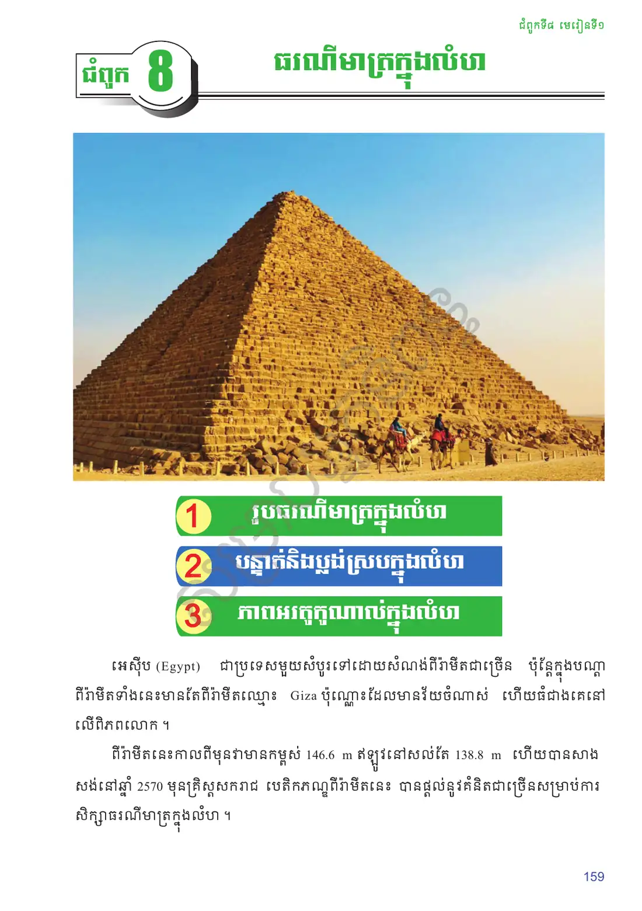
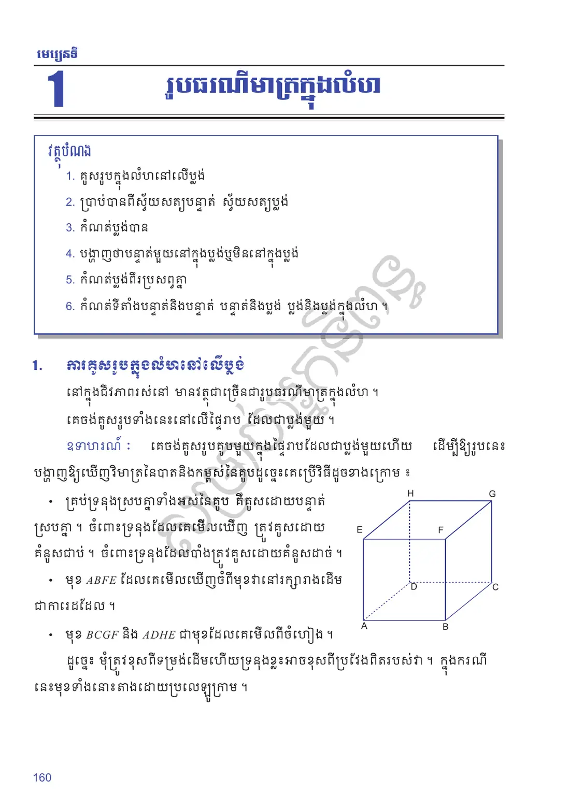
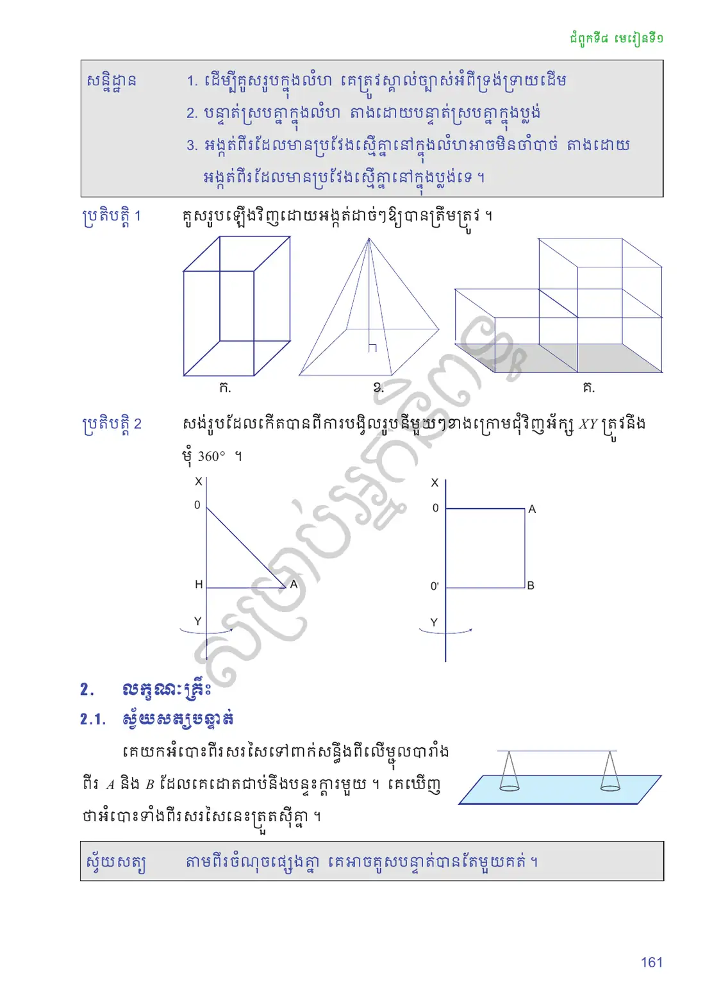
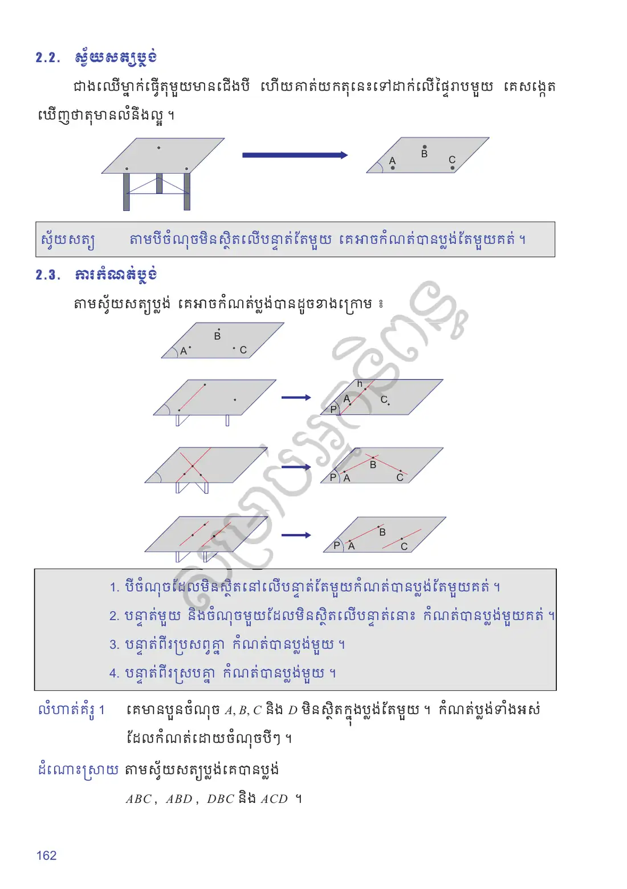
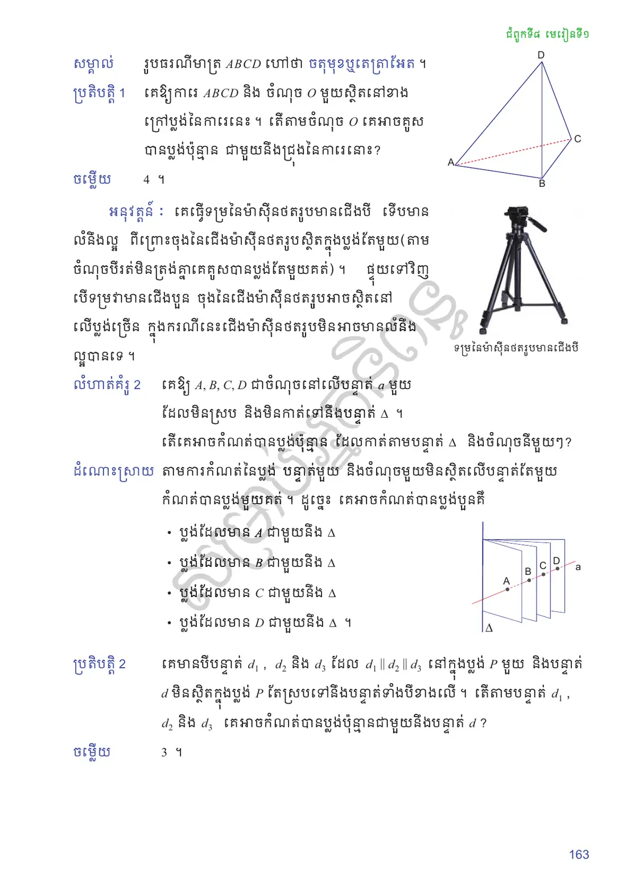
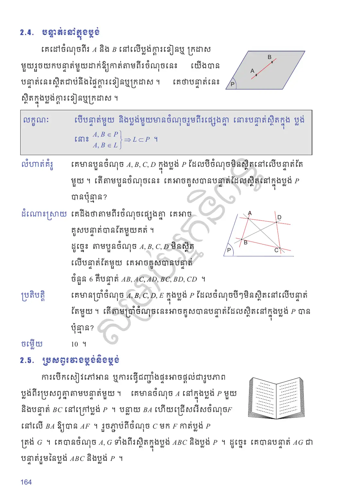
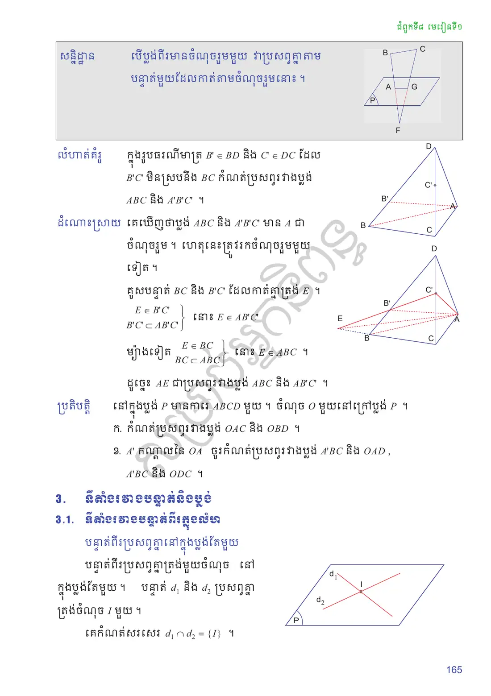
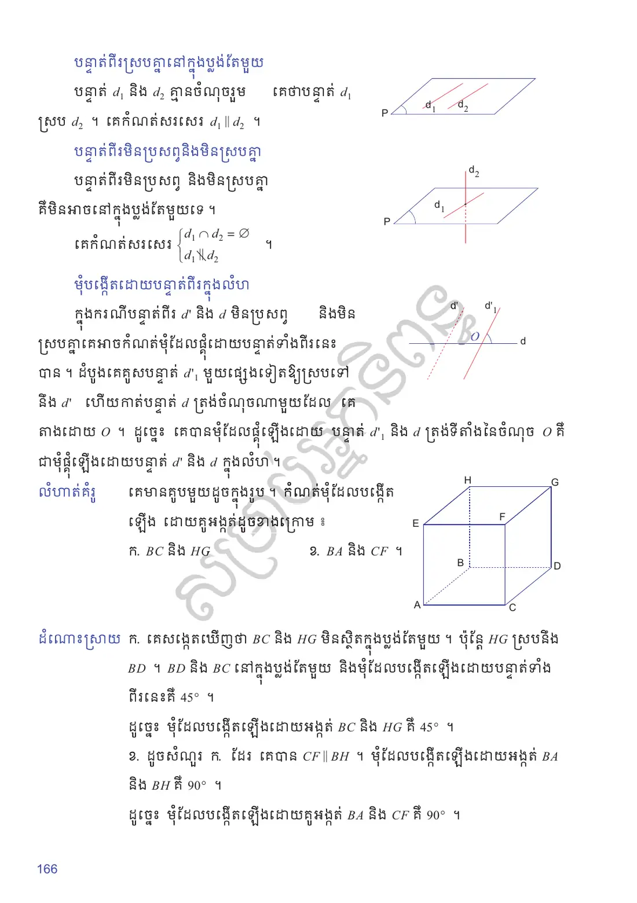
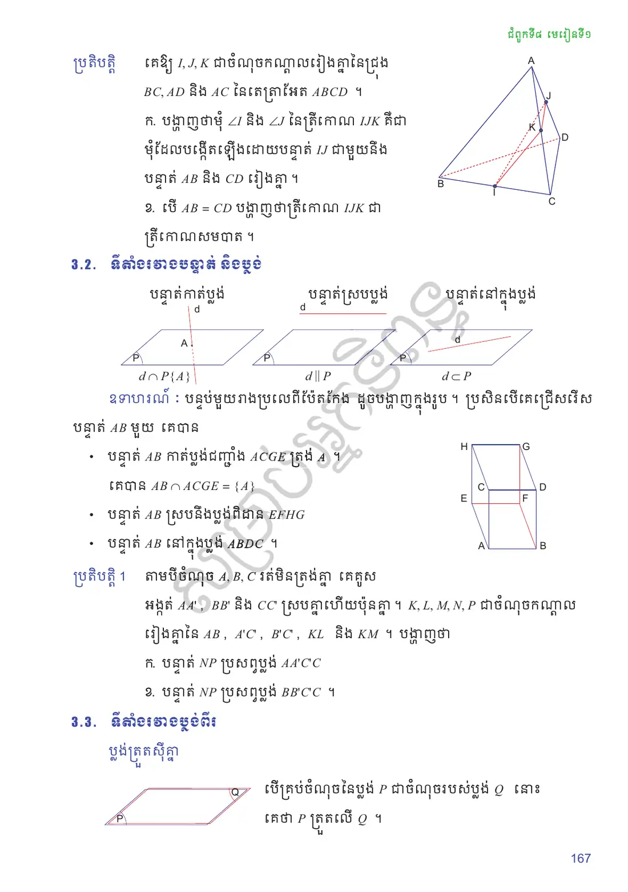
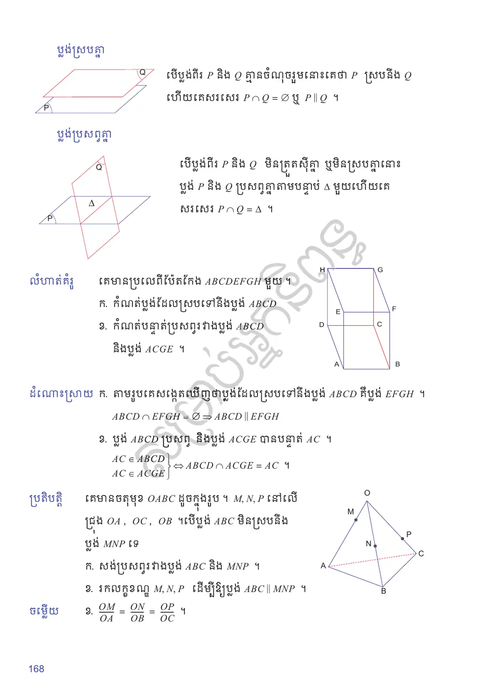
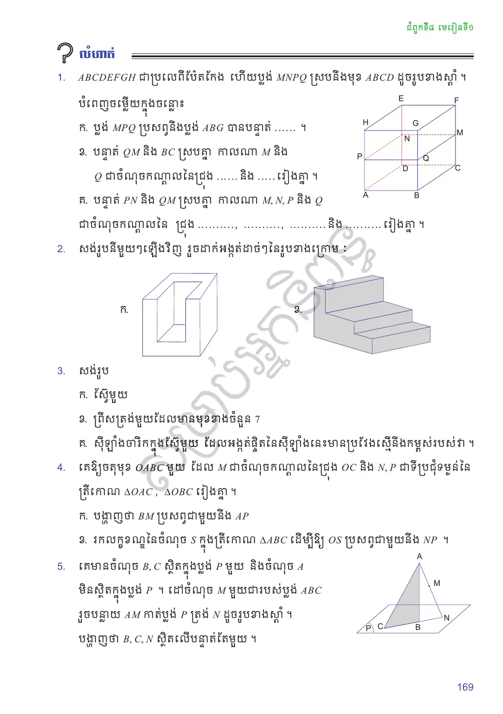
លំហាត់អនុវត្តន៍
\(ABCDEFGH\) ជាប្រលេពីប៉ែតកែង (\(ABCD\) ជាបាត, \(H, G, F, E\) នៅពីលើ \(A, B, C, D\) រៀងគ្នា) ហើយប្លង់ \(MNPQ\) ស្របនឹងមុខ \(ABCD\) ដែល \(M \in CF\), \(N \in DE\), \(P \in AH\), \(Q \in BG\) ។ បំពេញចម្លើយក្នុងចន្លោះ ៖ ក. ប្លង់ \(MPQ\) ប្រសព្វនឹងប្លង់ \(ABG\) បានបន្ទាត់ ...... ។ ខ. បន្ទាត់ \(QM\) និង \(BC\) ស្របគ្នា កាលណា \(M\) និង \(Q\) ជាចំណុចកណ្ដាលនៃជ្រុង ...... និង ...... រៀងគ្នា ។ គ. បន្ទាត់ \(PN\) និង \(QM\) ស្របគ្នា កាលណា \(M, N, P\) និង \(Q\) ជាចំណុចកណ្ដាលនៃជ្រុង ......, ......, ...... និង ...... រៀងគ្នា ។
មើលដំណោះស្រាយ
ក. \(PQ\) ខ. \(CF\) និង \(BG\) គ. \(CF\), \(DE\), \(AH\) និង \(BG\) ។ (តាមពិត ដោយប្លង់ \(MNPQ \parallel ABCD\) នោះ \(QM \parallel BC\) និង \(PN \parallel QM\) ជានិច្ច ។)
សង់រូបនីមួយៗឡើងវិញ រួចដាក់អង្កត់ដាច់ៗនៃរូបខាងក្រោម ៖ ក. រូបប្រអប់មានរន្ធរាង U ខ. រូបជណ្ដើរបីកាំ ។
មើលដំណោះស្រាយ
គូសទ្រនុងដែលបាំង (មិនអាចមើលឃើញ) ដោយគំនូសដាច់ៗ និងរក្សាទ្រនុងស្របគ្នាឱ្យនៅស្របគ្នា ។
សង់រូប ៖ ក. ស្វ៊ែមួយ ខ. ព្រីសត្រង់មួយដែលមានមុខខាងចំនួន \(7\) គ. ស៊ីឡាំងចារឹកក្នុងស្វ៊ែមួយ ដែលអង្កត់ផ្ចិតនៃស៊ីឡាំងនេះមានប្រវែងស្មើនឹងកម្ពស់របស់វា ។
មើលដំណោះស្រាយ
ក. គូសរង្វង់មួយ និងអេលីបអេក្វាទ័រ (ពាក់កណ្ដាលខាងក្រោយគូសដាច់ៗ) ។ ខ. ព្រីសដែលមានបាតជាពហុកោណ \(7\) ជ្រុង ។ គ. ស៊ីឡាំងមានកាំ \(r\) និងកម្ពស់ \(2r\) ចារឹកក្នុងស្វ៊ែកាំ \(R = r\sqrt{2}\) ។
គេឱ្យចតុមុខ \(OABC\) មួយ ដែល \(M\) ជាចំណុចកណ្ដាលនៃជ្រុង \(OC\) និង \(N, P\) ជាទីប្រជុំទម្ងន់នៃត្រីកោណ \(\triangle OAC\), \(\triangle OBC\) រៀងគ្នា ។ ក. បង្ហាញថា \(BM\) ប្រសព្វជាមួយនឹង \(AP\) ខ. រកលក្ខខណ្ឌនៃចំណុច \(S\) ក្នុងត្រីកោណ \(\triangle ABC\) ដើម្បីឱ្យ \(OS\) ប្រសព្វជាមួយនឹង \(NP\) ។
មើលដំណោះស្រាយ
ក. \(P\) ជាទីប្រជុំទម្ងន់នៃ \(\triangle OBC\) ដូច្នេះ \(P\) នៅលើមេដ្យាន \(BM\) ។ ហេតុនេះ \(AP\) និង \(BM\) ស្ថិតក្នុងប្លង់ \(ABM\) តែមួយ ហើយប្រសព្វគ្នាត្រង់ \(P\) ។ ខ. តាង \(I, J\) ជាចំណុចកណ្ដាលនៃ \(AC\) និង \(BC\) ។ \(N \in OI\) និង \(P \in OJ\) (\(ON = \tfrac{2}{3}OI\), \(OP = \tfrac{2}{3}OJ\)) ដូច្នេះប្លង់ \(ONP\) កាត់ប្លង់ \(ABC\) តាមបន្ទាត់ \(IJ\) ។ \(OS\) ប្រសព្វ \(NP\) លុះត្រាតែ \(S\) ស្ថិតនៅលើអង្កត់ \(IJ\) (បន្ទាត់កណ្ដាលនៃ \(\triangle ABC\) ស្របនឹង \(AB\)) ។
គេមានចំណុច \(B, C\) ស្ថិតក្នុងប្លង់ \(P\) មួយ និងចំណុច \(A\) មិនស្ថិតក្នុងប្លង់ \(P\) ។ ដៅចំណុច \(M\) មួយជារបស់ប្លង់ \(ABC\) រួចបន្លាយ \(AM\) កាត់ប្លង់ \(P\) ត្រង់ \(N\) ។ បង្ហាញថា \(B, C, N\) ស្ថិតលើបន្ទាត់តែមួយ ។
មើលដំណោះស្រាយ
\(N \in AM \subset ABC\) និង \(N \in P\) ។ ចំណុច \(B, C\) ក៏ស្ថិតក្នុងប្លង់ទាំងពីរ \(ABC\) និង \(P\) ដែរ ។ ប្លង់ទាំងពីរខុសគ្នា (\(A \notin P\)) ដូច្នេះវាប្រសព្វគ្នាតាមបន្ទាត់តែមួយ គឺបន្ទាត់ \(BC\) ។ ហេតុនេះ \(B, C, N\) ស្ថិតលើបន្ទាត់តែមួយ ។
សំណួរពហុជ្រើសរើស
ជ្រើសរើសចម្លើយត្រឹមត្រូវតែមួយ រួចចុច «ពិនិត្យ»។ ចម្លើយរបស់អ្នកត្រូវបានរក្សាទុកក្នុងកុំព្យូទ័រនេះ។
✎ សំណួរទី ១–១០
✎ សំណួរទី ១១–២០
តេស្តសមត្ថភាព ៖ មេរៀនទី ២៦ រូបធរណីមាត្រក្នុងលំហ (វិទ្យាសាស្ត្រ) — ២០ សំណួរ · ៣៥ នាទី